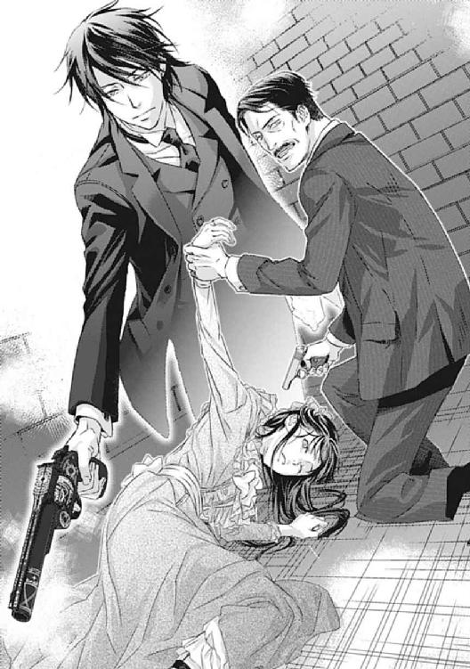

| 桜乙女と黒侯爵 神隠しの館と指輪の契約【期間限定 無料お試し版】<桜乙女と黒侯爵> (角川ビーンズ文庫) | |
| 清家 未森 | |
| (2014) | |
桜乙女と黒侯爵
神隠しの館と指輪の契約
清家未森

角川ビーンズ文庫
本作品の全部または一部を無断で複製、転載、配信、送信したり、ホームページ上に転載することを禁止します。また、本作品の内容を無断で改変、改ざん等を行うことも禁止します。
本作品購入時にご承諾いただいた規約により、有償・無償にかかわらず本作品を第三者に譲渡することはできません。
本作品を示すサムネイルなどのイメージ画像は、再ダウンロード時に予告なく変更される場合があります。
本作品は縦書きでレイアウトされています。
また、ご覧になるリーディングシステムにより、表示の差が認められることがあります。
序 夜の夢
月が浮かんだ濃藍の空。周りは木々が生い茂る藪。
そして有紗は、誰かの背中におぶわれて揺られている。
「だぁれ......？」
背負ったまま山道を駆けていた誰かが、足を止めて振り返った。
「──起きたのか」
寝ぼけ眼をこすっていた有紗は、ぱっと目を輝かせた。
「おにいちゃん？」
暗くて顔がよく見えない。けれど、「そうだ」といつもの声が返ってきたので、すぐに安心した。
「お父さまとお母さまは？」
彼の肩にしがみつき、顔をのぞきこもうと身を乗り出す。彼はまた歩き出していたが、足取りは先ほどまでよりも緩やかだった。
「ここにはいない」
「おうちにいるの？」
「ああ。今から帰るんだよ」
その言葉にほっとして、それから、ここはどこだろうとあたりを見回す。
黒々とした影が四方を取り囲んでいた。自分が深い森の中にいるのだとはわからなかったけれど、〝おにいちゃん〟と二人で散歩しているようで、少し嬉しくなった。
「ありさも歩くわ」
「だめだ」
「どうして？」
「子どもの足じゃ追いつかれる」
真剣な声だった。手をつないで歩きたかったから、駄目だと言われてがっかりしたが、有紗は大人しく従った。それほど有無を言わさぬ響きだったのだ。
それきり無言になった〝おにいちゃん〟の背中で揺られていたが、寂しくなってきて、おずおずと呼びかける。
「おにいちゃん」
「うん？」
「おなかがすいたわ」
今度は〝おにいちゃん〟は駄目だと言わなかった。すぐに足を止め、背中から有紗をゆっくりと下ろしてくれた。
眠る前に着ていたのと同じ、赤地に黄色の花柄が散った着物。その上に彼の外套がかけられていたことに初めて気がつく。暖かい毛糸の感触に包まれて幸せな気分になった。
彼が取り出した小さな巾着を見て、有紗は頰を上気させた。
「あ！ こんぺいとうね？」
「飲み込んじゃだめだぞ」
こくんとうなずくと、彼が金平糖を一粒つまんで口元にもってきてくれる。ころん、と転がって入ってきたそれを有紗はにこにこしながら味わった。
「うまいか？」
「おいしい。......でも、へんなにおいがする」
「変な匂い？」
「あっちから......」
彼は怪訝そうに黙り込み、はっとしたように駆け出した。有紗も足袋のまま追いかける。
「おにいちゃん、まって！」
少し先で木々が途切れ、夜の闇が口をのぞかせている。山道の峠のようだ。
開けた視界の一角が、赤く色づいていた。二人がやってきた方角だ。
夜を照らすそれは、激しく燃えさかる炎の色だった。
「わあ。あれはなに？ きれいねー！」
無邪気に喜ぶ有紗の隣で、〝おにいちゃん〟はしばらく何も言わなかった。
やがて目の前に膝をついてしゃがんだ彼を見て、有紗はぱちぱちと瞬く。
「おにいちゃん、けがしてるの？」
彼の頰に黒い煤がついていた。それまでは暗くて気づかなかったのだ。
「有紗、よく聞くんだ」
彼は有紗の肩をつかみ、少し悲しそうな顔でのぞきこんできた。
「目が覚めたら、すべて忘れろ。今夜起きたことも──俺のことも、全部」
そう言って、彼は有紗の目元を手で覆う。
「きっと守ってやるから。どこに行ってもおまえを見てる。だから安心して眠れ。いいな？」
その優しい声を聞いたら、不思議と眠くなってきて──。
そこでいつも、夜の夢は途絶える。
第一幕 乙女の潜入
がくん、と身体が揺れ、有紗は目を覚ました。
いつのまにかうとうとしていたらしい。着物の上に羽織った毛織りのコートの前をかきあわせ、ぼんやりと車窓へ目をやった。
「わ......、すごい雪！」
帝都からわずか一時間走っただけとは思えないような山脈が続いている。
一面の銀世界──この風景を表すとしたら他に言葉がないというくらいに見事な雪景色だ。
人気のない鄙びた村の中。かろうじて雪がどけられた道を走っているのは、この車だけのようで、なんとなく心細い気持ちになってくる。
「そろそろ着くぞ」
明朗な声に、はたと隣の運転席を振り返ると、ハンドルを握った馨が前を向いたまま笑っていた。
「なんだ、昨夜眠れなかったか？ そんなに楽しみにしてたのか」
英国から取り寄せたとかいう、焦げ茶に細い紺の格子柄の背広がよく似合っている。明るく大らかで優しい、有紗の自慢の叔父だ。まだ二十代の彼は、どちらかというと兄のような存在だった。
「違います。子どもじゃないのよ」
ふくれて言い返したものの、有紗はすぐに口をつぐむ。今日の〝別荘行き〟を気にして眠れなかったのは事実だ。
「ちょっと、夢を見ていたの」
「ふうん。どんな？」
「......それは覚えていないんだけど」
こめかみを押さえ、有紗は首をひねる。とても懐かしい夢を見た気がするのに、どんな内容だったか思い出せなかった。
「昨夜眠れなくて、夢も忘れるほど熟睡してたんだろ。別荘くらい俺がいつでも連れてきてやるのに。遠慮しなくていいんだぞ？」
言い分を信じなかったのか、からかうように馨は言ったが、ハンドルをとられて「おっと！」と慌てた声をあげた。
「あら。叔父さまこそ、冬休みで浮かれてるんじゃない？」
「何を言う。俺は仕事だ。まったく、もうすぐ正月だってのに、こき使ってくれるよな」
「でもすごいわ。大物政治家の年末総会の取材だなんて。他にも記者がたくさん押しかけるんでしょう？ わたしも行ってみたいわ」
「将来記者になったら来るといいさ」
にやっと笑って流し目をくれる彼に、有紗は澄まして言い返す。
「もちろん行きます。その時には叔父さまより先に大スクープを連発してみせますからね」
「そりゃすごい。油断しないで待ってるよ」
楽しげに馨は笑ったが、またハンドルをとられたのか「うおっ」と声をあげて立て直した。雪の田舎道の運転にだいぶ苦心しているらしい。
「だ、大丈夫だ、心配するな！ 無事に友達のところまで送ってやるからな」
軽口をたたいている場合ではないと思ったのか、しっかとハンドルを握り直した彼の横顔に真剣みが増している。有紗は何か言おうとしたが、結局は目を伏せて前に向き直った。
時は大正五年。
ご一新を機に開国が果たされ、さまざまな西洋文化が入ってきた。自動車もその一つだが、徐々に普及してきたとはいえ、まだまだ一部の階級の乗り物という印象が強い。一新聞記者である馨がこうして乗り回せているのは、彼が財閥として知られる六条家の子息だからだった。
叔父が自動車の運転ができると知っていたからこそ、別荘まで連れていってほしいと有紗も頼んだのだが──。
「しかし、やっぱり俺もついていったほうがいいんじゃないか？ 年末年始に他所様にお邪魔するんだし、保護者として挨拶くらいしとかないと」
ぎくりとして有紗は顔をあげる。
「いいえ！ 仲良しの集まりなんだからお気遣いなくって言われてるの」
「そうか？ まあ、おまえにも付き合いってものがあるんだろうけど......」
すんなりと引っ込んだ馨が、どこか羨ましげにぼやいた。
「いいよなあ。長期休暇に学友の別荘にご招待なんて。俺が学生の時はそんな優しい友達いなかったぞ。せいぜい大事にしろよー？」
「え、ええ！ とっても優しいお友達なの。ウフフフ......」
笑ってごまかしながらも、焦りで冷や汗が浮いてくる。
（うう......。騙してごめんなさい、叔父さま）
帝都から近い別荘地として近年人気の青ヶ台湿原。その一角にある、女学校の級友の別荘へ招かれたという名目ではるばる連れてきてもらったが──実はそれは真っ赤な噓なのだ。
ちらりと、馨が心配そうな視線をくれた。
「おまえ、いつもみたいに『事件の匂いを見逃すな！』とか言ってうろちょろするなよ？」
「そ、そんなことしないわっ」
「ほんとかぁ？ おまえは俺に似て好奇心旺盛だからなあ。ハハハ」
まったく疑っていない馨を正視できなくなり、罪悪感でうずく胸を押さえつつ有紗はさりげなく窓の外に目を向ける。
（叔父さまに話したら、きっと止められるわ。それじゃ困るんだもの。わたしがなんとかしないと......）
事の起こりは、女学校が冬期休暇に入る少し前のこと。
六条家に──母方の伯父たちに呼び出されたのがすべての始まりだった。
『おまえにやってもらうことがある』
待ち受けていた三人の伯父たちは、相変わらず高圧的な態度で、顔を合わせるなりそう言ってきた。
『まあ、なんでしょうか？ わたしにできることでしたらなんなりと』
どうせろくでもないことだろうと思いながら、有紗はいつものように完璧な笑顔で応じた。
一応、立場というものはわきまえている。いけすかない人たちであっても非礼は許されない。親戚だからという関係性の他にも、そうしなければならない理由があるのだ。
彼らのほうもそれは承知していて、心おきなくいびってくれる。その日もそうだった。
『相変わらず愛想笑いのうまいやつだ。父親にそっくりだな』
『まったく。娘らしい可愛げもない。せっかく名門に通わせてやっているのに、学院で恥ずかしい態度をとったりしているんじゃないだろうな』
ねちねちと言われるのもいつものことだった。慣れているので、とびきりの笑顔でさりげなく皮肉を返す。
『お褒めにあずかり、ありがとうございます。学校でも笑顔が素敵ねってよく言われますの。伯父さまたちのご教示のおかげですわ』
こうすると、へこたれないことに業を煮やしてか嫌味が倍になって返ってくるのだが、それにももう慣れている。早く終わらないかしら、と冷めたことを考えながら、あくまでもにこやかに対応するのがいつもの流れだった。
（わたしみたいな小娘を、よってたかっていびるなんて大人げないと思っていたけど......まあ仕方がないわね。一番文句を言いたい相手が近くにいないんだものね......）
有紗の母、小夜子は六条家の令嬢として生まれた。三人の兄と弟の馨に囲まれ、たった一人の女子として随分大事に育てられたらしい。
ところが年頃になった小夜子は、父兄の期待をよそに駆け落ち同然で結婚してしまった。
その相手、つまり有紗の父である一乗寺孝介は小さな薬種屋の息子だった。いわゆる身分違いの結婚だったのだ。
大事な令嬢をかっさらったとして、父は六条家の怒りを買ったらしい。けれど有紗が生まれ、すぐに弟が生まれて、つましいながらも仲睦まじく暮らす様子にほだされたのか小夜子の祖父が最初に折れた。その後は父兄たちもなし崩し的に二人の関係を認め、今に至る。
それでもいまだに気が収まらないらしく、時々こうして呼び出されては、ちくちく言われるというわけである。昔は悲しくて泣いたこともあったが、今や有紗は悟っていた。
（お父さまはお仕事で留守がちだし、お母さまはお嬢様育ちで難しいことはおわかりじゃないし、弟たちは小さいんだし。これも長女の役目よね。女学校に行かせてもらったり、いろいろ援助していただいてるのはありがたいことだもの）
いつものことだ、少し我慢すれば済む。そう思って聞き流していたのだが、その日は少し風向きが違っていた。
『玲弥は随分と成績優秀らしいな。中等科では常に一番だそうだが、進路の話はしているのか？』
すぐ下の弟の玲弥は、姉の目から見ても聡明で、品行方正を絵に描いたような中学生だ。しかし急に話題に出されたことに有紗は少し身構えた。何やらよくないことを持ちかけられそうな予感がしたのだ。
『担任の先生いわく、どこの高等学校へ行っても問題はないそうですわ。大学のお話までされているとか』
『それは結構なことだ。進学させてやらないのは惜しい。おまえもそう思わないか？』
『ええ、もちろん......』
『だが今の一乗寺の家にそんな金はない。孝介が戻る気配もないようだしな』
痛いところを突かれ、有紗は声を吞み込む。
仕事柄、薬草の仕入れなどで家を空けることが多かった父だが、半年前に出かけたきり帰ってこないのだ。連絡すら寄越さず、ほぼ行方不明という状態になっている。
おかげで店の営業にも支障が出ており、お嬢様育ちの母が常連客相手に慣れない取引を細々やってなんとか続いているという形だった。
『玲ちゃんはなんとしても高校へ行かせます。あの子は勉強が好きなんです。それに、きっと大成してお国の役にたつ人材になりますわ。わたしが保証します！』
『進学するにもただでは行けないぞ。わかっているだろうが』
またしても有紗は詰まった。
自分自身、六条家の援助で名門女学院に通わせてもらっている。当主の親戚だから、その縁で雲の上の世界の令嬢たちと級友としてお付き合いできているのだ。
けれどこんなふうに言われるのであれば、なんの未練もなかった。
『じゃあ、わたし学校をやめて働きます。弟たち三人とも、わたしが養って学校も出します』
近年は女性の社会進出が進み、職業婦人と呼ばれて活躍している。有紗もいずれは馨のような新聞記者になるつもりだった。
だから働くことに抵抗はまったくないのだが、伯父たちにとっては理解できない考えらしい。顔をしかめられてしまった。
『馬鹿を言うな。六条に縁の娘が、結婚以外の理由で退学などみっともない』
『わたしにとってはそれは恥ではありません。いつでもその覚悟はできています！』
『我らにとっては恥なのだ！』
『いいえ、わたしにとっては──』
『待て』
白熱しかけた口論を止めたのは、一番上の伯父である明だった。
『玲弥の学費を援助してやってもいい。必要ならば個人教師もつけてやろう。その対価としておまえが私たちの期待に応えられればの話だが』
これは取引ではなく命令だ。どんな難題を出されるのかと思わず身構える。
『何をしろと仰るんですか？』
『青ヶ台湿原の別荘地に黒鳥館という屋敷がある。烏丸侯爵の別荘だ。そこに潜入しろ』
『烏丸侯爵......？』
『いろいろと変わった噂のある人物だ。その別荘で年末に宴を開くらしい。侯爵の秘密でも弱みでも醜聞でも、なんでもいい。とにかく探ってつかんでこい』
思わぬ話に驚いていた有紗は、眉をひそめた。よくわからないが、烏丸侯爵という人はおそらく六条家の政敵なのだろう。蹴落とすための材料を手に入れたいようだ。
『......重要なお役目のようですけど、どうしてわたしに？』
『小娘が相手なら向こうも油断するだろう』
それは一理あるかもしれない。烏丸侯爵もまさか一介の女学生が正体を偽ってスパイに来るとは夢にも思わないはずだ。しかし内容が内容だけに、有紗はためらいを覚えた。
『でも......、人を陥れて得たお金で学校へ行けなんて、弟に胸を張って言えません』
三人の弟たちにはいつも言って聞かせている。噓をついては立派な大人になれない。顔をあげて堂々と歩けるように生きていくのよ、と。だがこの依頼はまるで真逆だ。
『おまえのつまらない矜持のために、玲弥の将来を奪うのか？』
『......！』
つまらない、と言われてさすがに頭に来た。かっと頰が熱くなったが、しかし言い返せなかった。自分の言い分は世間知らずで青臭いのだろうという自覚はある。
（伯父さまたちがどんなふうにして六条財閥を大きくしてこられたのか、その御苦労をわたしは何も知らないもの。責める資格はない......）
名門女学校に通わせてもらい、折々には家計の援助もしてもらっている。それくらいの金を出すことは六条家にとっては痛くもかゆくもないことだ。玲弥の学費だって同じことだろう。
けれど、だからといってそれを要求するのは筋が違う。本来なら一乗寺家の中で片付けなくてはならない問題なのだから。
父が失踪中の今、現実的に考えて六条家の援助は必須だ。考えてみれば、ただで助けてもらうよりは働いて報酬という形にしてもらったほうが気は楽かもしれない。
『......わかりました。お引き受けしますわ！』
弟たちの学費も、ごはんも、おやつも、すべて姉である自分が調達してみせる。
その使命と、そして意地とで有紗は燃えていた。
（正当な報酬をいただければ何も問題はないんだもの。伯父さま方、今こそ帝国乙女の底力をご覧にいれてみせるわ──！）
「──ここじゃないか？」
馨の声と車が止まる振動で、はっと我に返った。
道路から林の中へ脇道が延びている。木の板に墨で【黒鳥館】と書かれた案内板がひっそりと立っているのを見て、緊張がこみあげた。
「ちょっと待ってろ。屋敷の前まで送ってやる」
「あっ、いいの！ すぐそこみたいだから歩いていくわ」
車をバックさせようとする馨を有紗は慌てて止めた。
もし何かの拍子に烏丸邸の人に挨拶でもされたら一発で噓がばれてしまう。それはまずい。この優しい叔父は、己の兄たちの企みを知らないのだ。
「そうか？ 遠慮しなくていいのになぁ」
名残惜しげに馨は見つめてきたが、気を取り直したのか「じゃあ荷物おろすぞ」とドアを開けて外へ出た。
有紗も続いてドアを開ける。刺すような冷気が身体を包んだ。思わず襟巻きの中に首をすぼめる。
「わあ、寒い」
「うん。冷えるな。はしゃぎすぎて風邪引くなよ」
「わかってます。子どもじゃないんだから」
「子どもだよ、俺にとっては。──ほら」
小さな旅行鞄を渡され、有紗は礼を言って受け取った。これからはこの鞄だけが自分の味方だ。そんなふうに考えて、ぎゅっと胸に抱きしめる。
「あとな、これも持っていけ」
「えっ？ なあに？」
ごそごそと馨が引っ張り出したのは大きな化粧箱だった。得意げに彼が開けた蓋の中身を見て、有紗は驚きのあまり頰を染めた。
淡い緑の、光沢のある布地。襟元にリボンがあしらってある。夜会用のドレスだ。
「綺麗......！」
「お嬢様方が集まるなら、夜は晩餐会とかあるだろうからな。おまえに似合うのを探すの大変だったんだぞー？」
驚きように満足したのか、悪戯っぽく頭をなでられる。
思いがけない贈り物に感激して有紗は馨に抱きついた。
「素敵！ お嫁さんになってあげる！」
「ハッハッハ！ それは無理だ！ 俺は叔父でおまえは姪だから！」
「ええ、わかってる！」
抱き上げてくるくると勢いのまま何度か回ると、馨はようやく有紗を地面に下ろした。
「楽しんでこいよ」
笑顔で見つめてきた叔父の優しいまなざしに、一瞬胸が詰まる。つい何もかも打ち明けたくなったが、なんとか堪え、こちらも笑みを返した。
「ありがとう。叔父さま」
こうして見守ってくれる人がいるから頑張れる。きっと大丈夫だ。そう自分に言い聞かせた。
馨に別れを告げると、有紗は別荘に続く道を歩き出した。
背後でしばらく自動車のエンジンの音がしていたが、やがて遠ざかっていった。叔父に秘密がばれなかったことにほっとして、黙々と歩く。編み上げ靴の裏が雪を踏んできしきし鳴った。
林に囲まれているせいか、雪が解けずに残っている。いくつも轍が走っているのを見ると、宴の客を乗せた自動車が何台も通ったのだろう。
（......烏丸侯爵って、本当に怖い方なのかしら）
冬期休暇に入る前に、烏丸侯爵については自分なりに調べた。その結果、耳に入ってきたのはおどろおどろしい話ばかりだった。
『烏丸家といえば、京都の陰陽道の流れをくむ家柄なのですって。今でも式神がお屋敷中にいるそうよ』
『式神を使って婦女子を攫っているって聞いたことがありますわ。すごく色好みの方みたい』
『そうそう。烏丸邸に入ったはずの少女がいつになっても出てこなくて......そのまま行方知れずになったとか』
『西洋のお伽噺にあるでしょう。あれになぞらえて、〝青髭〟と呼ばれているそうですわ。怖いですわよねえ』
口々に噂話を教えてくれた級友たちを思い出し、思わずぶるっと震える。
（そんな怖い方の弱みなんて、どうやって探ったらいいの......!?）
林が途切れ、視界が開けた。
目の前に、どっしりとした煉瓦造りの門がある。【黒鳥館】と彫られたその向こうに、黒々とした影がそびえていた。
黒く塗られた壁と灰色の石で巧みに築かれた館。均等に造られた窓は菱形をしており、美しくも奇妙な印象を感じさせる。三階建てのようだが、いやに大きく見えた。
鉛色の空の下、どことなく陰気な雰囲気がただよう館を、有紗はごくりと喉を鳴らして見上げた。
（お屋敷からして早くも怖い......っ！）
屋根に留まった烏たちがガアガアと鳴くのも不気味で、つい回れ右しそうになる。
『姉さん、本当に友達の別荘に行くの？ 何かあったんじゃないの？』
ふと、出かけ際に心配そうに訊ねてきた弟の玲弥の顔が脳裏に浮かんだ。
いつもと様子が違うのを敏感に察したのかもしれなかった。家族にも同じように噓をついて出てきたのだ。
ここで逃げ帰ったら、噓をついてまで来た意味がなくなってしまう。
（玲ちゃん、ごめんね。お正月を一緒に過ごせなくて、わたしも寂しいわ。でも待っててね。お姉ちゃまが必ず玲ちゃんを学校に行かせてあげるから！）
心の中で弟に誓うと、えいっと気合いを入れて有紗は黒鳥館へと足を踏み入れた。
使用人のお仕着せは洋装だった。ここでは女中ではなくメイドと呼ばれるらしい。
襟と袖口だけが白い丈長の黒のワンピースと、仕事中はその上に白い前掛けをつけるのが決まりだ。
すんなりと潜入に成功した有紗は、メイドとして雑務に勤しんでいた。
この黒鳥館には今、年末年始を過ごすため訪れた烏丸家の当主と、招かれた客人たちが滞在している。彼らの世話をするのが仕事だ。同じように雇われた同世代の娘たちもいて、その点では心細い思いをすることはなかった。
（問題は、どうやって烏丸侯爵の秘密に迫るかということだけど......）
メイドという立場上、当主の傍近くに寄る機会はほぼないといってよかった。潜入して三日目、そろそろ動き出したいところなのだが、いまだに当主の顔すらわからない状況だ。
洗濯物の処理が終わったついでに、なんとなく当主の部屋があるらしき二階のほうをうかがっていると、にぎやかな声が飛んできた。
「あっ、ねえ、手空いてる？ 雪かきしてるんだけど手伝ってくれない？」
外套を着込んだ若い娘が玄関からホールに入ってくる。
メイド仲間のミツだ。一足先に屋敷に雇われたという彼女は、有紗よりもいくつか年上の、話し好きな人だった。
「えっと。あんた、名前なんて言ったっけね。ごめんね、あたし忘れっぽくって」
けらけらと笑う彼女に、有紗も笑顔で応じた。
「新入りの市川有紗子です」
「あさこ？ ああ、思い出した！ 吉原様のご縁で雇われたとか言ってたね。可愛い名前だよねえ」
けたたましく手をたたくミツに、有紗は笑顔のまま、うんうんとうなずく。
潜入する手筈は伯父たちが整えてくれていたが、もちろん六条家の名は出せないし、本名も名乗るわけにはいかない。堂々と偽名を使って別人になりきっていた。
「そういえば、今なに見てたの？ 面白いものでもあった？」
不思議そうに言われ、どきりとする。二階をうかがっていたのを見られていたらしい。
「いえ......、当主さまは全然お部屋から出ていらっしゃらないみたいですけど、閉じこもって何をなさってるのかしらと思って」
下手にごまかすと却ってあやしまれそうだと判断し、世間話のように答えると、ミツは納得したように大きくうなずいた。
「ほんと、変わった御方だよね。こんな田舎でわざわざ正月を過ごそうっていうんだから何か目的があるのかと思えば、引きこもって気配すらないんだから。まあ、お客様がまだそろってないからかもしれないけど」
「雪で到着が遅れていらっしゃるみたいですね」
「そりゃこうなるってもんだよねえ。招待するんなら帝都のお屋敷に招けばいいのに。お客様たちもいい迷惑だろうね。早くに着いたお客様たちも暇を持て余してらっしゃるしさ」
「そうですねえ」
笑って相づちを打ちながら、有紗はふと違和感を覚えた。
（確かにそうだわ。わざわざ帝都から離れたところにお客人を集めるのは、何か特別な理由があるんじゃないかしら）
一帯には多くの別荘があり、こんな雪の季節にも訪れている政財界人はいるらしい。馨の取材先もそうだ。しかし烏丸侯爵は変わり者で知られた人物だったはずである。帝都ならともかく、こんな鄙びた場所に呼ばれて律儀にやってくるような付き合いの客がそんなにいるのだろうか？
「ミツさんは、もう当主さまにお会いになったんですか？」
さりげなく探りをいれると、彼女は顔をしかめて首を振った。
「ううん。だって部屋から出てこないんだもん」
「どんな御方なんでしょうね。わたし、怖い噂を聞いたことがあるんですけど......」
「あ、あたしも聞いた！ あやしの術を使うとか、財産を食いつぶす勢いで宝石を買い集めてるとかいうやつでしょ？ なんでもその術のために宝石が必要とかで、すごい執念らしいじゃない。綺麗な指輪や耳飾りをしてた令嬢が攫われて殺されたって話だよ」
ひっ、と有紗は固まった。
（ま、ますます怖いんですけど......っ！）
当主の人となりを探るつもりが、余計に恐ろしい人物だというのがわかっただけだった。そんな人の弱みなんて、本当に握ることができるのだろうか。
「──ああ、そこのメイドさん」
ふいに男の声が降ってきて、震えていた有紗は我に返ってそちらを見た。
玄関ホールから二階へ延びる階段の踊り場に、若い男が立っている。
濃いグレイの三揃いに包んだ長身の体軀、すっきりと撫でつけた髪、彫りの深い整った顔立ち。どことなく外国の俳優を思わせる雰囲気があった。
彼は階段を下りてくると、気さくな様子で話しかけてきた。
「部屋まで珈琲を持ってきてくれますか。じゃあ──君にお願いしましょう」
二人のメイドを交互に見て、有紗ににっこりと笑いかける。外套を着たままのミツは屋外で仕事中だと判断したらしい。
「かしこまりました。すぐにお持ちいたします」
さっとメイドの顔に戻り、有紗はうやうやしく答える。ミツも丁寧に一礼し、こちらに目配せしてから出ていった。雪かきは後でいいよ、ということらしい。
「新しく雇われたメイドさんかな。四年前にはいませんでしたね」
呼び止められ、厨房へ行こうとしていた有紗は振り向いた。
「はい。三日前からお勤めしています」
「三日前か。だったら当然何も知らないでしょうね」
楽しげに笑った彼を怪訝な思いで見つめる。一人でうろうろしている彼のことはこれまでに何度か見かけたことがあった。この館へ来た時に、当然だが客人たちの名前などは教え込まれている。
（この方は確か、伏見さま......だったわね。銀行の御曹司だそうだけど......）
烏丸家とどんな関係の人なのだろう。思わせぶりな言葉も気になってつい見つめてしまうと、なぜか彼のほうもじっと見つめ返してきた。
「ちなみに──君はどういった経緯でこちらにお勤めを？」
まさか客人である彼から突っ込んだことを訊かれるとは予想外で、有紗はどぎまぎしながら言葉を探す。
「え......と、吉原男爵さまのご紹介でまいりました。お正月の宴のためにメイドを募集しているとのことでしたので」
「ふむ、吉原男爵のね」
「......あの、何か......？」
もしかして素姓をあやしまれているのかと緊張したが、見つめていた伏見はそこで我に返ったように笑顔になった。
「ああ、失礼しました。四年前の使用人が集められているようなので、新入りさんが珍しくてね。ちょっと興味があったもので」
照れ笑いもさまになっている。有紗は不思議に思って彼を見上げた。先ほどから何度かその単語が出てくるが、なんなのだろう？
「四年前と仰いますと......？」
「四年前にも同じ時期に宴が開かれたんですよ。この館で」
メイドの出過ぎた態度を不快にとった様子もなく、彼はあっさりと教えてくれた。
「毎年恒例の行事のようなものでしょうか」
「いや......、あの時以来ですね。同じ面々が集まるのは」
「ご友人様方のお集まりなのですか？」
「ふふ。そんな楽しい会合ではないですよ。言うなれば......」
気障ともいえる仕草で肩をすくめた伏見が、内緒話をするように顔を寄せてくる。ふわりと、香水のいい匂いがした。
「秘密の共有者たちの反省会──というところです」
（......秘密？）
急に接近されて面食らいながらも、有紗は驚いて見つめ返した。
〝共有者〟の中には烏丸侯爵も当然含まれるのだろう。その秘密というのが何かの鍵になるかもしれない。
驚きに気づいたのか、彼は意外そうな顔になった。
「その様子じゃ本当に知らないんですね。あの話、誰にも聞いていませんか？」
「......？ あの、何かあったのでしょうか？ わたし、このあたりに来たのは初めてで」
伏見は傍の大きく開いた窓へと目を向けた。玄関前のポーチとそれに続く庭が見えている。
「四年前──ちょうどこんなふうに雪の積もった日でした。招待客の令嬢が忽然と消えて、行方が知れなくなったという事件があったんですよ」
「消えた......？」
そう、と伏見が深刻な顔でうなずく。
「吹雪の夜で、とても自分から出ていったとは考えられなかった。神隠しのような、不可思議な事件でね。身分違いの恋人との交際を反対されての覚悟の家出だの、この屋敷のどこかで心中をはかって発見されずにいるだの、招待客の誰かに殺されただの様々な憶測が飛びましたが──真相はわからないままです」
有紗は息を吞んだ。
不気味な館に、不気味な噂のまとわりついた当主。怖い怖いとは思っていたけれど、まさか現実にそんな事件が起きていたなんて。
「じゃあ、その方は今でも......？」
「ええ、見つかっていません。四年経ってもね」
そこで伏見は、ふっと表情をゆるめた。
「おや、怖がらせてしまったかな。退屈だったもので、つい口が滑ってしまいました。申し訳ない」
「あ──いいえ！」
「そうですか？ それならよかった。では、珈琲をお願いしますね」
また話し相手になってください、とにこやかに笑って、彼は階段を上っていった。
彼が階上に消えるまで頭を下げて見送ると、有紗は急いで厨房に向かった。
（間違いないわ。その失踪事件こそ、烏丸家の秘密なんだわ！）
屋敷に入ったはずの少女が出てこなかったという、級友から聞いた噂話とも符合する。それにミツの話では、当主はあやしの術を使うらしいと言っていた。もしそれが本当なら、令嬢を神隠しのように消してしまうこともできるかもしれない。
（ひょっとして、その令嬢も烏丸侯爵の秘密を知ってしまったのかも。それで口封じされてしまった......？ ううん、もしかしたら──）
有紗は足を止め、ごくりと喉を鳴らして振り返った。
消えた令嬢は、まだこの館のどこかに閉じこめられているのかもしれない──。
夜中を待って、有紗はそっと起き出した。
屋根裏の使用人部屋にも、ホールの大時計の鐘はかすかに聞こえる。先ほど鳴ったのは午前二時の鐘だった。さすがに館中が寝静まっている時間だ。
マッチを擦って蠟燭に灯りをつけ、メイド服のポケットから取り出した紙を広げる。伏見から話を聞いた後、出来る限りの時間と知恵を捻出して書き出した館の見取り図だ。
（閉じこめておくとしたら、人目につかないのが必須条件だわ。となるとたぶん二階ではなさそう......お客様方がお泊まりだものね。一階にはそれらしき場所はなかったし、やっぱりあやしいのは三階かしら。でも離れの建物も捨てきれない......）
一階は食堂やサロン、ホールといった客用の場所と、厨房や洗濯室などの使用人の領域とに分かれている。二階は客室と主の部屋。三階は未使用で、資料室という名の物置になっているようだ。
難しい顔で見取り図としばしにらめっこしていたが、息をつくと、それをたたんでしまいこんだ。
（時間はあるんだもの。今夜から一つずつ捜してみるしかないわ）
消えた令嬢が今も生きているのか、それとも既に亡くなっているのかはわからない。どちらにしろ烏丸家が隠しているのだとしたら捜すという行為には危険がつきまとうだろうし、夜中に一人で探索するというのも単純に怖いと感じる。
だがここまできたらやるしかないのだ。何かつかんで帰らなければ、伯父たちに報酬を請求できないのだから。
（それに、その令嬢がお気の毒だし......。何より、そんな恐ろしいことをやっている烏丸侯爵が咎められないなんて許せないもの！）
「悪は罰せられるべきだわ！」
叔父譲りの正義の記者魂に突き動かされ、気合いをいれて身支度する。鉄の塊を入れて補強した編み上げ靴も、家から持ってきた各種薬包も万全だ。もし悪の侯爵と鉢合わせした時にはこれらで応戦しなければならない。
（さあ、それじゃそろそろ──）
いざ探索に、と扉を開けようとした時だった。
どこか──そう遠くないところで物音がしたのが聞こえた。有紗ははっとして息を殺し、耳を澄ませた。
屋根裏にあるのは使用人の部屋と物置くらいだ。メイドの誰かが不浄にでも行ったのだろうかと思ったが、何か引っかかるものを感じた。
（逆側の階段を下りてる......？）
屋根裏に繫がる階段は二つある。両端にあるため、メイドたちは目的によって階段を使い分けていた。不浄や風呂に行くには東側を、まっすぐ仕事に向かうには客室に近い西側を、というように。
けれども今の足音は西側に下りていった。そちらからも不浄には行けるがだいぶ遠回りになる。こんな夜中にわざわざ選ぶとは思えない。
（なんだか匂うわね）
自分以外に活動している者がいることに興味を引かれ、有紗は静かに部屋を出た。
軋まないよう細心の注意を払って階段を下り、あたりをうかがう。三階の廊下の先に人影があるのを見つけ、足音を殺して尾行した。
見失わずに済んだのは、その人影が灯りを持っていたからだった。遠いので誰なのかまではわからないが、人目を気にした様子ながらも迷いのない足取りで進んでいく。明確な目的地があるようだ。
廊下の奥にある扉の前で人影は立ち止まった。開けようとしているのか、カチャカチャという金属音が闇をぬって響いてくる。
（鍵がかかっているから入れないのに。何が目的なのかしら？）
三階があやしいと感じた時点でとうに有紗も確認済みだ。ただ、あの扉の向こうに何があるのかまではわからない。
（まさか、わたしと同じで消えた令嬢を捜しているわけがないし......）
──カチン、と小さな音がした。
人影が扉を開けて中へ入っていくのに気づき、有紗は思わず口を押さえた。
（鍵をこじ開けた！）
もともと鍵を持っていたとは思えない。それなら最初から使っていただろう。
注意深く近づき、扉の向こうをうかがう。気配がないのを確認してから扉の向こうにすべりこんでみると、短い廊下があり、また扉があった。簡単に出入りできないよう二重扉にしてあるのだ。そして、二つ目の扉も鍵がこじ開けられていた。
（もしかして、この人......）
意を決し、扉の隙間からこっそり侵入する。中は暗かったが、目が慣れてくると、背の高い棚がいくつも並んでいるのがわかった。
近くの棚に置かれた大きな桐の箱を見て、有紗は確信を深めた。刻まれた文字は高級磁器の産地を表している。六条の屋敷でも同じものを見たことがあるから間違いない。
おそらく他の棚にも同様のものが収められているのだろう。ここは館の宝物庫なのだ。
そんな場所に夜中に忍び込む者といえば他に心当たりがなかった。
（やっぱり、泥棒!?）
部屋の奥から物音がしている。お宝を物色しているのだろうか。後をつけられたとは思っていないようで、こちらに気づいた様子はない。
ほのかな灯りの中で影が動くのを、有紗はうろたえながら棚の陰からうかがう。
（どうしよう!? 薬で眠らせて捕まえられるかしら？ でも失敗したら逃げられちゃう。まずは縄を用意するべき？ けど、縄を取りにいった隙に逃げてしまうかも......。だったら誰か呼びに......ああっ、だめ！ それだとわたしがここにいる理由に説明がつかない！ でもでも、みすみすお宝を盗ませるわけには──）
「何をしている」
突然声がして、心臓が止まりそうになった。
背後に誰かいることにまったく気づいていなかった。血の気が引くのを感じながら有紗は振り返った。
闇の中から、すっと長身の影が現れる。
ランプの灯りに照らし出されたのは、若い男の顔だった。
鼻筋が高く、作り物のように整った容貌の──ひどく冷たい目をした青年が、じっとこちらを見ている。
「何をしているのかと訊いている」
声も氷のように冷たかった。その冷ややかさにも動揺して、有紗はからからの喉から声を絞り出す。
「ち......違うんです。わたし、あの......尾行してて──」
「動くな」
厳しい声とともに青年がまっすぐ腕を掲げる。その手に握られているものがピストルだと気づき、身体が凍りついた。
そんなものを向けられたのは当然ながら生まれて初めてだ。このままでは誤解されて撃たれてしまうかもしれない。なのに恐ろしくて言葉が出てこなかった。
青年がわずかに眉をひそめる。
「動くなと言ったのが聞こえなかったか？」
「ひっ！ う、動いてませんっっ！」
動きたくても動けないのにと、必死に言い返した時だった。
「──そんなに怖い顔しないでよぉ。この子が可哀相でしょ」
すぐ傍で女の笑い声がして、有紗は思わず目を見開く。
まさかと思いながら見ると、そこにいたのはよく知った人物だった。
「ミツさん！」
黒のワンピース姿のミツが、笑みを浮かべて青年を見ていた。
青年のほうも彼女を見据えている。先ほどの動くなという命令は彼女に向けたものだったらしい。
「ごきげんよう、烏丸の旦那様。取引の指定日まであと一日あるはずだけど、ここで会ったのも何かのご縁かねえ」
一瞬耳を疑い、有紗はまたしても目をむいた。
（烏丸の......旦那様!?）
では、この青年が烏丸家の当主なのか？ あの悪名高き烏丸侯爵？ 確かにいきなり拳銃を突きつけるような物騒な人物のようだが──。
あんぐりと口を開けて固まる有紗をよそに、二人の間には剣吞な空気がただよっていた。
「取引の前に一仕事というわけか。盗人に仲介を頼むとは、まったく正気を疑う」
「盗人だなんて、ひどいんじゃない。お宝探索家と呼んでよ。あちらの旦那のこともそんなふうに言っちゃ気の毒だよ」
「双方騙して逃げるつもりだったな」
「あらいやだ。仕事はちゃんとするったら。そんなに怒らなくてもいいでしょ？ ここにあるお宝、どうせ烏丸家のものじゃないんだし。眠らせとくくらいなら少し譲ってちょうだいよ」
ふざけたように言いながらも、銃口を向けられていることに焦りはあるようだ。ミツの視線がちらちらと扉をうかがっている。逃げ出す隙を探しているのだ。
しかし青年の構えに隙は微塵もなかった。
「指輪を渡せ」
「ふふ。どうしようかねえ」
もったいつけるように笑い、ミツが懐から何か取り出す。
小さな布袋だった。見せつけるようにして中から取りだした指輪におどけた仕草で唇を寄せるのを、青年は苛立ったふうでもなく、じっと見ている。
「......そこの君」
口調の変化に気づき、呆然としていた有紗は弾かれたように彼を見た。
「わ、わたしのことでしょうかっ」
「そう、君だ」
「ななななんでございましょうっ？」
「すぐに出ていってくれ」
一瞥もくれることなく青年は言った。あくまで用があるのはミツであり、有紗にはまったく興味がないようだった。
（ええ、言われずとも！）
ますます物騒な事態になりそうだ。頼まれなくても居座るつもりはない。
しかし退散しようと後ずさりかけた瞬間、すばやく首に腕が回された。ピッと空気を裂いて喉元に太い針のようなものが突きつけられる。
「ひぇッ」
「残念ねえ。悪いんだけど、もうちょっと付き合ってくれる？」
悪びれない調子で笑うと、ミツは青年に目をやった。
「さあて。さすがの旦那も、罪もないメイドを見殺しにはしないでしょ？ あたしだってそんなことしたくないし。ちょーっといいものをくれたら、それを持って大人しく帰るよ。二度と目の前に現れない。どう？」
逃げ出すための人質にするつもりらしい。青年が無表情のまま黙っているので有紗は戦慄した。あっけなく見殺しにされるのでは、という予感がよぎる。
（じ、自分でなんとかしないと！ なんとか......落ち着いて考えるのよ！）
二人の会話から推察すると、双方は何かの取引をしようとしていたようだ。それにはミツが持っている指輪が関係しているらしい。青年が指輪を手に入れたがっているのは明らかだった。けれどミツが裏切ったのかなんなのか、取引がうまく行かなくなってしまっている──というところか。
（あの指輪が鍵なんだわ。ここで当主さまに恩を売っておけば、それをもとに近づくこともできるんじゃないかしら。調査もしやすくなるかも......！）
すばやく計算し、有紗はそっと視線を動かす。
自分を捕らえている腕と、握られた太い針、ミツのもう一方の手にある指輪。
彼女の意識は青年のほうに向いている。人質の少女に反撃されるとは夢にも思っていないだろう。
（馨叔父さま直伝──悪漢に襲われた時の対処法、その一！）
頃合いを計り、太い針を握った指を両手でつかんだ。関節とは逆側へと思い切り曲げてやる。ギャッと悲鳴があがり、拘束していた腕がゆるんだ。
（今だわ！）
指輪を持った手に有紗が飛びかかるのと、青年がはっとして叫んだのは同時だった。
「止せ！」
「この......ッ、小娘！」
逆上したミツに髪をわしづかみにされる。涙が出るほど痛かったが、むしゃぶりついたまま離さなかった。そのまま揉み合いながら床に倒れ込む。
「離せって言ってるんだよッ」
「嫌っ！ そっちが離して！」
指輪が自分の掌に転がり込んできたのを感じた。すかさず拳を作り、指に絡めるように握りしめる。
（やったわ！ これで烏丸侯爵に恩を売れる──）
すぽっ、と指輪が指にはまった。
「......えっ？」
途端、身体から一気に力が抜けた。
意識が薄れていく。ミツの罵倒する声が遠くなっていく。
（何、これ......）
たまらず床にくずおれ、視界がぐるりと回った。
激しい物音と怒号が飛び交い──、
青年がこちらをのぞきこんでくる。
それまで表情を見せなかったのに、なぜだか今は驚いたような顔をしていた。
「なぜ......君がここに──」
上ずった声が耳をかすめたのを最後に、あたりは真っ暗になった。
第二幕 乙女と指輪
気を失っていたのは短い時間だったらしい。
目が覚めると、あたりはまだ暗く夜の闇に沈んでいて──あの青年がひんやりした目で見下ろしていた。
「気がついたか」
「ひゃ!?」
目をむいて見上げた有紗は、彼に抱きかかえられているのに気づくと慌てて離れた。
ランプを傍に置いた彼は、床に跪いたままじっとこちらを見ている。倒れたのを介抱してくれていたらしい。
「気分は？」
「気分......は、いいです、とてもっ」
「なら結構」
ぶっきらぼうに言って、彼がランプを持ち上げる。部屋の中を照らすように掲げたので有紗はあたりを見回した。
さっきと同じ部屋だった。ところどころ棚がずれており、いくつか箱が床に落ちて中身が散乱している。明らかに争った跡だ。
「ミツさんは......？」
「逃げた。君が気絶したどさくさに紛れて」
「お、追わなくていいんですか？」
「もう追いつけないだろう。四十分あれば充分遠くへ行ける」
青年が手首に目を落として言った。そっけない言い方からして、ミツ本人にはなんの興味も執着もないようだ。
黙り込んだ彼を有紗はごくりと喉を鳴らして見つめた。
冷や汗が噴き出してくる。ミツが言ったのが本当だとしたら、彼は──。
「あの......」
おそるおそる、確認してみることにする。
「もしかすると、あなたが──いえ、あなたさまが、ご当主であられる烏丸侯爵さまでいらっしゃいますか......？」
「侯爵は父だ。私は当主代理の烏丸京四郎という」
手首に目をやったまま、ぽつりと彼は言った。あっさりと答えが返ってきて、興奮するやら青ざめるやらで有紗は絶句した。
（本当に烏丸家の方だったのね！）
歳は馨より少し下くらいだろうか。かろうじてシャツが白いだけで、他はすべて黒ずくめなのがランプの灯りでもわかった。長めの前髪といい、冷たく光っているようなまなざしといい、どこか陰の気を背負っているように感じられる。
あの噂が事実だとしたら、彼のことを指したものなのだろうか。それとも彼の父親のほうなのか──と悶々と考えていると、ちらりと視線がこちらを向いた。
「それで？ なぜ君がここにいるのか、子細を教えてもらおうか」
ぎくっとして有紗は目をそらす。
こんな夜中にお宝部屋にいたのだからあやしく思われても無理はないが、何もそれらが目当てだったわけではない。だから後ろめたいと思う必要はないのだと言い聞かせ、なんとか表情を取り繕った。
「物音がして、目が覚めたんです。廊下に人がいたので不思議に思ってあとをつけてみたら、ここに入っていくのが見えて......。そ、それだけです」
彼は無言で見つめてきた。探るような気配を感じ、有紗は焦って言葉を続けた。
「あの、ミツさんは泥棒だったんでしょうか？ ここに忍び込むためにメイドに化けていたとか......？」
京四郎はなおも黙って見ていたが、軽く息をついて目をそらした。
「彼女はとある筋から来た交渉者だ」
「交渉者？」
「我々が探していた物を運んできたんだが、渡す前に欲が出たらしい。他に金目の物がないかと物色していたようだな」
つまり運び屋のようなものなのだろう。六条家でもそういった情報屋を何人か雇っているのを見たことがある。
「そこにわたしが来てしまったんですね......」
「しかし指輪を君に奪われ、形勢不利を悟ったんだろう。すぐさま逃げ出した」
その言葉で、はたと思い出した。
右手の人差し指に例の指輪がはまったままになっている。ミツに奪い返されずに済んだのだとわかり、頰が上気した。
（よかった！ これで恩を売れるわ）
ミツから取り戻したところを彼も見ているし、きっと、なりゆきで巻き込まれたメイドが機転を利かせて奪取したのだと思っているはずだ。うまくやればお世話係の一人にくらいはしてくれるかもしれない。当主代理だという彼に近づくことができれば、何かつかめる可能性も高くなる。
（よぉーし......！）
有紗は演技力を振り絞り、しおらしい表情を作った。
「奪還できて何よりですわ。貴重なお品なのでしょうか？」
「貴重だとも。長らく行方知れずになっていた我が家の秘宝だ。やっと見つかったと思ったんだが......」
京四郎はなぜか冷めた目をして指輪を見つめている。そんなに大事な物が戻ってきたのに、あまり感激したふうでもない。
怪訝に思いながらも有紗は笑みを浮かべた。
「まあ、それはよろしゅうございました。身体を張って取り戻した甲斐があったというものですわ。ではお返ししますので」
さりげなく恩を着せつつ指輪を引き抜こうとしたが──。
「......あれ？」
力をこめて引っ張るが、なかなかはずれない。はめた時はすんなりいったのに、がっちりと指に食い込んでしまったかのようだった。
「どうしてかしら、随分固い......、ちょ、ちょっとお待ちを、すぐにはずしますから！ 貴重なお宝を盗もうだなんてこれっぽっちも考えていませんから！ ふんっ、くっ！」
苦闘する有紗を眺めていた京四郎が、小さくため息をついた。
「はずれないよ。それは呪いの指輪だ」
「......はい？」
聞き慣れない言葉が出てきて、思わずぽかんとなる。
（呪いの指輪......？ って、何？）
赤い小さな石がはめ込まれた、ごく普通の金色の指輪。とてもそんなおどろおどろしいものとは思えない。第一、呪いだなんて現実離れしすぎている。
「詳しいことは省くが、烏丸家は代々そういった曰く付きの品の管理をお上から仰せつかっている。そのうちの一つがそれだ」
京四郎はおもむろに襟元に指を入れると、首にかけていた細い鎖を取り出した。
その先端には指輪が通してあった。有紗の指にあるものと同じ意匠だが、こちらは青い石がはまっている。
「君がはめた指輪は〝主の指輪〟、私が持っているのは〝僕の指輪〟。呪いが発動すると、持つ者同士の間に主従契約が結ばれると伝わっている」
彼の顔と、かざされた青い石の指輪を交互に見つめ、有紗は瞬いて首をかしげた。
「ええと......つまり......？」
「つまり、私と君との間に主従契約が結ばれてしまったということだ」
真顔で言われたが、いきなりそんなふうに言われてもますます面食らうばかりだった。
「あの、どういうことなんでしょうか？ 呪いとか契約とか急に言われても、わたし......」
やっぱり烏丸家はあやしげな一族だったのか。それとも彼にからかわれているのか？
胡散臭いと思っているのが視線で伝わったらしく、京四郎が嘆息して袖口をめくった。
「では、これを見たら信じられるかな」
無造作に腕を見せられて有紗は驚いたが、彼の手首に痣のようなものがあるのに気づいてまじまじとのぞきこんだ。
小さな丸い輪っかのような痣が、ぽつん、ぽつんと繫がるようにして存在していた。さながら鎖のような形状をしている。
「呪いの刻印だよ。契約が結ばれた証だ」
「え......、もとからあった痣じゃないんですか？」
「つい四十分前まではなかった」
四十分前といえば、うっかり指輪をはめてしまった頃だ。
そういえばさっきから彼はしきりに手首を気にしていたようだった。腕時計で時間を見ているのかと思っていたが、この痣に気づいて驚いていたのかもしれない。
「で......でも、そんな、このご時世に呪いだなんて......。その痣だって、ミツさんと揉み合った時にできた傷かもしれませんし」
「これを見ていろ」
「え？」
きょとんとした瞬間、いきなりもう一方の手で頰をつねられた。有紗は仰天して彼を見上げた。
「ちょっ......、何をなさるんですか！」
「痣を見るんだ」
「！」
反射的に彼の手首を見ると、つい直前に見た時よりも鎖の輪っかが増えている。
「どうして──ひゃあっ!?」
ふにふにと頰をつねりあげられ、思わず悲鳴をあげる。抗議しようとしたが、目で促されて手首を見下ろした。
（!? また増えてる......）
有紗の頰をもてあそびながら、京四郎もじっと手首の痣を観察している。着々と刻まれていく鎖の刻印を見つめ、ぼそっとつぶやいた。
「大福みたいな頰だな。腹が減ってきた」
「なっ！ し、失礼な......、って、また増えたわ！」
じわりと鎖の輪っかが浮かび上がってきた瞬間を見てしまった。見てはいけないものを見た気がして、ぞっとしたものがこみあげてくる。
ようやく彼は頰から手を離した。
「わかっただろう。〝主〟に無礼な言動を取れば、そのたびに痣が刻まれていく。私は呪いの鎖に縛られたんだ」
面倒くさそうに言われ、思わずごくりと喉を鳴らす。
呪いだのなんだの、突然言われてもわけがわからない。けれど、生きているかのように増え続ける痣を目の当たりにしては、何かとてつもない事態が起きているのを認めないわけにはいかなかった。
「......痛くはありませんの？ 痣が刻まれる時......」
「痛いさ。ちりちりと焼かれるみたいだ」
他人事のように言いながら痣を確認している彼を見て、初めて心配な思いがこみあげた。
「その呪いというのは、どうしたら解けるんでしょうか？」
さあ、と京四郎が無表情につぶやく。
「知らない」
「し、知らないって」
「今までは指輪をはめようとした者などいなかったんだよ。人を支配する危険なものとして禁忌になっていたから。だから呪いにかかった前例もないし解く方法もわからない」
有紗はうろたえて指輪と彼を交互に見つめた。冷めた反応だからいまいちわかりづらかったが、ひょっとしてものすごく深刻な事態なのではないかと気づいたのだ。
「で、でも、おかしくありませんか？ わたしは指輪をはめてしまいましたけど、旦那様は首からかけておられただけで......それなのに、互いの間にその契約が成立するんですか？」
「する」
即答して彼は自分の指輪をしまいこむ。
「そういう仕組みなんだ。だから私が代表して管理していた。万一悪用されても私だけが犠牲になればすむように」
「犠牲......」
有紗は青ざめた。その言葉は恐ろしさを感じるのに充分だった。
呪いの解き方もわからず、人を支配する危険な指輪。それなのに持っているだけで呪いが発動するなんて厄介にもほどがある。
「なんでこんなものがこの世にあるんです!?」
「それも知らんな」
「どうしてそんなに落ち着いていらっしゃるんですかっ」
「なってしまったものは仕方ないだろ。こう見えて割と絶望しているんだが」
「ぜ、絶望？」
「君のような小娘──失敬、子どもに命運を握られたんだから当然だろう」
相変わらず無表情で、とても絶望しているようには見えない。一応言い直してはくれたが、どちらにしろ失礼な言い草だ。
有紗がむっとした時、彼が顔をしかめて手首を見た。
「なんだこれは。失言するたびに増えるのか？」
うんざりしたようにつぶやいたので、驚いて目をやると、また痣が増えている。
そういえば先ほどもそうだった。失礼なことをされたり言われたりすると増えるのかもしれない。
「じゃあ......下手をすると、痣はどんどん増えていくということでしょうか」
「だろうな。我ながら口が悪い自覚はある」
「そうなると、最終的にはどうなるんでしょう......？」
「痣が増えてとぐろのように全身にめぐり──」
彼は顔をあげ、ぼそりと言った。
「死ぬ」
「！」
ぎゅっと心臓をつかまれたような気がした。
呪いだのなんだの突拍子もない話だと、いつもなら信じなかっただろう。だが現に彼の腕には痣が刻まれ、増え続けているのだ。
彼を呪いの鎖で縛ってしまったのは自分だ。あらためて気づき、血の気が引く思いがした。
（恩を売って秘密を探ってやろうなんて考えたばかりに、一人の命を危険にさらすことになるなんて......！）
「あのっ、──申し訳ありませんでした！ そんな恐ろしいものを考えなしにはめてしまって......まさか旦那様を危険にさらすことになるなんて......」
青くなって頭を下げたが、京四郎は興味なさそうに言った。
「謝る必要はない」
「ですが！」
「危ないのは君も同じだから」
「......え？」
「呪いの指輪だと言っただろう。気をつけていないと命を削られるぞ」
さらりととんでもないことを言われ、有紗は目をむいた。
「ええっ!? わ、わたしもですか!?」
「残念だが」
涼しい顔でうなずく彼を、固まったまま凝視する。
烏丸家の秘密を握るはずが、よもや自分の命を指輪に握られてしまうとは。
（ど......どうしたらいいの──!?）
とんでもない事態に巻き込まれ、有紗は真っ青になって床にへたりこんだ。
短い夜が明けた。
有紗は身支度を調え、京四郎の部屋へと向かった。
（まだいまいち信じられないけど、でも命の危険にさらしたのは本当みたいだし......。せめてメイドとしてのお仕事を精一杯させてもらおう）
掃除や給仕などしたところで彼が助かるわけではないのだが、気持ちが収まらなかった。いつも彼の身の回りの世話をしているという執事に頼んで朝のお茶係を買って出ると、事情を聞いていたのか、何も言わずに行かせてくれた。
思いがけずすんなりと当主の部屋へ入ることが叶ったが、秘密を探るという本来の目的についてはためらいを覚えていた。
（ひとまずだけど、そっちのことは横に置いておこう。まだ時間はあるもの）
二階の奥まったところに彼の私室はあった。
執事から借りた鍵を使って中へ入ると、最初の部屋は広々とした居間になっている。舶来品らしき猫脚の椅子とテーブルが置かれ、壁際の飾り棚には緻密な細工のされたワイングラスや瓶が収まっていた。暖炉の前には揺り椅子と、分厚い本が無造作に積まれた小さなテーブルがある。
烏丸侯爵といえば華族であり、しかも名代とはいえ当主の部屋になど普通なら入る機会もない。興味深く有紗は見まわした。
（向こうが寝室で、あっちが書斎かしら。旦那様が起きていらしてから入っていいかどうかお聞きするとして......）
まずはこの居間の掃除から取り掛かることにする。
窓を開けて、部屋中の飾り棚にはたきをかけて回り、散らかっていたテーブルの上を片づけた。それから暖炉に火を入れ、家具をすべて水拭きすると、絨毯敷きの床から丁寧に塵を集めて回った。
最後に窓を閉め、それも磨き上げることにする。そのころには部屋も暖まりつつあった。
「今日も寒くなりそうねえ......」
きゅっきゅと窓ガラスを磨きながら、外の曇天を見てつぶやいた時だった。
扉の開く音がして、急いで振り返る。昨日の今日で緊張しながら有紗はかしこまって頭を下げた。
「おはようございます、旦那様！」
寝室に通じるらしき扉から出てきた京四郎は、起き抜けなのかシャツに黒い背広を羽織っただけの恰好だった。
背が高いからそれだけでさまになっている。明るいところで見たのは初めてだが、少々顔色は青白いものの、人形のように整った顔立ちをしていた。伸びた髪の無造作ぶりがもったいないくらいだ。
「何をしているんだ？」
「朝のお掃除ですが......。あ、鍵は執事の桂さんにお借りしました」
どことなく不機嫌そうな顔で言うので、おそるおそる答える。勝手に入ったのを怒っているのだろうか。それとも掃除の物音で安眠妨害されたのが気に入らなかったのか？
「......どうりで、やたらちくちく痛むと思ったら......」
ぴかぴかに磨かれた室内を一通り見渡し、彼はうめいた。
「やめてくれないか、それ」
「え？ お掃除のことですか？ ですが......」
メイドの自分に掃除をするなと言われても困ってしまう。これくらいしか役に立てることはないというのに。
彼は少しうんざりしたように、こちらに手首を見せた。
「君に尽くされるたびに痣が痛むらしい。頼むからやめてくれ」
「ひぃっ!?」
有紗は思わず飛び上がった。昨夜見た時は黒かった痣が赤黒く変色していたのだ。
その色といい、彼の仏頂面ぶりといい、かなり痛そうである。
（ちょっと一生懸命お掃除しただけなのに！ これもだめなの!?）
〝主〟が〝僕〟のために掃除をしてはいけないということか。指輪の基準が厳しすぎて、このままでは身動きが取れなくなってしまいそうだ。
うろたえる有紗とは反対に、京四郎は冷静な様子で状況を分析している。
「君が私のために労働したりへりくだったりすることの一切を指輪は許さないというわけか。なかなか厄介だな」
「どうしたらいいんでしょうか!?」
「要は、逆になればいいんじゃないか？」
「逆？」
「君が主で、私が僕。つまり、私が君の部屋を掃除したり敬語で話したりすればよろしいのではないですか」
急に慇懃な態度に出られ、有紗はまたしても青ざめる。そんな冷たい顔つきで丁寧に言われても怖いだけだ。
「そ、それはお許しを！ 旦那様にそんなことをされたら他のメイド仲間に変に思われてしまいますっ」
彼は軽く眉をひそめて手首に目をやる。また痣が痛んだのか、それとも増えたのだろうか。面倒くさそうな顔つきで言った。
「だったら君、私の専属になりたまえ」
「専属......ですか？」
「ここで仕事をするという建前で閉じこもっていれば、他の者たちに奇妙に思われる機会もなくなるだろう。そっちの部屋が空いているから移ってくればいい」
最後にとんでもないことを言われ、有紗は目をむいた。
「ここに？ 住み込みということですかっ？」
「人目を欺くためだ。私の世話はしなくていい。むしろ関わるな。子どもの守りは苦手だ」
「こっ......！」
言いたい放題言われて、さすがにむかっときたが、こちらが何か言う前に彼は顔をしかめた。また今ので痣が痛んだらしい。いまいましげにため息をついている。
「......だいたい君、今はどこで暮らしているんだ。この仕事はいつからやってる？」
「お部屋は屋根裏にありますけど......。お仕事を始めたのは四日前です」
「だったら決まりだな。主を使用人部屋に置いておくわけにはいかない」
「で、でも」
食い下がろうとしたら、目の前に痣を突き付けられた。無言の脅迫に、有紗はしぶしぶ引き下がる。
「わかりました......」
当主に近づき、秘密を探ろうとしていたのだから、これはある意味好機かもしれない。だがまさかこんな間近で生活するはめになろうとは。
（ややこしいことになっちゃった......）
指輪と痣のことでは負い目もあるし、この機に乗じてさらに醜聞探しをしようというのは少し気が引ける。それに何より、数々の不気味な噂を持つ人の傍にずっといるのは恐ろしくもある。しかもピストルを持っているような物騒な人なのだ。
（まずはこの指輪のことをなんとかしなくちゃ。でないと弱み探しも令嬢捜しも本腰を入れられないわ）
まだ時間はあるとはいえ、それも冬期休暇が終わるまでのことだ。それまでに烏丸家の秘密を探らなければ伯父たちに報酬を請求できない。弟たちの学費をなんとしても稼ぐためにも、気がかりを早く解消しておかなければ。
有紗は考えた末、表情をあらためて京四郎を見つめた。
「本当に呪いを解く方法はないんでしょうか？ 旦那様は昨夜、曰く付きのものを管理してると仰いましたよね。それなら、調べれば文献なんかが残っているんじゃ......」
「旦那様だなんてやめてくれ。痛いじゃないか」
手首を見せられ、ひっと思わず息を吞む。
「どうしてっ!?」
「君のほうが〝主〟なんだから当然だろ」
慌てて両手で口を押さえる。彼が言動に気をつけるだけではなく、こちらも相当気を遣わなくてはならないらしい。
「じゃあ、なんとお呼びすれば......」
「呼び捨てでもなんでも好きにすればいい」
「そ、そんな、できません！」
「なら『下僕』とでも」
「もっと無理ですっ！」
なんという無茶な、と涙目になりかける。実際は彼が雇い主の旦那様で、有紗はメイドなのだ。そんな呼び方ができるわけがない。
ため息をついて京四郎は手首を見ている。少し眉をひそめたところを見ると、今のやりとりでもまた痣が増えたのだろうか。
「どうやら〝主〟の意向を否定するだけでも駄目らしい。君の要望に従うから好きなように呼んでくれ」
「好きなように......と言われましても、わたしの立場からしたら『旦那様』としか呼びようがありません」
「......それは却下のようだ。他ので頼む」
くるりと真顔で手首を見せられ、またもや有紗は引きつった。呼び名一つで痣が痛むのだから慎重に行かねばと、必死に考える。
（華族の御曹司さまを呼び捨てになんてできないし、無理して呼んだとしても逆に痣が増えてしまいそうだし......。さま付けがだめなら、ええと......）
ああでもないこうでもないと頭をひねった挙げ句、おそるおそる口にしてみた。
「じゃあ......、『京四郎さん』......？」
沈黙があった。
手首を見ていた京四郎が顔をあげ、「よし」というふうにうなずく。
有紗は胸をなでおろした。指輪からお許しがでたようだ。
（昨日会ったばかりの男の方を親しげに名前で呼ぶというのも大抵のものだけど、呼び捨てにするよりは何倍もましだわ......）
「では私は『お嬢様』とでも呼ぶか」
さらりと言われ、またしても有紗は目をむいた。
「えっ!? そんな、困ります！ わたしのことも名前でお願いしますっ。今さらですがわたし、市川有紗子と申します！ お見知りおきください！」
「......市川？」
「はい！」
京四郎はしばし黙って見つめてきたが、必死の訴えが通じたのか、うなずいてくれた。
「......わかった。そうしよう」
ほっとして有紗は息をつく。これでなんとかお勤めは続行できそうだ。
「こちらのお掃除と、だん......きょ、京四郎さん、のお支度が終わりましたら、下をお手伝いに行きたいのですが、よろしいですか？」
ぎこちなく名を呼んで訊ねる。彼が怪訝そうに見た。
「手伝い？ なんのためにそんなことを」
「え。だってメイドですし......」
「手が足りないわけじゃないだろう。暇ならそのへんでごろごろしていろ」
「そっ、そんなことできません！ 働かないとお給料いただけませんもの」
伯父たちからの報酬はもちろんだが、ここで働いたぶんの給金もかなり当てにしているのだ。
彼は少し黙ってから言った。
「金に困っているのか」
「そういうわけでは......。いえ、そのために働いているんですから、そう言えるのかもしれませんけど......、きょ、京四郎さん？」
ふいに彼は踵を返し、隣の部屋へ入って行ってしまった。どうやら書斎らしいその部屋からすぐに出てきた彼は、小さな帳面を手にしていた。
「いくらだ」
「......え？」
「借金でもあるなら貸してやる。金額を言いたまえ」
有紗は目をむいた。彼が持っているのが小切手だとやっとわかったのだ。
「いえいえいえっ、とんでもないです！ そんなことをしていただくわけにはいきません！」
「別に返さなくていい」
「もっとだめですっ！」
気前が良すぎるだろう。さすが華族のお金持ちだ。しかし有紗の常識からはかけ離れていてありがたいというよりも恐ろしい。
「君が主で私が下僕だと言っただろう。これくらいの奉仕はどうということはない。むしろ払わせろ」
「ええっ!!」
じろりとにらまれ有紗は震え上がった。新手の恐喝なのだろうか、これは。
「君に払うわけじゃない。これで呪いが軽減されるのなら安いものだ」
さっさと言えとばかりに彼はペンを構えている。その無表情な顔を有紗は啞然として見上げたが、表情をあらためて首を振った。
善意や親切だったとしても受け取れないが、契約のためにお金をくれるつもりだとしたらもっと駄目だ。
「そういうわけにはいきません。これは指輪の契約とは関係のないことですから。そんなふうにして得たお金では弟たちに顔向けできませんもの」
きっぱりと言った。もとから誰かにお金をもらうつもりはさらさらないのだ。
京四郎は黙って見つめてきたが、おもむろに小切手帳をポケットにしまいこんだ。
「弟がいるのか」
「は......、はい」
うっかり本当のことを言ってしまった。まずいと思ったが、彼はそれ以上何も訊いてこなかった。興味がなさそうな顔つきになって椅子に腰を下ろし、襟元をくつろげる。
「そんなに労働がしたいなら好きにすればいい」
「ありがとうございます！」
お許しが出たので、ほっとして礼を言った。これで堂々と仕事することができる。
それにしてもこれほど簡単に借金の肩代わりを持ちかけるとは、どれほどの富豪なのだろう。ふと気になって有紗はおずおずと彼を見た。
「あの、京四郎さんは、お仕事は何をなさっているんですか？」
肘掛けにもたれた彼は、頰杖をついてぼんやりしている。
「何も」
「な、何も？」
「ああ」
無気力な目で暖炉の火を見ている彼を、ごくりと喉を鳴らして見つめる。
（無職......？）
働かなくてもいいくらい、烏丸侯爵家はお金持ちのようだ。ひそかに心の手帳に書き留めておく。まあ、他の名家の子息のように、いずれ家業を継いだりするのだろう。
（気は引けるけど、少しずつ調べさせてもらおう......）
経緯はどうあれ、当主代理の傍にいられるようになったのだ。この機を逃す手はない。
そういえばこの館にもそうそうたる名家の人々が集まっているのを思い出した。
「どうして四年前のお客様方をまたお招きされたんですか？」
さりげなく訊いたつもりだったのに、鋭い目を向けられた。
「その話、誰に聞いた？」
「あ......、伏見さまからうかがいました」
訊いてはいけないことなのだろうかと思ったが、彼は軽く眉をひそめただけで責めることはなかった。
「伏見さんか。おしゃべりな人だな」
「......本当なのですか？ 四年前、令嬢が失踪されたって......」
不穏な噂がある烏丸家。令嬢失踪事件に関わっているのではというのが当初の推理だった。当主代理で来た彼がどこまで知っているかはわからないが、情報を集めるに越したことはない。
「本当だよ。いまだに行方不明だ」
「......何が起こったんでしょう。その令嬢の身に」
「私もそれが知りたい」
ぶっきらぼうに言って、彼はふとあくびをかみ殺した。
「眠い。茶を淹れてくれ」
「はい！」
やっとメイドらしい仕事ができる。有紗は急いで準備に取りかかろうとしたが、またしても彼が顔をしかめたので振り向いた。
「えっ。また痛まれたんですか？」
深々とため息をつき、京四郎が椅子の背に沈み込む。
「好きな時に茶も飲めないのか......」
ショックを受けたように眉間を押さえたのを見て、有紗は慌てて駆け寄った。
「じゃ、じゃあ、わたしも飲みます！ 一緒に飲むことにしたら大丈夫かもしれません」
「君も？」
訝しげに顔をあげた京四郎が、おもむろに手首を見下ろす。
「......二人で一緒に飲みたいから、茶を淹れてほしい」
有紗は固唾を吞んで彼の手首をのぞきこんだ。
しばらく待ってみたが、なんの変化も起こらない。それを確認し、二人は目を合わせた。
「命令じゃなくてお願いという態にすればいいんでしょうか？」
「いや、君が私のためだけに労働するのがいけないんだろう。しかし君自身のためでもあるなら指輪は認めるんじゃないか」
ややこしいことになってしまった。ただでさえ主従契約だなんて強制的に結ばされて面食らっているのに、その条件が細かすぎる。
しかし京四郎は何かに納得がいったのか、思案するように顎をなでた。
「これはいろいろと実験してみる必要があるな」
「えっ？」
ふいに腕をつかまれ、有紗はぎょっとして彼を見る。
相変わらず〝下僕〟とはまったく思えない態度で、彼は要求した。
「つきあってくれ。お嬢様」
「......!?」
こうして、有紗の専属メイド兼〝主〟生活一日目は、指輪の契約事項を探る実験と記録に明け暮れることになったのだった。
奇妙な主従生活が始まってから、二日目。
有紗は大きなため息をつきながら一階の廊下を歩いていた。
（あああ......本当におかしなことになっちゃったわ......）
昨日はあれからひとしきり〝実験〟をして、指輪の呪いについてある程度はわかってきた。
試してみた結果、痣が増えるのは有紗が身体的な痛みを受けた場合と、気にしているようなことを言われた場合──つまり心にも痛みを受けた場合のみに限られていた。
その他、京四郎が〝下僕〟らしからぬ言動に出た時には痣が痛むだけで済むらしい。それらには彼が有紗に偽りを述べたり、逆らったりということも含まれていた。
『無闇に接触しなければさほど支障はないようだな。そういうわけだから極力関わらないでくれ』
そのことが判明するなり彼はそう宣言して自室に引っ込んでしまい、それきり出てこない。
部屋に強制的に引っ越しさせられたものの、もちろん寝室は別だし、そういう事情もあって今日はまだ顔を合わせていなかった。
（まあ、そのほうがわたしも自由に動けるし、いいんだけど）
掃除や用事にかこつけて館の中を見て回っているが、消えた令嬢につながりそうな手がかりはまだ見つからない。
今日も階下の掃除を手伝い、洗濯物の処理を終えてから、京四郎の部屋に戻るふりをしてさりげなく三階へと向かった。
現在、三階はほぼ使われていない。何かを隠すとしたらここだろうと踏んで、毎日少しずつ調べを進めていた。
だが、誰もいないはずの廊下に人影があった。有紗は慌てて物陰に隠れ、顔だけ出してのぞいてみた。
（あれは......伏見さま？）
最初に四年前の事件を教えてくれた伏見が、一人で廊下に立っていた。
顎に手をやり考え込んでいる様子だ。よく見ると、何かを探しているようにも思えた。
（そういえば、いつもお一人でうろうろなさっているわね。こんなところになんの御用なのかしら。何をなさってるの......？）
まだ客が全員そろっていないから、先に到着していた彼は暇をもてあましているのかもしれない。だが気のせいか、今日の彼はどことなく近寄りがたい雰囲気があった。
用事のついでに偶然会ったと見せかけて話を聞くか、それとも見なかったことにして今日の調査は諦めるか。
考えた末、後者を選んで有紗はそっと後退る。
（ただのメイドだと思われてないといけないんだもの。目立ってはだめよね）
危ないと思った時は、思い切って退くのも一つの手だ。
こっそりと階段室へ戻り、二階に下りようとした時だった。急に背後から肩をたたかれ、思わず飛び上がった。
振り向くと、いつのまにそこにいたのか、伏見が笑みを浮かべて立っている。
「僕、背中に目がついているんです」
有紗はどくどくと騒ぐ胸を押さえ、目を見開いて彼を見上げた。
見ていたことに気づかれていたらしい。あやしまれただろうかとうかがいながら、こちらも笑みを返す。
「じ、時間が空きましたので、三階の窓ふきでもしようかと......。お邪魔しまして申し訳ございませんでした」
さっさと退散しようとしたが、実に優雅な身のこなしで行く手を腕でふさがれた。
「それはいいことを聞きました。では窓ふきの代わりに僕の話し相手をしてくれませんか？」
（──はい？）
にこやかに言われ、自然な仕草で背中に手を回される。廊下の向こうにエスコートするつもりらしいと気づき、有紗は焦って彼から離れた。
（な、なんだかこの方、もしかして軽薄？）
外国じゃあるまいし、女性の扱いに妙に慣れている男性は要注意だ。どうやって逃げだそうかと考えながら、とりあえず話を続けた。
「伏見さまは、三階で何をなさっていたのですか？」
「ちょっと、捜し物をね」
有紗に避けられたのを苦にしたふうでもなく、彼は微笑んだ。
「消えた令嬢を捜していたんです」
「！」
「なんてね、冗談ですよ」
楽しげに彼は笑ったが、今の言葉にはどこか真実味があったように有紗は感じた。
考えてみればこれは好機かもしれない。せっかくだから話を聞いてみようと思い直し、咳払いする。
「お訊ねしてもよろしいでしょうか」
「ええ、なんです？」
「四年前の事件のことなのですが......、そもそも、どうしてお客様方はお集まりになられたのですか？」
今回の集まりは四年前の客たちの再訪だ。では四年前はどんな目的で集まったのだろう。
「深い理由はありませんよ。ただの正月のお祝いでね。当時のこの別荘の持ち主は朱雀野中将という陸軍のお偉方だったんですが、彼が知己を招待したという形でした」
よほど退屈なのか、伏見はむしろ嬉しそうに事情を話してくれる。有紗はすかさず心の手帳に情報を書き込んだ。
四年前の所有者は朱雀野中将。そして彼が招待主。
「そんなご立派な方のお屋敷で事件が起きたのに、消えた令嬢のことはお調べにならなかったのでしょうか」
「もちろん調べましたよ。警察と軍が入り乱れて大騒ぎでした。何しろ失踪したのは中将閣下のご息女でしたからね」
「まあ......」
そんな名門の娘が消えたなんて。それは大変な騒ぎだったことだろう。
「それでも見つからなかったのですね。お気の毒に......」
「特殊な状況でしたからね。この館を取り壊してでも捜せばよかったんですが、事情があってできなかったもので」
「事情......と仰いますと？」
伏見が目を細め、顔を寄せてくる。以前嗅いだのと同じ香水の匂いがした。
「軍の上層部から制止が入ったらしいですよ。理由ははっきりしませんけれどね」
「軍の......」
陸軍中将といえば大幹部だし、娘の失踪を醜聞だととらえたのだろうか。
深刻な顔でつぶやいた有紗だったが、すぐ近くに伏見の笑顔があるのにはたと気づき、慌てて飛び退いた。
彼は気にした様子はないが、有紗は父と親戚以外の男性とこうして近づいた経験がない。おかげで動揺してしまった。
「もっ、申し訳ございません、わたし、失礼します！」
そそくさと逃げようとしたら、楽しげな声が飛んできた。
「また話しましょう。僕はいつでも構いませんよ」
振り返ってみると、彼は微笑んで手を振っている。
その笑顔は、どことなく謎めいて見えた。
伏見から逃げ出したついでに一階に下りると、有紗は気を取り直し、お茶の用意をして部屋へと向かった。
メイドの仕事はしなくていいと京四郎には言われているが、他にすることはないし、何より怠けて給金をもらうのは気が引ける。幸い、自分のためという名目でなら呪いの痣が反応しないのも判明したし、できることはするつもりだった。
朝から書斎にこもっている京四郎に、一緒にお茶を飲もうと言うくらいは許してもらえるはずだ。
「失礼します。お茶をお持ちしました」
居間にワゴンを置いて、書斎の扉をノックする。
返事がないのでもう一度呼びかけてみたが、やはりない。ドアノブに触れると、かすかに軋んで少し開いた。
「だん......京四郎さん？」
そっと開けて、のぞいてみる。居眠りでもしているのかと思ったが、中は無人だった。
それほど広くはない室内は左右の壁一面に大きな書棚があり、正面に執務机、その背後に窓という配置になっていた。
執務机の上には本の山がいくつも築かれ、図面や書類らしきものが無造作に置いてある。引き出しは開きっぱなしだ。整頓は苦手らしい。
（片づけたい......けど、勝手に触ったら怒られるわよね）
うずうずしながら見ていたが、ふと今の状況に気づいて、思わず周囲を見回した。
今なら誰の目にも留まることなく当主の部屋を探れる。何か見つかるかもしれない。
しばし迷った末に、ゆっくりと足を踏み入れた。
散らばっている書類や引き出しの中をどぎまぎしながら見比べる。誰かに見咎められはしないかと何度もドアを振り返り、執務机に近づいた。
（伯父さまたちが仰っていた弱みというのが、どういうものかはわからないけど......）
これらの中に、伯父たちが望む何かが潜んでいるのだろうか？
それをつかんで報告すれば、玲弥を高等学校に進学させることができる。下の弟たちも日々の空腹に悩ませることはない。
胸がどくどくと騒ぐ。有紗は震える手を机に伸ばした。
『噓をついたらだめよ。立派な大人になれないのよ』
ふいに自分の声がよみがえり、はっとした。
悪戯ばかりする下の弟にお説教していた時のことだ。
いつもああしてたしなめていたのに、今の自分は噓を重ねた上、人の秘密を暴こうとしている。
（......一番の噓つきは、わたしだわ）
家族の幸せのためならと覚悟していたはずなのに、急に恥ずかしさがこみあげてきて、どうしても手がそれ以上動かなかった。
今ここで烏丸家の弱みを握ったとして、無事に伯父から報酬をもらって家に帰れても、これから弟たちにどんな顔をしてお説教すればいいのだろう。
迷いに迷った末──どうしても勇気が出なくて、有紗は踵を返した。
（また──いつか、別の機会に......）
次こそは覚悟を決めてやるのだと自分に言い聞かせながら、部屋を出ようとした時、ふと窓の外に目がいった。
薄く煙が立ち上っている。
誰かが焚き火でもしているのかと見てみれば、裏庭にいたのは京四郎だった。
時折、火に何かをくべている。紙屑を燃やして処理しているのだろうか。
（言ってくださったらわたしがやったのに）
手伝いにいこう、と思ったのは、書斎での自分の行動が少し後ろめたかったせいかもしれない。有紗は急いで外套を着込むと庭へ向かった。
館の陰になっているせいか、その庭はまだ雪が解けずに残っていた。
裸の木以外には何もない寂しい雪原で、京四郎は黙って焚き火の炎を見ている。雪景色の中、服もマントも黒ずくめの彼はいつにもまして陰気に見えた。
「ここにいらしたんですね！ わたしもお手伝いします」
駆けつけて申し出た有紗に、彼は「ああ」と生返事しただけで視線を寄こしもしなかった。
傍らに艶やかな塗りの箱があった。中には紐で束ねた封筒がいくつも入っている。
（手紙？）
彼が手にしているのも同じもののようだった。彼は一通ずつ、それを焚き火に放り込んでいるのだ。
「それ、燃やしてしまっていいんですか？」
うん、とくぐもった声が返ってくる。
「不要だからな」
「お仕事の書類とか......？」
頭に浮かんだのは、都合の悪いものを燃やしているのではということだった。証拠隠滅というやつだ。もしかしたら烏丸家の秘密につながるものなのではと、燃えていく手紙を凝視したが、返ってきたのは意外な答えだった。
「兄からきた手紙だ」
「お兄様から......」
彼に兄がいたのは初耳だった。思えば知り合ってからまだ三日と経っていない。互いのことを何も知らないのだ。
それにしても、兄からもらった手紙なら大事なものだろうに。自分だったら弟から手紙をもらったら宝箱にいれて永久保存するところだ。
「あの、いいんですか。燃やして......」
「いいんだ」
京四郎の手から、また一通、手紙が炎の中に舞い落ちる。
「もうこの世にいないから」
どきっとして有紗は彼を見上げた。
京四郎は淡々と、炎になめられていく手紙を見下ろしている。だがその瞳は空虚で、何も見ていないようだった。
表情にとぼしい彼だが、こんな暗い目をしているのを見たのは初めてで、有紗は驚きのあまり言葉が出なかった。
こんなにたくさん手紙をくれたくらいだから仲のいい兄弟だったのだろう。けれども亡くなってしまった。大切なものだろうに、彼はそれを焼き捨てている。
（いらないはずがないのに──）
どうしてなのだろう。手元にあると思いだしてつらいからだろうか？
彼の手によって手紙はどんどん燃やされていく。
見ているうちにたまらなくなり、有紗は夢中で焚き火の中に手を突っ込んだ。
「......っ、君──」
京四郎が息を吞んだのがわかったが、かまわず炎の中から燃えかけの手紙をつまみだし、手ではたいて火を消す。焦げてしまったけれどいくつかはまだ読めそうだ。
ほっとして息をつくと、有紗は立ち上がった。
「申し訳ありません、余計なことをして。でも......燃やすのは少し待っていただけませんか？」
お節介なのはわかっている。逆に気持ちを傷つけてしまうかもしれないとも思った。だが、手紙が消えていくのを見ていられなかった。
「また、いつか──読みたくなる時まで、わたしがお預かりしておきますから......」
京四郎は驚いたようにこちらを見ていた。
しばらく黙っていたが、ふといつもの表情に戻ると、おもむろに有紗の手をとった。
「忘れてないか」
「え？」
「君が傷つくと痣が増える」
ぎょっとして有紗は飛び上がった。必死だったせいで気づかなかったが、焚き火にまともに突っ込んだせいで指を火傷してしまっている。
「すみません！ 大丈夫ですか!?」
「こっちの台詞だ」
面白くなさそうに言って、彼はつかんだ有紗の指先をじっと見た。
「すぐに手当てをしよう」
大きくて冷たい手が、労わるように包み込む。
男性に手を握られていることにその時初めて気がついた。瞬間、かあっと頭に血がのぼり、有紗は彼の手を振りほどいた。
「あっ......」
京四郎が眉をひそめたので、慌てて頭を下げる。なんて失礼なことをしてしまったのだろう。
「申し訳ありませんっ、でも自分でできますから」
じろりと視線が向けられた。
「手当てもさせない気か。また痣を増やそうと？」
「そっ、そうです、京四郎さんが下僕なのは指輪のせいなんです！ ですから、わたしを必要以上に気遣っていただかなくても大丈夫ですから。自分でやれることはやります。──そうだわ」
はたと思いつき、自分の指にはまった指輪を凝視する。
「京四郎さんが気を遣わなくていいように、指輪にいうことをきかせてみます！ わたしが主なら、そういうこともできるはずですよね？」
は？ と眉を寄せた彼をよそに、有紗は目の前に手を持ってくると、キッと見つめた。
「聞いてるかしら、指輪？ これからはむやみやたらと京四郎さんの手に痣を刻むのはやめなさい！ ご迷惑でしょう！ いいわね？」
──ドサドサ、と遠くで庭木から雪が落ちる。
「............」
「............」
どこからも、なんの反応もない。
勢いよく要求したものの、独り相撲になってしまい、赤面した時だった。
ふっとため息のような気配がした。
見れば、京四郎が表情を緩めている。笑ったのだと気づき、有紗は目を瞠った。
（笑ったところ、初めて見た......）
いつも無表情の鉄仮面だと思っていたから、その笑顔に意表を突かれた。
ぽかんとしている有紗に、彼は手を差しのべた。
「そんなに怯える必要はない。多少困ってはいるが不愉快には思っていないから」
いいから火傷の具合を見せてみろ、ということらしい。
有紗はためらったが、結局は、おずおずと手を差し出した。
彼はすぐにいつもの表情に戻り、なんの迷いもなく手をとって観察している。
「そもそもなぜここに来た？ 構うなと言っただろ」
訝しげな問いかけに、ぎくりとする。
思えば、彼の部屋に忍び込んだことへの後ろめたさから逃げるようにして、ここに手伝いにきたのだ。
どう答えようかと言葉に詰まっていると、真顔で見つめられた。
「暇なのか。遊んでほしいなら事前に言いたまえ。予定に子守りの時間を組み込む必要がある」
「なっ!? 子守りって......っ」
思わず抗議しかけた途端、彼が顔をしかめた。いまいましげに自身の手首に目を落とす。痣がまた痛んだらしい。
「ほらな。だから構うなと言ったんだ」
「ご自分が仰ったんでしょう！」
失言すれば痣が痛むと判明しているにもかかわらず懲りずに繰り返したのは彼だというのに。
理不尽に文句をつけられ、有紗はふくれて手を振りほどいた。
「おい、怪我......」
「もう結構ですっ。だいたい、自慢じゃありませんけど、家族と叔父以外の殿方に手を握られたことなんてないんですから......。は、恥ずかしいんですっ」
彼の目つきはひんやりと冷たいのに、確かめる指先は壊れ物を扱うかのような丁寧さだったから、余計に恥ずかしいような気がしてしまうのだ。
（いつもは迷惑そうにしていらっしゃるのに......。これも鎖の呪いがあるからなの？）
頰を赤らめて言い放った有紗を、京四郎は表情も変えず見ている。
「安心しろ。子ども相手におかしな気を起こすわけがないだろう」
「こ、子ども子どもって、わたしはもう十六で──」
「失礼いたします、京四郎様」
静かな声が割り込んだ。
二人が同時に振り返ってみると、執事の桂が控えめな様子で立っていた。
「白鳥様がご到着されました。お部屋にご案内しております」
有紗は思わず玄関の方角を見る。
雪のせいで遅れていた最後の客が、ようやくやってきたのだ。
その夜。黒鳥館の大食堂に招待客たちが初めてそろうことになった。
燭台の蠟燭とシャンデリアの灯りが、広いテーブルとそこに並んだ西洋料理の数々を照らしている。晩餐の席に集った客たちは、目の前の素晴らしい食器と料理に好奇の視線を送る一方、他の出席者たちを探るようにうかがっていた。
「いつまで待たされるのかと思ったぞ。こんなところまで呼びつけておいて、まったくけしからん」
髭をたくわえた中年の男が不機嫌そうに客たちをにらみ回す。玄田伯爵といって、華族の中でも気難し屋で知られた人物だった。
彼の隣には妻の澄子夫人、その隣には娘の綾乃が座っている。あざやかな赤と桃色のドレスをそれぞれ着ていたが、どちらも機嫌は良くないようで、つんとした表情をして誰とも目を合わせようとしない。
「仕方がありませんよ、伯爵。この雪です。今の時期、車が故障したら代えも見つけづらいでしょうからね」
なだめるように言ったのは緑川男爵。こちらも髭をたくわえているが、腹回りが立派な玄田伯爵とは反対にしなやかな体つきをしており、年齢よりも若く感じさせる。
彼の隣では娘の菊子がうつむいて座っていた。濃い赤に菊を散らした振袖をまとった彼女は、どこか落ち着かない様子だった。
彼らの斜向かい、つまり当主の席の向かいに腰をおろした青年が、皮肉な笑みを浮かべる。
「そのとおりですよ、緑川男爵。正月だというのでどこも自動車が出払っていましてね。文句ならお招きくださった方にお願いしたいものです」
先ほど到着したばかりの彼は、百貨店【白鳥屋】の社長令息で名を時彦といった。年の頃は二十代の前半くらいか、眼鏡をかけて知的な感じがするが、長旅で疲れたのか顔色が悪く、苛立っているように見える。
「まあまあ時彦君。伯爵も、君を責めていらっしゃるわけじゃないですよ」
とりなしたのは伏見だった。白鳥は不満そうにしながらも口をつぐみ、玄田伯爵はふんと鼻を鳴らす。緑川男爵は、そのとおりだと言うようにうなずいた。
この七人が黒鳥館に招かれた客たちである。そして、四年前の失踪事件の折にもここに滞在していた人々だ。
給仕係に志願した有紗は、部屋の隅で晩餐会を見守っていた。
（なんだか、あまり雰囲気がよくないけど......）
そっと目を走らせる。当主の席に座った京四郎は、今夜も真っ黒ないでたちをしてつまらなそうにワイングラスを眺めている。暗に詰られているというのに平気な顔をしていた。
「この季節にここへ我々を集めたということは、何か多大な意味があるのでしょう。それをうかがおうじゃありませんか」
伏見の一言で、客たちが一斉に京四郎を見る。
注目を浴びた彼は、動じることなく伏見を一瞥した。
「心当たりがおありなのでは？」
「ふふ。では僕から申し上げても？」
「どうぞ」
そっけない促しに気を悪くした様子もなく、伏見はワインの注がれたグラスを気取った仕草で掲げてみせた。
「我々は真実の目撃者だ。持てるだけの知恵を振り絞り、顧みるのが義務というもの」
その笑みは、どこか意味深に感じられた。
「では、令嬢捜しの宴を始めるとしましょう。今度こそ見つかることを祈って」
一同を見渡し、彼は優雅にグラスをあおる。
静まり返った室内で、この集まりの意味を知って有紗は思わず固唾を吞んだ。
晩餐会は最悪の空気の中で始まった。
「冗談じゃない！ なぜいまさらこの面子を集めたのかと思えば......。どういうつもりかね」
不愉快だというのを隠そうともせずに玄田伯爵が声を荒らげる。澄子夫人も迷惑そうな顔でうなずいていた。他の客たちも戸惑った様子だ。
「朱雀野雪音嬢のご両親に依頼を受けたからです」
「朱雀野中将から......？」
京四郎がうなずいて彼らを見回す。
「もう一度あの日のことを考察してみませんか。あれは明らかに奇妙な事件でした」
客たちは皆、目をそらした。気まずそうな、怯えているような──表情はそれぞれだ。
伏見が微笑んで京四郎を見つめる。
「あなたもあの時あの場にいたのに、まるで他人事のようですね」
有紗は驚き、京四郎を見た。彼も当事者の一人だったというわけか。
伏見の皮肉めいた指摘を無視し、京四郎は話を進めた。
「雪音嬢には当時、縁談が持ち上がっていました。しかし彼女にはひそかに交際していた恋人がいた。それを知った中将閣下は激怒し、恋人と会えないよう、閉じこめておくためこの別荘での宴に同行させた。これが、彼女がここへ来ることになったいきさつです」
身分違いの恋人云々というのは伏見からも聞いたことがあった。
「そんなふうにして連れてこられたため、当然だが彼女は消沈していた。しかし同じく訪れていた綾乃嬢や菊子嬢と知り合い、気がまぎれたのか楽しく交流する姿が見られるようになった。少なくともその時点では、自ら出ていくような予兆はありませんでした」
「そうよ。次の日もまたおしゃべりしましょうねって約束していたんだから」
綾乃が口を挟む。菊子も遠慮がちにうなずいた。
「だが彼女は忽然と姿を消した」
伏見がつぶやく。京四郎は話を続けた。
「あの夜は吹雪だったため、外へ出て恋人のもとへ走ったとは考えにくい。相手が迎えにきたのならともかく、独りだったなら帝都まで帰る手段もない。何より、どの出入り口にも鍵がかかっていて、別荘周辺には一つの足跡も残されていなかった。まあそれは、吹雪に消されてしまったという可能性もありますが」
「そういうことだったんだろう。別荘中をいくら捜しても見つからなかったではないか」
玄田伯爵が苦虫をかみつぶしたようにうめいた。
「鍵だの車だの、いざとなればどうにでもなる。雪音嬢は男と駆け落ちしたんだろう」
「そうですね。当時も警察はそう結論を出したはずでは」
緑川男爵が同意したが、伏見が口を挟んだ。
「僕は少し違う考えですね」
「と言うと？」
「雪音嬢は、まだこの館のどこかにいるのかもしれませんよ」
一瞬間があった。
馬鹿な、と玄田伯爵が吐き捨てる。
「四年も経っているんだぞ？ それにこの別荘はしばらくして人手に渡ったと聞いた。その間、どうやって一人で暮らしていたというんだ」
「僕は雪音嬢が生きてここにいるとは言っていませんよ」
「死体が埋められているというのか」
「さて、それはどうでしょう」
もったいぶるように微笑み、伏見は白鳥に目をやる。
「時彦君。君はどう思いますか？」
それまで黙りこくっていた白鳥は、青白い顔をしてにらむように伏見を見た。
「よくそんな不気味なことを思いつきますね、伏見さん。食事がまずくなる。勘弁してほしいですよ」
「おや、失礼」
詫びたもののあまり反省したようには見えない。それが伝わったのか白鳥もむすりとしたままだ。なんだかぎすぎすしている、と有紗は思った。
何もなかったように京四郎が口を開く。
「伯爵が仰ったように、朱雀野中将はやがてこの別荘を手放しました。夫人が病に倒れたためです。それでしばらくの間、ここは廃墟になっていた。半年前、烏丸家が買い取るまでは」
ふん、と玄田伯爵が面白くなさそうに鼻を鳴らす。
「君は以前、陸軍にいたそうだな。その関係で朱雀野中将の依頼を受けたというわけか」
「仰るとおりです」
「──!?」
有紗は目を丸くして京四郎を見た。
（帝国陸軍の軍人さん!? 全然そんなふうに見えない！）
想像もしていなかった。まさか、そんな経歴があったなんて。
驚きをよそに、話は進んでいく。
「中将夫妻をのぞけば、四年前の出席者は全員がここへきています。雪音嬢の失踪について事情を知る方が必ずいるはずです」
「我々の中から犯人探しをするつもりかね」
緑川男爵が心外だというように言い、白鳥も敵意をあらわににらみつける。
「ナンセンスだ。そもそも四年前にここにいたのは僕たちだけじゃない。朱雀野家の使用人も大勢いたでしょう。彼らが手引きして雪音嬢を逃がした、あるいは攫ったのかもしれない」
「一理あるね」
伏見が微笑む。事態を楽しんでいるような顔つきだ。
しかし京四郎は動じていなかった。
「その可能性も視野にいれて、当時の使用人たちも招いています。ここで働いている大半は彼らです。しかし、個人的には彼らは無関係だと思いますが」
有紗は内心ぎくりとした。そういえば伏見もそんなことを言っていた。四年前の使用人が集められた中で、新入りだから目についたのだと。
「どうして無関係と言える？」
「使用人の一人が目撃しているからです。雪音嬢を攫ったとおぼしき人物を」
まさしく爆弾発言と言ってよかった。客たちは動揺した顔になった。
「どこからの情報だ？」
「私が独自に聴取して得た証言です。表沙汰にはなっていません」
「そんな話は聞いていないぞ」
「一体、犯人は誰なんですか？」
「わかりません。顔までは見ていないそうです」
あっさりと披露された裏話に、ふうっとため息がもれる。
「しかし、背格好からして使用人の誰かではないのは間違いない。当時、メイドは大勢いましたが男の使用人はほんのわずかだった」
「ということは、つまり──犯人は男だと？」
伏見の指摘に、京四郎が軽くうなずく。
「おそらくは」
客たちは再びざわめいた。性別が限定されるとなると、容疑者の幅もそれだけ狭まるのだ。
疑いのまなざしで互いをうかがう客たちを見渡し、京四郎はおもむろに封筒を取り出した。なんの変哲もない、茶色のものだ。
「烏丸家に届いた手紙です。消えた娘を忘れるなと書いてあります」
「脅迫状？」
伏見がつぶやく。他の客たちもぎょっとしたように封筒を注視した。
「差出人は？」
「いつ届いたんだ？」
「差出人名はありません。届いたのは皆さんに招待状を送った後です」
白鳥と緑川男爵の矢継ぎ早の問いにさらりと答え、京四郎はまた一同を見渡した。
「あの事件、そして雪音嬢を忘れてほしくない者がいるということです。もちろん、中将夫妻の他に」
恐ろしいものでも見るかのように、客たちは互いをうかがった。晩餐の席の空気がみるみる冷えていくようだ。
不安を煽った張本人である京四郎が、さらにとどめをさした。
「この中に犯人がいるのはわかっています。面倒なのでさっさと名乗り出ていただきたい。私も暇ではないのでね」
ぴきっ、と空気が凍りつく。
上から目線すぎる宣告に、有紗は思わず顔を引きつらせた。
「どうしてあんな言い方なさったんですか!? 皆さん怒ってらしたじゃありませんか」
晩餐後。部屋に戻るなり有紗は呆れて彼を問い詰めた。
あの発言の後、機嫌を損ねた客たちは散々彼を罵倒し、最悪な空気のままお開きとなった。こんな遠くまで招待しておきながら無礼な態度を取られたのでは、無理もない。
京四郎は気にした様子もなく、暖炉の傍で揺り椅子にもたれている。
「事実に基づく本心を言っただけなんだが」
「......」
はぁ、と有紗はため息をついた。
（だめだわ、この人......。これじゃ見つかるものも見つからない）
一体何を考えているのだろう。消えた令嬢の両親に頼まれたというが、本当に捜し出す気があるのだろうか？
狙いはなんなのだろうと不思議に思いながら、有紗は彼の隣に並んだ。
「......軍人さんだったんですね」
「昔の話だよ」
「どうして退役なさったんですか？」
「上官を殴ってクビになった」
本を読んでいる彼の表情はぴくりとも動かなかった。ごくりと有紗は喉を鳴らす。
「い......意外と豪快でいらっしゃるんですね......」
またもや、まさかの理由だった。探ろうと思っているのに知れば知るほど彼のことがわからなくなってくる。
しばらく黙っていた彼が、おもむろに言った。
「君はどう思う」
「え？」
「雪音嬢は自ら出て行ったと思うか？」
「それは......、その場にいなかったので、なんとも言えません。天気が悪かったそうですけど、どれくらいの程度かもわかりませんし。そもそも、出て行かれたのじゃなくて攫われたんでしょう？」
「心情的にだよ」
ようやく目をあげ、彼が見つめてきた。
「親を捨てて、吹雪の中を男のもとに走るほど彼女は追い詰められていたと思うか？」
突然訊かれて戸惑った。けれど自分の意見が何か役に立つのならと、懸命に考える。
有紗はまだ、そんな激しい恋をしたことがない。家族を捨ててまでも手を取りたい人というのがどういう相手なのかわからない。
だが、自分の置かれた環境と、それによって奪われるものがあると考えたら、少し共感するものがあった。
「雪音さまが、もし、ご自分の出自をつらいと思ってらしたのなら......もしかしたら、そういうこともあったかもしれませんね」
身近なところでは、有紗の両親は駆け落ち婚だし、気持ちがわかる気もする。だがそれは例外中の例外と言っていい。
名家に生まれた雪音の恋は、親に反対されてきっと叶わずに終わっただろう。それを思うと可哀相でならなかった。
しんみりとして言った有紗を、京四郎はじっと見ていた。
やがて本を閉じ、肘掛けにもたれる。
「参考になったよ。──ではさっそく彼らをつるし上げるか」
当たり前のように過激なことを言うので、有紗は仰天した。
「そんなのだめです！」
「なぜだ？」
「な、なぜって、そんな強硬手段で話をしてくださるわけがないでしょう。ただでさえ突然招待されて警戒なさっているのに、さっきだってあんな言い方なさって。あれで協力してくれと言うほうがおかしいです」
「しかし話を聞かないと始まらない」
彼は自分がやった失敗がわかっていないらしい。有紗はもどかしい思いで申し出た。
「京四郎さん相手では、もうお話ししてくださらないと思います。ここはわたしみたいな大和撫子がやったほうが皆さんも警戒せずに接してくださるはずです」
ほう、と無表情のまま彼が片眉をあげる。
「では自称大和撫子に訊こう。彼ら階級社会の人間に、メイドの君がどうやって心を開かせる？」
華族、財閥といった華々しい世界から来た客たちにとって、屋敷のメイドは家具や背景のようなものだ。人として認識されているかもあやうい。
だが、だからこそ取り入る隙はある。有紗はまっすぐ彼を見つめた。
「それについてはお願いがあります。わたしを京四郎さんの遠縁として紹介していただけませんか？」
「飛び入りの客として入り込むわけか」
「はい。仰るとおり、階級がものをいう方たちです。メイドのままでは誰もお話を聞いてくださらないでしょうけど、そこさえ繕えば問題はありません。粗相をしてご迷惑をおかけすることはないとお約束しますから」
猫をかぶるのは得意だ。六条の伯父たちに嫌味を言われまいと、作法も一通りのことは叩き込んでいる。
京四郎が観察するように見つめてくる。
「急にいきいきしてきたな。そんなに野次馬精神を刺激されたか」
「野次馬とは心外です。正義のためのお手伝いですわ」
「正義？」
有紗はきっぱりとうなずく。
「わたし、新聞記者を目指しているんです。事件の匂いを見逃すなというのが信条ですので！ ちなみに学校新聞を毎月発行してますが、好評なんですよ」
指摘されたように記者魂を刺激されたのもあるけれど、考えてみたらこれは好機だ。遠縁として客から烏丸家の話を聞ければ一石二鳥だ。
張り切って宣言したが、この事件で悲しんでいる人たちのことを思い、神妙な顔になった。
「それに......早く捜してあげないと、雪音さまがお気の毒ですもの」
消えた令嬢がどこへ行ったのか。せめてそれだけでも明らかにしてあげたい。
意気揚々としていた有紗を京四郎は呆れたように見ていたが、その言葉を聞くと、おもむろに立ち上がって言った。
「主に命令されては、逆らうわけにはいかんな」
「め、命令じゃないです......けど、ありがとうございます！」
指輪の呪いに縛られた彼にそう言われると居心地が悪かったが、これも事件解決のためだ。頭を切り換え、有紗はさっそく策を練ることにした。
翌日の昼食の席で、有紗は客人たちに紹介されることになった。
「遠縁の娘なのですが、近くにある別荘に来ていたそうで、今朝がた急に押しかけてきてしまいました。一応皆さんにもご紹介を」
やる気のない京四郎の台詞をよそに、微笑んで一礼する。
「有紗子と申します。急にお邪魔して申し訳ございません。あちらの別荘はお知り合いがいなくて退屈だったものですから、京四郎さんのところに来てしまいましたの」
暇を持て余した無邪気な娘を装い、すらすらと噓をつく。それまでメイドとして接していた客たちを堂々と見回した。
「いいんじゃありませんか。ここは今、烏丸家の別荘なのだし、私たちが文句を言う筋合いはない」
緑川男爵が歓迎するように言ってくれたが、他の人たちの反応は鈍かった。
白鳥が皮肉っぽい視線を京四郎に向ける。
「本当に遠縁の娘なんですかね。秘密の愛人でも連れ込んだんじゃ？」
対する京四郎は目もあげずに答えた。
「こんな子どもを愛人にする趣味はありません」
（くっ......）
またもや子ども扱いされたことに内心悔しがりながらも、有紗は口を尖らせてみせた。せっかくの潜入捜査初日、まともに抗議して化けの皮がはがれては意味がない。
「そうですわ。京四郎さんはお兄さまみたいな方なんですから！」
からかわれてむくれる娘を演じてやると、白鳥は「失礼」とにやっと笑った。
ともかく、反対の声は出なかったところをみるとお仲間に入れてもらえるらしい。
席についたものの、雰囲気は重苦しかった。誰も会話をしようとせず、目を合わせないようにとでもいうのか、食事に集中している。
有紗はしばらく客たちをうかがってから、ぱっと笑顔を作って話しかけた。
「綾乃さまは、同い年だと聞いていますわ。仲良くしてくださいませね」
初めは同世代の少女たちから攻める作戦だ。緑川男爵の娘の菊子は少し年上らしいから、まずは玄田伯爵の娘の綾乃と親しくなろうと考えたのである。
しかしこちらを見た彼女は、まるで鬱陶しいものでも見るかのような目つきだった。
「あなた、どちらの学校にお通いなの？」
冷たい高飛車な声に、一瞬ぽかんとなる。
「え？ ええ、静華女学院ですけど」
「静華？ ふうん......」
値踏みするかのように彼女は見ていたが、やがてつんとそっぽをむいた。
「それならよくってよ。仲良くしてあげる」
「はあ......ありがとうございます」
笑顔を返しつつ、心の手帳に書き付ける。彼女といい、昨夜の晩餐会での態度といい、玄田伯爵一家は特権階級を鼻に掛けた人々のようだ。静華女学院といえばかなりの名門で知られた女学校だし、彼女のお眼鏡にかなったのだろう。
（つい本当の学校のことを言ってしまったけど。これは苦戦するかも......）
スープを口に運びながらそんなことを思っていると、視線を感じた。
見ていたのは伏見だった。にこっと微笑んだ彼を見て、一瞬しまった、と思う。
彼とはメイドの時に散々顔を合わせ、話もしている。当主代理の親戚として輪に加わってきたのを不審に思っていることだろう。
（伏見さま用の言い訳も考えておかなくちゃ）
噓ばかり重ねていくことに心が重くなりながらも、素知らぬ顔で笑みを返した。
なんの盛り上がりもなく昼食が終わり、客たちはそれぞれ部屋へ戻っていく。
全員出ていくのを待って、有紗は京四郎のもとに行った。
「やっぱり皆さん、あからさまにつんけんしていらっしゃいましたね」
食後の紅茶や珈琲まで味わう人は一人もいなかった。
唯一、茶を楽しんでいた京四郎が、ちらりと目をあげる。
「うまく化けたな。メイドには見えない」
今の有紗はメイドのお仕着せである黒いワンピースではなく、馨が持たせてくれた淡い緑のドレスを着ていた。髪もおろして整え、振る舞いも気をつけていたから、伏見以外の客に気づかれた様子はなかった。
京四郎は、どこからドレスを調達してきたのか等と突っ込んではこなかったが、何か言いたげなのは気づいていた。有紗は口をとがらせる。
「わかってます。馬子にも衣装って仰りたいんでしょう？」
叔父が選んでくれたドレスはとても綺麗で、色味は似合っているように思えたのだが、メイド姿しか知らない彼から見たら滑稽に映るかもしれない。子ども子どもと言われていたし、それは諦めていた。
京四郎は真顔でカップを口に運んでいる。
「まだ何も言ってない」
「じゃあ猫に小判ですか？ 豚に真珠？」
「何をひねくれてるんだ」
怪訝そうに見上げてきた彼が、カップを置いて立ち上がる。
「適切な諺が思いつかなくてすまないが。余計な虫がつかなければいいと思っただけだよ」
有紗はきょとんとして瞬いた。
（......褒められたのかしら？）
彼はそのまま食堂を出て行く。その後ろ姿を見送りながら首をかしげたが、はっと思い出して追いかけた。
「あのっ、じゃあ、わたし例の件に行ってきますね！」
背中に向かって言葉をかけると、有紗は廊下へと出た。
まずは一番話しやすそうな人から聞き込みをしてみることにした。
サロンに緑川男爵親子がいるのを発見し、軽く咳払いしてから中へ踏み込む。
何やら話し込んでいた二人は、有紗が入ってきたのに気づくと、こちらを見た。
「よく降りますわね」
窓の外が吹雪いているのを指さし、にっこり笑いかけて近づいた。
菊子が戸惑ったように男爵を見たが、彼が微笑んでうなずいたので、おずおずといったようにまた目を戻す。
「ええ、本当に......」
小さな声で菊子が答える。可愛らしい声だった。
受け入れてくれるようだと察し、有紗は二人が座っているところへいくと、申し訳なさそうな表情を作って交互に見た。
「昨夜は京四郎さんが失礼なことを言ったと聞きましたわ。申し訳ありません。あの方、いつもああなんですの」
「なに、気にしていませんよ。彼も中将閣下に依頼されてぴりぴりしているらしいね」
緑川男爵が笑って言った。さりげなく京四郎を悪者にして取り入る作戦、成功のようだ。
「驚きましたわ。そんなご依頼を受けていたなんて」
「まったくです。四年経ったが、ご両親としては諦めきれないのでしょう」
「わたし、よく知らないんです。まさかそんなお気の毒な事件が起きていたなんて......」
眉をひそめて言うと、緑川男爵も同情のまなざしになった。
「中将閣下ご夫妻の嘆きようは言葉に言い表せなかった......。できることなら、京四郎さんの言うように捜し出してあげたいものだね」
「でも不思議な事件ですわね。忽然と消えてしまうなんて。京四郎さんいわく、誰かが攫うところを使用人が見ていたという話ですけれど......」
怖がるふりをして、じっと緑川男爵の表情を探る。
その使用人の目撃証言が事実だったら、招待客たち、それも男性陣の中に雪音を攫った犯人がいるのだ。当然、緑川男爵も対象者となる。
しかし彼は動揺したそぶりは見せなかった。腕組みをして深刻な顔で考えこむ。
「それが本当なら、やはり雪音嬢は駆け落ちしたのではないかなぁ。使用人が見たのは、迎えに来た恋人だったのかもしれない」
「ですが、その日はひどい吹雪だったのでしょう？ お迎えになんて来られるのかしら」
「いや、難しいだろうがね。彼女の心情を考えると、そうであったら救われるのにと思わずにいられないんですよ」
「そうですわね......」
可能性がなくはないだろう。有紗も個人的にはそんな結末を望んでいた。しかし吹雪だったという天候のことを捨て置いて考えるのは現実離れしている気がした。
「菊子。おまえは雪音嬢と親しくさせていただいていただろう。何か聞いていないのか？」
話を向けられ、菊子が目を伏せたまま首をかしげる。
「いえ......、雪音さまは、あまりおしゃべりがお好きではなさそうでしたので......」
「菊子さまや綾乃さまから見たら、雪音さまは少しお姉様になられるのでしたね。それで遠慮なさっていたのかしら」
「さあ......、そうかもしれません」
菊子自身も話すのがあまり得意ではないのか、言葉がとぎれがちだ。
けれども有紗は、もしかしたら彼女は何か知っているのではないかという気がした。父親の前だから言えずにいるのかもしれない。同世代の勘というものだろうか。
「菊子さまのお着物、すごく素敵ですわね」
笑いかけてみると、彼女はようやく目をあげた。褒められて驚いたのと、嬉しいのと半々といった表情だった。
「梅のお花ね。綺麗。お色も雪の季節にぴったり合っていらっしゃるわ」
「あ......ありがとうございます。あの──」
「わたし？ 有紗子ですわ」
「......有紗子さまも、とても素敵なドレスですね」
「ありがとうございます。叔父が贈ってくれましたの」
笑顔で礼を言いながら、心の中で拳を固める。少しでも興味を持ってくれたのなら個人的な話も聞き出せるかもしれない。
「ねえ、他にはどんなお着物をお持ちになったの？ あとで見せていただけませんか？ 今度、お着物を仕立てる予定なの。参考にさせていただけません？」
菊子がちらりと緑川男爵を見た。彼がまたうなずいたので、彼女は安心したように視線を戻した。
「はい。わたくしのでよければ」
「本当！ 嬉しいわ、ぜひ」
男爵が穏やかに笑って娘を見つめる。
「よかったな、菊子。仲良くしてもらいなさい」
「はい......お父様」
慎ましくうなずく菊子を緑川男爵は満足げに見ている。自慢の娘なのだろう。美人で淑やかな彼女に、有紗も好感を抱いた。
ともかく約束は取り付けた。あとは緑川男爵のいないところで二人きりで話せる機会を作るだけだ。
しばらく他愛ない話で親交を深めると、有紗は緑川男爵親子と別れ、サロンを後にした。
次は誰に話を聞こうかと考えた末、白鳥の部屋を訪ねてみたが、不在だったため、隣の玄田伯爵一家の部屋に向かう。
挨拶をして、昨夜の京四郎の非礼を詫びにきたという旨を告げると、まるで彼の代わりのように憎らしげににらまれた。
「まったく、いい迷惑だ。我々は無関係だというのに、こんなところまで呼びつけるとは」
顔を合わせるなり文句をつけてきた玄田伯爵の後ろでは、澄子夫人が冷たい顔のまま目もくれずに長椅子に座っている。相当機嫌を損ねているようだ。有紗はひたすら下手に出て目を伏せた。
「皆さまにご不快な思いをさせて、申し訳ないことですわ。代わりにお詫びにまいった次第です」
しおらしく言ってみたが、玄田伯爵はそれきり物も言わず長椅子に身を沈めてしまった。まさしくとりつく島もない。
（これじゃ、探りを入れるどころじゃないわね）
ここでしつこくしては却って態度が硬化してしまうだけだろう。ひとまず引き下がるかと思っていると、娘の綾乃が好奇心をみなぎらせて出てきた。
「あなた、烏丸さまのご親戚なのよね？」
「え、ええ。そうです」
「じゃあ知っているかしら。烏丸侯爵って、女性を攫って地下室に大勢閉じこめているって聞いたわ。本当なの？」
「綾乃！」
澄子夫人が鋭く制した。失礼を咎めたというより、不吉なことを口にしたのを叱ったようだった。
しかし綾乃は意に介さず、興味津々といった様子で有紗を見ている。うまくいけば話を聞けそうだ。
「聞いたことがありますわ。でも、事実は知らないんです。烏丸本邸は誰でも入れるわけじゃなくって」
わざと声をひそめて答えると、彼女は目をきらめかせた。勝ち気な顔立ちの彼女も、菊子とは違う系統の美しい少女だった。
食堂で言葉をかわした時はとっつきにくそうに思えたが、名門女学校の名がよほど効いたのか、かなり友好的な態度になっている。
「烏丸さまも不気味な方でしょう。わたくし、あの方なら何かしでかすのではと思っていたのよ。なんだか暗い陰を感じるのよね」
決めつけるように言った彼女に、同意するように有紗はうなずいてみせる。
「四年前にお会いになった時も、京四郎さんってあんなふうでしたの？」
「ええ。暗かったわ。いつもお一人で部屋で本を読んでばかりで。とにかく暗いの」
今とあまり変わりない人だったらしい。暗い暗いと連呼される彼を少しだけ気の毒に思いながら、さりげなく話を持って行く。
「綾乃さまは当時、雪音さまと交流なさったのでしたわね」
「そうよ。お話ししたり、お部屋に遊びに行ったりもしたわ」
「でしたら、びっくりなさったでしょう？ 突然雪音さまがいなくなられて」
「もちろんびっくりしたわ。夜中に突然いなくなってしまわれたんだもの」
「夜中に......」
そういえば、と有紗は心の中でつぶやく。雪音が消えたという時間、客人たちはどこで何をしていたのだろう。夜中となると互いの無実を証明するのは難しそうだ。
と、苦々しい顔でこちらを無視していた澄子夫人が、たたきつけるように言った。
「親に黙って恋愛などしたから、罰が当たったんですよ！」
ぴしりとした鋭い物言いだった。雪音が消えたのは自業自得だと言いたげに。
まるで自分が責められたかのように、有紗はずきりと胸が痛むのを感じた。
（雪音さまは別に悪いことをなさったわけじゃないのに......）
反論したかったが、ぐっとそれを吞み込む。まだまだ世間では自由恋愛は罪であるという風潮が強いのだ。特に、彼らのような階級の人々にとっては。
母親の厳しい口調には慣れているのか、綾乃が表情も変えず話を続ける。
「最初に思ったのは、一番あやしいのは雪音さまの秘密の恋人だということね」
「つまり、駆け落ちなさったということですか？」
「そうじゃないわ。雪音さまは恋人に攫われてしまわれたのよ。交際を反対されて、その男はきっと思いつめたのでしょう。それで無理やり連れ出したというわけだわ」
「無理やり？ ──雪音さまは恋人についていくおつもりではなかったと仰いますの？」
「ええ。だってお父様に反対されていらしたのよ。そのことで落ち込んでいらしたし、逆らえないってこぼされていたもの。恋人とはお別れするつもりでいらしたのよ、きっと。あなただってそうするでしょう？」
当然のように言われ、有紗は曖昧に笑みを返した。
陸軍中将の父。雪音にとっては偉大で恐ろしい存在だったことだろう。彼女が乗り越えるには大きすぎる山だったに違いない。
「わたくしが思うに、雪音さまを攫った恋人というのは招待客の中にいるんだわ。使用人が見たというのを聞いて、やっぱりと思ったのよ。年齢的に見て、烏丸さまか、伏見さまか、白鳥さまの誰かでしょうね」
綾乃が得意げに言い、有紗は目を瞠る。
「でも、身分違いだったから反対されていたのでしょう？ あのお三方なら、どなたであってもつり合いがとれると思うのですけど」
「どんな素晴らしいお家の方だったとしても、お父様のお眼鏡に適わなかったのなら意味がないじゃないの。朱雀野のお家にとっては不釣り合いだったということでしょ」
（......なるほど）
中将は、娘にも軍人の妻になることを望んでいたのかもしれない。陸軍にいたという京四郎はともかく、他の二人は対象外ということになる。
有紗は一応その推理を胸に留めておくことにした。
吹雪のために出て行けなかったということは、外から訪ねてくるのも難しかったということになる。やはり犯人は館の中にいた人々の誰かだと考えるのが自然だ。
そして綾乃の推理では、雪音の秘密の恋人は京四郎、伏見、白鳥の三人の中にいるのではということだった。当時現場に居合わせた彼女の言うことでもあるし、探ってみる価値はありそうだ。
（じゃあ次は白鳥さまにお話を聞いてみよう）
彼の部屋のドアをノックしてみたが、まだ留守のようだったので、階下へ降りてみる。もしかしたら外に散歩にでも出ているのかもしれない。
ひとまずサロンを見てみようと思っていると、廊下の奥から白鳥がやってくるのが見えた。
何か探しているようにきょろきょろしている。有紗は咄嗟に物陰に隠れた。
（あっちにはお客様が出入りされるような場所はないはずだわ。道に迷われたのかしら）
しばらくうかがってみたが、人目を気にしているようなそぶりが引っかかった。彼が階段を上に向かったのを確認し、そっと後をつけていく。
名前と同じ白い背広を着た彼の姿は、薄暗い館内で目立っている。少し距離を開けても見失わないだろう。
階段を上がって角を曲がったところで、有紗はびくりと足を止めた。
「僕に何か用かな」
白鳥が固い顔つきで立っていた。尾行に気づかれていたらしい。
内心焦ったが、こちらもびっくりした顔を作って応じてやる。
「まあ、驚いた。脅かさないでくださいませ、白鳥さま」
「白々しいな。こそこそとつけていたくせに」
ふん、と彼は鼻を鳴らした。胡散臭いものを見る目つきだった。
有紗はすばやく考え、開き直った態度に出た。
「だって、退屈なんですもの。そうしたら白鳥さまがうろうろなさっていたので、何をしていらっしゃるのかと思って」
「暇つぶしに僕を小突き回すつもりか？」
「そう思っていたのですけど、見つかってしまいましたわね」
あっけらかんとした口調に彼は少し面食らったようだったが、刺々しい目は変わらなかった。神経質そうな手つきで眼鏡を直し、彼は声を低くした。
「何を調べてる？ 烏丸さんの命令か？」
有紗は、じっと彼を見上げる。こちらが突くまでもなく、彼の様子は明らかにおかしかった。まるで何かに怯えているかのように。
「調べるって、何をです？ 調べられて困ることがおありなの？」
「とぼけるな。この館で調べ物といったら一つしかないだろう」
苛立ったようにまくしたてる彼に、もっと突っ込んでみるかと思った時だった。
「──素敵なレディを独り占めとはいけませんね。時彦君」
場違いなくらい朗らかな声が割り込んだ。
振り向いた白鳥が、気まずそうに有紗から離れる。
「伏見さん......。おかしな言い方はやめてくれませんか」
「おや、冷やかしたつもりはなかったのですがね」
笑いながら現れたのは伏見だ。意味ありげに見るまなざしから、彼が自分の正体に気づいているのだと有紗はわかった。
「だったらお譲りしますよ。僕は忙しいんでね」
「そうですか？ これは僥倖だな」
「それじゃ......」
有紗を一瞥し、逃げるように白鳥は行ってしまう。
（ああ......何も聞き出せなかったわ。少し突けばしゃべってくれそうだったのに）
しかしがっかりしている暇はなかった。まだ伏見が残っている。
「君、メイドさんですよね？」
開口一番、笑顔で言われ、有紗は思わず言葉に詰まった。
「え......、な、なんのことですの？」
「ふふ。そんな綺麗なドレスを着ていても僕の目はごまかせませんよ」
楽しげに言われ、またもや詰まる。
（それって、ドレスが似合ってないってこと？）
納得がいかない思いがしつつも、ここまでばれていては認めるしかなかった。
「ご指摘のとおりですわ。少々事情がありまして、メイドに身をやつしていたんです」
「ほう？ ではメイドさんは世を忍ぶ仮の姿で、こちらが本当のあなただと？」
「そのとおりですわ。京四郎さんと親戚なのは本当です」
またしても噓をついてしまう。しかし烏丸家の親戚の娘という肩書きがなくなったら調査ができなくなるのだから、なんとしてもそれは死守せねばならないのだ。
何がそんなに楽しいのか、伏見はさらににこにこしている。
「可愛い親戚の乙女にメイド修業をさせるとは。京四郎さんもなかなかのご趣味をお持ちですね」
「......あの、伏見さま？」
「なるほど。そうすればお気に入りの子に身の回りの世話をしてもらえるというわけか。考えましたねえ」
何か妙な誤解をされた気がしたが、よくわからないので突っ込むのはやめておこう──と思っていたら、ふいに手をとられた。
軽く引き寄せられ、何事かと見上げると、彼はにこりと微笑んだ。
「では今度は、僕のメイドにもなってください」
「!?」
「冗談ですよ」
ぎょっとして手を振りほどいた有紗に、伏見は声をあげて笑う。退屈紛れに遊ばれただけのようだ。
（なんなの、この方......）
困惑しているのがわかったのか、彼は穏やかに微笑んで見つめてきた。
「お嬢さん──有紗子さんといいましたか。暇を持てあましていると時彦君に仰っていましたが」
「え？ ええ」
「奇遇ですね、僕もなんですよ。少しお話でもいかがですか？」
サロンに行こうと手振りで示され、あまりの友好的な笑顔に少し面食らってしまう。
「わたしみたいな娘がお相手で、退屈なさいません？」
「とんでもない。あなたにとても興味があるので。京四郎さんのお話もしたいですしね」
背中に手を回され、しきりに促される。不慣れすぎて逃げだそうとばかり考えていた有紗だったが、ふと思い直した。
彼にも事情を聞いてみたかったのだ。話し好きそうだし、いろいろ聞き出せるかもしれない。
「......では、お供しますわ」
笑顔を作って言うと、彼はうやうやしい態度で先へと促した。
サロンへ行くと、緑川男爵親子はすでにいなかった。代わりに先ほど別れたばかりの白鳥が一人でソファに座っており、こちらを見て明らかに嫌な顔をした。
「どのみちめぐりあう運命なんですよ。せっかくだからご一緒しましょう、時彦君」
伏見が笑って言うと、腰を浮かせかけていた白鳥は諦めたようにまた座り直した。
「無駄話は好きじゃないんですけどね」
「まあそう言わずに。──こんな時間からワインですか」
テーブルに酒瓶とグラスがあるのを見て伏見が苦笑する。
「しょうがないでしょう。することがないんですから」
「おや、さっきは忙しいと言ってませんでしたか？」
「わたし、ご用意しますわ」
すかさず有紗はキャビネットへと向かう。ここは白鳥だけでなく伏見にも酒を飲んでもらい、口をなめらかにしてもらおう。話が聞きやすくなるかもしれない。
グラスを盆に載せて戻ると、白鳥が皮肉っぽく目を向けてきた。
「君は飲まないのか？ 一人だけ素面で、僕たちから何か聞きだそうというんじゃないだろうな」
時彦君、と伏見がたしなめたが、有紗は気にせず微笑む。
「お仲間に入れていただけるのなら、喜んでご一緒します」
「へえ。いける口なのか」
「はい。父につきあっていましたので」
白鳥が感心したような顔になる。少し警戒を解いたようだ。
ワインを注いだグラスを伏見に渡し、有紗は自分のグラスに口をつける。白鳥がじっと見ているのを感じたが、素知らぬ顔でやり過ごした。
（ふふ......こんなこともあろうかと、酔い止めの薬を飲んでおいたのよ。せっかくの好機に酔いつぶれてたまるものですか）
家から持ってきた薬包は常に持ち歩いているのだ。グラスを用意した時にすばやく飲んだから、彼らには気づかれていないだろう。
「いい飲みっぷりじゃないか。気に入ったよ」
白鳥が薄く笑いながら、空いたばかりの有紗のグラスにワインを注ぐ。自分だけが酔ってしまうのをよほど恐れているかのようだった。その用心深さを怪訝に思いながらも、有紗は礼を言って飲み干す。
「お嬢さん、無理しないほうがいいですよ」
「ありがとうございます。大丈夫ですわ」
吞気に酔っぱらっている暇はない。止めようとした伏見に会釈し、さりげなく話を続けた。
「お二人は、四年前の雪音さまの失踪事件をどう思われます？ やっぱり誰かに攫われたとお思いですか？」
「京四郎さんのお話では、そういうことのようでしたね」
「......お客様のうち、男性の方に限るとしたら、伏見さまも容疑者に入るのですけど」
じっと探るように見ながら言うと、彼は不思議な笑みを見せた。
「それは困りましたね」
「......」
「一応申し上げておきますが、僕ではありませんよ？」
「......そうですか」
どうにも読めない笑顔だ。そう簡単に尻尾をつかませることは誰もしないと思っていたので、気を取り直して白鳥に目をやる。彼はあからさまに顔をしかめた。
「僕でもない。なんだ、やっぱり探りにきたんじゃないか」
「だって、気になりますもの。皆さまは四年前もここにいらしたけれど、わたしは初めてなんですよ。いろいろ教えていただきたいですわ」
「いろいろというと？」
「たとえば......、雪音さまがいなくなった時間帯、皆さまがどこで何をしていらしたかとか」
「小説に出てくる探偵みたいですね」
伏見が笑う。有紗は澄まして答えた。
「最近、探偵小説にはまっていますの。部外者のわたしが探偵役をすれば公平でしょう？」
「馬鹿馬鹿しい」
不機嫌そうに白鳥が鼻を鳴らし、グラスをあおる。
「......秘密恋愛なんて馬鹿なことをするからだ。やめておけと言ったのに......」
飲み干した彼がぼそりと言ったのを、有紗は聞き逃さなかった。
「雪音さまと個人的なお話をなさったのですか？」
綾乃や菊子と交流していたのは聞いたが、他の客との接触についてはまだ情報がなかった。思わず身を乗り出すと、白鳥は一瞬気まずそうな顔をし、目をそらした。
「少し助言をしただけだ」
「まあ。どんな助言ですの？」
すると彼は、意地の悪い笑みを浮かべて見つめてきた。
「そうだな。これで僕と勝負して、勝てたら教えてやってもいい」
ワインの瓶を持ち上げた彼に、有紗は目を見開く。どちらが先に酔いつぶれるか競おうということか。
さすがにそんなことは経験がないので迷ったが、腹を据えてうなずいた。
「わかりました。その勝負、お受けしますわ」
先ほどの彼の態度が気にかかる。それに、勝てばなんでも教えろと要求することも可能だ。
「二人とも、ほどほどにしないと──」
伏見が止めようとしたが、有紗は構わずグラスにワインを満たした。
誰も入ってこられない別荘で攫われた令嬢。
彼女の秘密の恋人は、この二人のうちのどちらかかもしれない。
綾乃の推理を思い出し、有紗は緊張しながら勝負に挑んだ。
「──という推理を綾乃さまがなさったので念のため確認しますが、京四郎さんが雪音さまの秘密の恋人だったということはないですよね？」
一通り聴取を終えて戻った有紗は、真剣な顔で京四郎に詰め寄った。
彼は無表情で開いた本に目を落としている。
「ふん」
（は、鼻で笑った......）
一笑に付されてしまったが、この様子ではどうやら違うのだろう。なんとなく安心した。
何かに気づいたのか、彼が訝しげに視線を向けてくる。
「酒くさいんだが、気のせいか？」
「はい。酒盛りをしてきましたので」
「......どういう経緯だ」
「捜査の一環です」
酒が回って頰が赤らんでいる有紗を呆れたように見やり、彼は本を閉じた。
「それで？ 大和撫子による聞き込みは何か収穫があったのかな」
有紗は張り切って愛用の手帳を取り出す。普段、日常生活で興味深いことがあった時に書き付けておくためのものだ。
「まだ様子をうかがっている程度ですけど、少しはお話を聞けました。あやしいと思う方もいます」
「ほう。誰だ」
「全員です」
きっぱりとした答えに、京四郎が軽く眉を寄せる。
「全員？」
「はい。皆さんそれぞれ、不審な点があるということです。たとえば玄田伯爵ですけど、ああやって不機嫌さを前面に出していらっしゃるのは、後ろ暗さをごまかすためなのかもしれません。さっきお話を聞きに行った時なんて、わたしの顔を見るなりお部屋の奥に引っ込んでしまわれたんですよ。おかしいでしょう？」
「......。他には？」
「白鳥さまはあからさまにあやしかったです。わたしの尾行にすぐに気づかれたことといい、やけにぴりぴりなさっていることといい、警戒心が異常に強すぎます。何をこそこそ嗅ぎ回っているんだって怖い顔で言われましたし。それに、何かを探しておられるみたいでした」
「何かとは？」
「それはわかりませんけど......。一階の奥のほうから出てこられたのを見ました。あちらには厨房とかしかありません。使用人の領域に好奇心で入るような方じゃないと思いますし、目的があって行かれたんだと思うんです」
京四郎は思案するように腕組みして聞いている。有紗はすばやく手帳を繰った。
「あと、雪音さまが消える少し前に二人でお話をされたそうです。秘密の恋人のことできつい言葉を言った直後に失踪されたので、責任を感じているようなことを仰っていました。でもそれも見せかけで、実はそこで口論になって衝動的に攫った......という可能性もありますね」
挑まれた酒飲み勝負に結果的に勝利した有紗は、ここぞとばかりに白鳥を追及し、話を聞き出したのだった。結局事件に関わりありそうな話はなかったけれど、彼の話を額面通り受け取るつもりはない。あくまでも容疑者の一人と思っていた。
ふむ、と京四郎がうなる。どうやら初耳の情報だったらしい。
「少し神経質なところがある人だから気に留めていなかったが、そういう理由があったのか。では次は？」
「緑川男爵もあやしいですね」
「男爵......。君くらいの年代の娘は、男爵のような紳士には懐きそうなものだが」
彼が少し意外そうな顔になる。あれほど温厚な人の何があやしいのかと言いたいらしい。
有紗は重々しくうなずいた。
「確かに、穏やかでお優しい方だと思いました。でもそれが罠かもしれません。あやしまれないよう、疑いの目から逃れるように、そんな人格を演じているのだとしたら？ 普段いい人に見える人間こそ恐ろしい一面を隠しているものです」
「ほとんど言いがかりだな......。まあいい。次は」
「伏見さまですけど、やっぱりあやしいと思います。あの方も何かを探してらっしゃるみたいですね。それに、やたらわたしに絡んでいらっしゃるんです。もしかしたら、京四郎さんがどこまで事件の真相に迫っているのかを探ろうとしているのかも。それでわたしに......」
「絡まれているのか」
「絡まれるというか、メイドになってと言われたり、お話に誘われたり......」
ふいにめまいを覚え、有紗は思わず頭を押さえた。
「どうした？」
「あ......、大丈夫です。ちょっと酔いが回っただけですから」
薬が足りなかったのか、それとも酒が多すぎたか。急にくらくらし始めたのを堪え、手帳のページをめくる。
「それから、次に──」
「次？ 男性客はそれだけだろう」
「はい。ですから、女性のお客様です」
「目撃されたのは男だ」
「そうですけど、はっきりとは見ていないんでしょう？ 女性の誰かが男装していたとも考えられます」
京四郎は呆れたような目つきになって背もたれに沈み込んだ。
「君がそんなに想像力豊かだとは知らなかったよ。屋敷中の人間が容疑者にされそうだ」
「公平だと仰ってください。あらゆるものを疑ってこそ真実が浮かんでくるんです！」
馨の教えでもあるその持論を力説する。
「そもそも、その目撃者という人も本当にその現場を見たのかはわかりませんよね。何か所用でうろうろされていたところを見かけただけかもしれませんし」
「それは一応事実だが、まあ、多面的な視点を持つのは悪くない」
「雪音さまが消えたとされるのは午前一時から四時の間と聞きましたけど、伏見さまも白鳥さまもお部屋でお休みだったそうです。他の方もそう仰るでしょうね、その時間帯なら。......あ、先ほどお聞きしてきたんです」
京四郎が訝しげな目で見たので、情報源を披露する。酒勝負に勝ったついでに白鳥たちから聞き出したのだ。
朱雀野中将が客たちとの雑談を終えて部屋に戻ったのが午前一時すぎ。その時雪音はすでに眠りについていた。しかし中将夫人が四時頃に目を覚ました時には、消えていたらしい。
「では現時点では全員が容疑者だというのが君の意見というわけか」
その言葉に、有紗は神妙な顔になって黙り込んだ。
客の全員が平等にあやしい。その気持ちは事実だが、同時に別の想いも強く感じていた。
「本当は......、お客様のうち誰も犯人じゃなければいいのにと思います」
「さっきとはまた正反対の意見だな」
「だって、犯人がいるということは雪音さまは確実に事件に巻き込まれたことになるでしょう？ いえ、事故だったらいいとか、そういうことではなくって」
急いで手を振り、言葉を選びながら続ける。
「雪音さまを攫いにきたのは、秘密の恋人だったらいいなって......」
「綾乃嬢と同意見というわけか」
「綾乃さまのご意見は、恋人が無理やり連れ出したということでしたけど──そうじゃなくて、手に手をとっての逃避行であってほしいなと思います」
引き裂かれそうになった恋人が、身の危険も顧みず、吹雪の別荘に迎えに来た。そして二人はひそかに抜けだした──。そうであったならどんなにいいかと思う。この別荘に来た時の雪音の気持ちを想像すると、まるで自分のことのように胸が苦しくなるから。
「現実的には難しいだろうな。外部から人が入れる状況じゃなかったというのもあるが、雪音嬢がそんな大胆な行動に出たとは考えにくい。中将閣下に厳しく咎められたのか、ひどく消沈していたから。あれではとても駆け落ちなどできなかっただろう」
「......」
「どうした」
「いえ......。雪音さまの気持ちが少しわかる気がするというか......、お可哀相で」
考えているうちに悲しくなってきた。鼻の奥がつんとして、ぐすっと洟をすする。
「雪音さまは、本心ではきっと恋人と一緒になりたかったでしょう。でもお父様に反対されて、諦めるしかなくて......。自分に噓をつくのは苦しかったんじゃないかしらって」
女性の社会進出が進んできたとはいえ、まだまだ認知度は高くない。家長の命令には従うべきという常識がまかり通っている状態だ。ましてや雪音のような良家の娘は、なおさらそうだっただろう。
急にしょぼくれたのを見て京四郎は面食らったようだった。
「泣くほど入れ込んでいるのか？ それとも酒が入ると泣き上戸になるのか」
「な、泣いてはいませんけど......、でも、自分の思うように生きられないって、悲しいことでしょう」
幸いというか、両親にそんな話をされたことはないし、伯父たちも今のところ縁談を持ち込んでくる気配はない。だからそれについて悩んだことはないのだが、望み通りに生きられているかというと、違うと叫んでいる自分がいるのだ。
玄田伯爵夫妻や白鳥が言ったように、女性には好きなように生きる権利はないのだろうか？
「......何かつらいことでもあったのか」
有紗は首を振る。
つらいというほど追い詰められているわけではない。これくらいのことで弱音を吐くのは嫌だった。
けれど、気づいたら口を開いていた。押さえ込んでいた気持ちが、お酒のせいなのだろうか、あふれ出してくる。
「本当は、学校をやめて働きたいんです。堂々とお金を稼いで弟たちを育てたいんですけど、でも、親戚に学費を出してもらっているから、やめさせてもらえなくて......。学校は好きですし、通わせてもらえるなんてありがたいことなのに、時々苦しくなるんです」
誰にも負い目を感じることなく生きていけたらどんなにいいだろう。お金のために噓をついてばかりの自分を思い出し、恥ずかしくなってくる。
「お金を稼ぐことは悪いことじゃないのに、こんなやり方でいいのかしらっていう思いが消えなくて......。前を向いて胸を張って生きていくのよって、いつも弟たちに言ってるのに、今のわたしは同じことを言う資格はないんじゃないかって......」
弟たちのためならなんでもする。けれどずるいやり方でお金を稼ぐのは間違っているのではないか？ その二つの思いが常に一緒にあるから、迷いが消えないのだ。
ため息をついた有紗だったが、はたと我に返って顔をあげた。
うっかりにもほどがある。どうして彼にこんなことを話してしまったのだろう。
「も、申し訳ありません！ お聞き苦しい話をっ」
かぁっと頰が熱くなった。
誰にも言ったことのない気持ちを、よりによって調査対象に言ってしまうなんてとんだ失態だ。調査云々がなかったとしても、急にこんなことを語られては彼も困ってしまうだろう。
うろたえながら頭を下げたが、返ってきたのは意外な言葉だった。
「やめなくていい。最後まで言いなさい」
驚いて顔をあげる。彼がいつもの冷たい顔ではなかったことにもびっくりして、有紗は動揺してしまった。
「あ......」
こんな優しいことを言われる覚えも、話を聞いてもらえる筋合いもないのに。
そう思ったら焦ってしまって、無理やり笑顔を作った。
「ぜ、贅沢ですよね。いい学校に行かせてもらって、何も不自由なく暮らせてるのに、愚痴を言うなんて。恵まれていることに感謝しなくちゃいけないのに、わがままですよね」
「だがそれが本当の気持ちなんだろう。嫌なことを嫌だと思うのは別にわがままじゃないさ」
「......」
「無理に物わかりのいいふりをしなくていい」
その言葉に意表を突かれ、有紗は目を泳がせる。
本当にそうなのだろうか。恵まれた生活を、不満に思ったりしてもいいのだろうか。
ずっと我慢してきたことを肯定されたのに驚いて、どうしていいかわからなくなる。おかげで浮かべた笑顔はあやふやなものになってしまった。
「わ......わたし、いい子のふりをしてるだけなので......」
外面を繕っておけば無難に暮らしていけるから。けれどもこの生活がずっと続くのだろうかと考えると、悔しいような悲しいような気持ちがこみあげることがある。
憐れみや施しを受けずに自分の力で未来を切り開いていくことができたら、と。でもそれは甘い考えで、現実を見ていないのもわかるから、余計に苦しいのだ。
折り合いをつけられない自分がなんだか惨めになってきて、涙がにじんでくる。
見られまいと有紗はうつむいて顔を背けた。
（泣いてどうするの。泣いたってどうにもならない。そんな暇があったら改善策を考えるのよ。玲ちゃんたちを守れるのはわたしだけなんだから......）
──ふわり、と何かが頭にかぶさってきた。
何が起きたのかと思う間もなく、頭をなでられる。
「......心配しなくても、ちゃんといい子だ」
意外なくらいに優しい声が耳元で聞こえた。
棒立ちになっていた有紗は、思わずかぶさっていた何かをかきわけ、顔を出した。
有紗の頭に手を載せて、京四郎がじっと見つめている。
彼は有紗の顔を見ると、ふいっと目をそらして傍をすり抜けていった。
「その背広、洗濯に出しておいてくれ。泣き上戸のお嬢様」
「......！」
自分がかぶっていたのが彼の上着だと、初めて気がつく。慌ててたぐりよせたら、爽やかで少しだけ甘い香りがした。
「は、はいっ、かしこまりまし......」
返事をしようとした時には、すでに彼は部屋を出て行った後だった。
「..................」
彼の背広を胸に抱き、有紗はいろんな意味で赤面するしかなかった。
第三幕 乙女と失踪事件
翌朝。
居間に繫がるドアの前で、有紗はうろうろしていた。
昨夜のことを思い出すと、京四郎と顔を合わせるのがちょっと気まずい。
（はぁ......。あんなこと言うつもりなかったのに）
今まで誰にも言えなかった弱音──両親にも弟たちにも叔父にも言ったことがないというのに、なぜ会って数日しか経っていない人に話してしまったのだろう。
泣きそうになってしまったのも恥ずかしくて、自然と顔が熱くなってくる。たぶん、涙目になっているのも見られてしまっただろう。
（あんなにうじうじ言っちゃうなんて。しかも酔っぱらって......。もう顔を合わせられない！）
しかし現実にはそういうわけにもいかない。ずっとこの部屋に閉じこもっていることはできないのだから。
どんな顔をして会えばいいのかとひとしきり悩んだが、ここは正面からお礼とお詫びを言うべきだと心を決め、えいっと勇気を振り絞ってドアを開けた。
京四郎は、すでに居間にいた。
暖炉の前の揺り椅子にもたれ、本を開いている。目にした瞬間、有紗はぎょっとして硬直したが、こんな日に限って早起きな彼を無視するわけにもいかず、ぎくしゃくと前へ出た。
「お......、おはようございます」
彼はいつもの冷たい横顔を見せて本に目を落としている。
「おはよう」
それでも返事がきたことにほっとして、有紗はおずおずと歩み寄った。
話を聞いてくれたのも、拒絶するどころか優しい言葉をかけてくれたのも、二人の間にある呪いの契約のせいかもしれない。それでも嬉しかった。──とてつもなく気恥ずかしくもあるけれど。
「あの......、昨夜は、その......、埒もない話を聞いていただいて、ほ、本当にありがとうございましたっ！」
肘掛けに頰杖をついた京四郎が、こちらを見ないまま小さくため息をついた。
「悩める少女の人生相談に乗ったおかげで寝不足だ」
頭を下げていた有紗は、うっと詰まる。
「き、貴重なお時間をいただいて申し訳もなく......」
「責任をとって眠気覚ましの珈琲を淹れてくれないか。......ください。二人分」
「はいっ、ただいま！」
慌てて有紗は踵を返した。
恥ずかしさがよみがえって頰が熱くなったが、同時にほっとしたような嬉しいような気持ちもこみあげてくる。
（見なかったことにしてくれた......？）
もちろん実際にあった会話をなかったことにはできないが、あれがきっかけで二人の関係が変わってしまうのは嫌だったから、いつもと同じ態度に安心した。
変に慰められるよりはよほど気が楽だ。そうしなかった彼に内心感謝しながら、二人分の珈琲を用意するためドアを開けようとした時だった。
突然、すさまじい悲鳴が館中に響き渡った。
「......!? 何？」
びっくりしてドアを開けると、女性の叫び声が続けて聞こえてきた。
「誰かっ、誰かきてちょうだい！ 綾乃が......綾乃がいないの──！」
（──え？）
京四郎が弾かれたように立ち上がり、部屋を飛び出していった。
固まってしまった有紗は、一瞬遅れ、わけもわからず彼を追いかけた。
玄田伯爵の娘、綾乃が消えた。
母親の澄子夫人の悲鳴で駆け付けた人々は、一様に硬い顔つきで集まっていた。
「出ていった形跡はないようです。館の周辺に足跡はないとのことでした」
執事から報告を受けて言った京四郎に、玄田伯爵が食ってかかった。
「当たり前だ！ なぜ綾乃が出ていく必要がある!? そんな理由もないというのに！」
「伯爵、落ち着かれて」
緑川男爵が懸命になだめる。彼の後ろでは菊子が青ざめた顔で立ち尽くしていた。
一方の伏見は冷静な様子で顎に手をやっている。
「邸内の散歩にでも出ておられるのでは？」
「一通り捜しましたが見当たりません。鍵のかかった部屋も多いので入れるところは限られていますし」
「つまり、四年前と同じ状況というわけですか......」
伏見が窓の外へ目をやる。有紗もつられて見た。
激しい雪で視界は真っ白だった。やけに不安をあおるような白さ。
（こんな雪の中を出ていくとは思えないわ。それに、ミツさんじゃあるまいし鍵をこじあけてまでどこかに隠れていらっしゃるはずがない......）
何より、玄田伯爵の言ったように綾乃には出ていく理由も隠れる理由もない。恋人と引き裂かれて消沈していた四年前の雪音嬢失踪とは、そこが大きく違っている。
「ご本人の意思でないとなると、誰かが綾乃嬢を隠したということになりますか」
伏見のつぶやきに、玄田伯爵が目を血走らせて一同をにらみ回した。
「誰だ、誰が綾乃をかどわかした!? 綾乃はどこにいるんだ！」
「伯爵──」
止めようとした緑川男爵を振り切り、伯爵は京四郎に詰め寄った。
「今すぐ警察に届けたまえ！ こんな田舎でも警官くらいいるんだろう！ 帝都からも呼び寄せろ、全力で綾乃を捜せ！」
「私が行きましょう」
緑川男爵が階下へ駆けていく。京四郎の合図で、執事の桂も後を追っていった。
「綾乃嬢が消えた時間はわかりますか」
顔面蒼白で震えていた澄子夫人は、京四郎の問いに呆然と首を振る。
「いいえ......、けれど、寝間着のままいなくなっていますわ。たぶん、夜中......」
「ご自分で出ていかれたとは考えづらいですね。誰かが、また......」
伏見が厳しい顔で言いかけた途端、澄子夫人がその場に崩れ落ちた。ショックのあまり失神してしまったのだ。
「夫人！ お気を確かに」
伏見が支えて呼びかけたが、反応はない。京四郎がメイドたちを呼び、部屋へ連れていくよう指示した。
「早く捜せ！ 警察はまだなのか！」
「確認します」
顔を真っ赤にして叫ぶ玄田伯爵に冷静な口調で応じ、京四郎が足早に階段へ向かう。他の面々もなんとなく後を追った。
全員で一階に下りると、緑川男爵と桂がやってくるところだった。
「大変です！ 電話が通じません！」
息を切らして緑川男爵が叫び、一同の間にさらなる動揺が広がった。
「故障か!?」
「まさか、綾乃嬢を攫った犯人の仕業では」
「いえ、この雪ですので」
桂が淡々と述べたが、客たちの狼狽は収まりそうになかった。
この天候では電話が不通になるのも仕方がない。かといって村へ下りていくのも難しいだろう。つまりは吹雪が止まない限り、この館に閉じこめられることになるのだ。警察と連絡がつくのがいつになるかもわからないまま──。
「とにかく、もう一度手分けして捜したほうがよろしいんじゃありません？」
有紗が京四郎を見上げると、玄田伯爵にものすごい目つきでにらまれた。
「だめだ、信用ならん！ 捜すふりをして何をされるかわかったものじゃない」
「伯爵。本気で我らの中に令嬢を攫った者がいるとお思いなのですか？」
緑川男爵が心外だというように割り込んでくる。
「他に考えられんからそう言っているだけだ」
「ご冗談を。私とて娘がいる身ですよ。徒によその令嬢を隠して喜ぶ趣味などありません」
いつも穏やかな男爵もやや気分を害した様子だ。娘の菊子は怯えたように彼の後ろで縮こまっている。
ぴりぴりしている客たちを見回した有紗は、ふと気づいて白鳥に目を留めた。
先ほどからずっと黙りこくっている彼は、やけに青ざめた顔で目を泳がせている。へたをしたら玄田伯爵よりも動揺しているように見えた。
「白鳥さま？ 御気分がお悪いのじゃありませんか？」
有紗が声をかけると、彼はびくっとしたように顔をあげた。
他の客たちも、挙動不審な彼の様子に気づいたらしい。視線が集まったのを見て、彼は覚悟を決めたように口を開いた。
「実は......、今まで黙っていたのですが、かつて僕の叔母もこの館で消えているのです」
「なんだと!?」
客たちが息を吞んで見つめる。有紗は思わず身を乗り出した。
「それはいつのことですか？」
「八年前と聞いてる。ちょうど同じ季節にここへ招かれて......。やっぱりこの館はおかしいんだ。またこんなことが起こるなんて、尋常じゃない」
かなり気が動転しているらしく、彼はかすかに震えている。
では、失踪事件は今回で三度目ということか。しかも毎回同じ時期に起こっている。偶然とは片付けられないだろう。
「そのこと、四年前には話題にのぼらなかったのですか？」
他の人々にも目をやりながら訊くと、誰もが戸惑ったような顔で曖昧に首を振る。白鳥が言った。
「当時の持ち主は朱雀野中将ではなかったそうだから、おそらくご存じじゃなかったんだろう。僕もお話ししなかったから。四年前も本当は探るつもりで来たんだが、雪音嬢の事件が起こってそれどころではなくなってしまったんだ」
投げやりな調子で言った彼に、玄田伯爵がつかみかかった。
「なぜその時に言わなかった！ 同じことが起きているとわかっていれば手を打てたものを！」
自棄を起こしたように白鳥が叫ぶ。
「言えませんよ！ あなたがたの誰かが犯人かもしれないのに、僕まで殺されたりしたらたまったものじゃない！」
「貴様！ 無礼を言うと許さんぞ！」
「閣下だって僕たちを疑っていらっしゃるじゃありませんか！ お互い様だ！」
「お二人とも、おやめなさい！」
激しく言い合う二人を緑川男爵が慌てて止めに入る。揉み合う三人を見つめる菊子は半泣きになっていた。
「どちらもお身内を攫われていらっしゃるという点では変わりないのですよ。お気持ちはわかります、しかし今は争っている場合ではありません」
緑川男爵がとりなすが、玄田伯爵と白鳥は険悪な様子でにらみあっている。
彼らの表情に共通しているのは恐怖と動揺だった。思わぬ事件が起こり、そのうえ八年前の事実が出てきたことで平常心をなくしているのだ。
「京四郎さん......」
止めるべきではと見上げたが、彼は何か考え込んでいるようで目の前の騒ぎを気にした様子もない。
（仕方ないわね。馨叔父さま直伝、悪漢に遭った時の対処法その二で──）
ここは秘蔵の安定薬をお見舞いして自分が収めるかと思った時だった。
「皆さん、落ち着いてください」
大仰な手振りでなだめた伏見が、懐に手をやりながら一同を見回した。
「東京警視庁の者です。下界と連絡がつくまで、僕の指示に従っていただけますか」
一瞬で場が静まり返った。
「警官......？ 君が？」
「刑事部で警部を拝命しております」
にこやかな伏見を客たちは驚いたように見つめている。有紗も同じだった。
（銀行の御曹司じゃなかったの？）
疑問に応えるかのように、彼は取り出した手帳を掲げてみせる。警視庁と銘打ってあった。
「申し訳ありません、四年前は事情があって名乗れなかったのですよ。心苦しく思っています」
「......確かに、本物のようだ」
手帳を確認した玄田伯爵がつぶやいた。立場上、警官の知り合いもいるのだろう。
その一言で、噓のように空気がやわらいだ。混乱の頂点にいた人々は、頼り所を見つけて明らかに安堵している。
思いがけない展開に驚いたものの、ほっとしたのは有紗も同じだった。けれど一方では、どこか腑に落ちないものも感じていた。
（名乗れなかった事情ってなんなのかしら。四年前にここにいらしたのは偶然ということ？）
事情はわからないが、やはり気になる。
しかし客たちは疑いもせず伏見を取り囲んでいた。
「どうやるのかね、綾乃の捜索は。君一人でなんとかなるのか？」
「我々はどうしたら？」
「ひとまず皆さんは、なるべくお一人で出歩かないようになさってください。後ほど個別に事情をうかがいます。綾乃嬢の捜索については、烏丸家の使用人をお借りしたいのですが」
途端、玄田伯爵が気色ばんだ。
「使用人など信用ならん！ 主の命令で綾乃をどうにかするかもしれんじゃないか」
「確かに、それはありえますね。ここは今や烏丸家の城だ。僕たちが知らないこともご存じかもしれませんし」
白鳥も非難の目で京四郎を見る。緑川男爵親子は何も言わなかったが、表情には不安と不信がありありと浮かんでいた。
まるで京四郎が何かやったと言わんばかりの態度に、有紗はむかっときた。何か言ってやればいいのにと彼を見上げたが、そこで気がついた。
誰もが伏見に信頼と好意的な視線を送る中、京四郎は冷ややかな目で彼を見ている。不審のまなざしと言ってもよかった。
（京四郎さん......？）
彼の考えがわからず、有紗は訝しげに見つめた。
伏見の説得で玄田伯爵がしぶしぶ認めたため、京四郎の指示で使用人たちが綾乃の捜索を始めた。そして客たちは一人ずつ伏見に昨夜の行動を訊かれることになった。
食堂に個別に呼ばれるまで、皆でサロンに待機するという形がとられたが、それぞれ距離を置いて座ったまま誰も口を開こうとしない。重苦しい空気がただよっていた。
耐えきれなくなったように白鳥が席を立ち、サロンを出ていこうとしたので、有紗は思わず立ち上がった。
「あの、白鳥さま！」
鬱陶しそうに彼が振り向く。咎められると思ったらしい。
「空気が悪いから向こうで煙草を吸うだけだ」
「いえ、そうではなくて......八年前の叔母君さまの事件についてお話を聞けないかと思って」
四年前だけでなく八年前にも同様の事件が起きていた。それは重要な鍵になるかもしれない。聞き出したくてずっと機をうかがっていたのだ。
他の客たちも耳をそばだてているのがわかったのか、白鳥は顰め面になった。
「......詳しいことは僕も知らないんだ。まだ子どもだったし、家族の中で禁句のようになっていたから」
「禁句に？ 隠されていたということですか？」
昨日の酒盛りで少しは距離が狭まったのだろうか。彼は皮肉な笑みを浮かべつつも話してくれた。
「四年前の雪音嬢と同じ理由さ。叔母にも秘密の恋人がいたらしい。そいつと駆け落ちしたんだろうって当時は思われていたんだ。それで世間体が悪いということでね」
つまり白鳥家が大事にしなかったために、事件そのものが騒がれなかったのだろう。他の客たちが知らなかったのはそういう理由があったのだ。
「白鳥さまはそうは思われていないのですね？」
「四年前の事件に居合わせて、考えが変わったのさ。たとえ迎えが来ていたとしても出ていけるはずがない。あの猛吹雪を目の当たりにしたらそう思わざるを得なかった。叔母がいなくなった夜も吹雪だったらしいが、とても若い娘が出ていくのは無理だ」
こんなふうにね、と彼は窓のほうを指さす。外は吹雪で真っ白になっていた。
「では、誰かが連れ去ったと？」
「いや......、連れ去られてなんかいないのさ。叔母はきっとまだこの館にいるんだ。叔母だけじゃない、雪音嬢も綾乃嬢も」
確信したような口調に、有紗は驚いて身を乗り出す。
「ひょっとして、犯人が誰かわかっていらっしゃるのですか？」
「犯人なんていない」
吐き捨てた彼の声は、震えていた。
「この館は、人を喰うんだ」
ひきつったような笑みを浮かべて言った彼を、有紗はぞっとして見つめた。
背後で短い悲鳴があがった。振り向くと、菊子が真っ青になってソファにもたれかかっている。白鳥の話を聞いて、恐ろしさでめまいを起こしてしまったらしい。
「菊子！」
「菊子さま、大丈夫ですか!?」
緑川男爵に抱き起こされた菊子は、すぐに目を開けたが、小刻みに震えている。綾乃失踪という事件を目の当たりにした直後で、かなり参っているようだ。
「──興味深い意見だね」
場違いなほど朗らかな声に、一同は、はっと振り返る。
食堂の入り口に伏見がいた。その後ろには、最初に事情聴取を受けていた玄田伯爵もいる。
「では次は時彦君、君に話をうかがいましょうか」
指名された白鳥が、のろのろと伏見のもとに向かう。
彼もだいぶショックを受けているようだと、後ろ姿を見送りながら有紗は思った。
事情聴取は白鳥、緑川男爵、菊子の順で続いた。
有紗は隙を見てサロンを抜け出すと、廊下側にある食堂の入り口ドアに隠し持っていた手製の筒をくっつけ、そこに耳を寄せた。探偵役たるもの盗み聞きは常識だ。
愛用の手帳を構えて臨んだが、芳しい情報を得ることはなかった。
客たちは皆、綾乃が消えたと思われる時間帯、『部屋で寝ていた』と同じ答えを返したのだ。
（雪音さまの時と同じね。夜中だもの、無理もないわ）
「──じゃあここまでにしましょう、菊子さん」
ドアの向こうで伏見の声がしたので、慌ててサロンへ駆け戻る。次は自分の番なのだ。
聴取が終わった者は部屋へ戻っていいとのことだったから、現在サロンは無人になっていた。だから有紗も抜け出せたのだが、いないのが伏見に知られるのはまずい。
「......あの、伏見様」
向こうも食堂から出るところだったのか、菊子のか細い声がした。サロンに入ろうとしていた有紗は思わず足を止めた。
「はい、何か？」
「あ......、あの......」
菊子は言いよどんでいる。ひどく怯えたような声だった。
「菊子さん？」
伏見が低い声で呼びかける。初めて聞くような鋭い言い方に有紗はびくっとしたが、菊子もそうだったようで、黙り込んでしまった。
（どうなさったのかしら......？）
気になってそっとサロンからのぞくと、ちょうど菊子と目が合ってしまう。気づいたのか伏見も振り向き、にっこりと笑った。
「お待たせしました。次は有紗子さんの番ですよ」
盗み聞きはばれていないようだ。ほっとして有紗は笑みを返し、中に入った。
「京四郎さんはどちらに？ 彼にもお話を聞かないといけないんですが」
「お部屋にいらっしゃると思います。綾乃さまをお捜しするためにいろいろと指示を出されているみたいですわ」
「それは困りましたね。最重要参考人の自覚がおありなのかな」
ため息をついた彼に、有紗は驚いて身を乗り出す。
「伏見さまは、京四郎さんが犯人だと思っていらっしゃるんですか？」
すると彼は謎めいた微笑を見せた。
「館の所有者が有利なのは間違いありませんからね」
犯人だと明言したわけではない。けれど、かなり深いところまで疑っている。そう思わせるような口ぶりだった。ただそれだけのことで決めつけられることに有紗は反発を覚えた。
「違いますわ。京四郎さんはそんな方じゃありません！」
口が悪いし、我が道をいく人のようだし、指輪の呪いに嫌々ながら従っているようだけれど、あの夜言ってくれた言葉は本物の優しさだったと思っている。恐ろしい犯罪者が、あんなまなざしをするはずがない。
非友好的な態度を察したのか、伏見は少し笑った。
「京四郎さんのことがお好きなんですね」
有紗はぽかんとしたが、質問の意味に動揺してしどろもどろになった。
「そ、そういうことじゃなくって、その、わたしたち、し、しし親戚ですからっ」
「あまり彼を信用しすぎないほうがいいですよ」
思いがけない言葉に、一瞬詰まる。
（どういう意味？）
目を見開いて彼を見たが、すぐさまキッと見据えた。
年長者の言うことはなるべく聞くようにしているが、こればかりは余計なお世話だと言いたかった。
「だったら、あなたが警察官だということも信じないほうがいいですか？」
伏見はきょとんとしたように瞬き、「これはまいったな」と苦笑した。
「御気分を害したのなら失礼しました。とにかくお二人とも、気をつけてください。行方不明になっているのは若い女性ばかりなんですから」
そこで彼は思い出したように菊子を見た。
「そういえば、僕に何か御用でしたか？ 菊子さん」
菊子がうろたえたように目を泳がせる。有紗ははたと気づいた。
「ごめんなさいっ、わたしがお邪魔してしまったんですね」
「いいえ！」
彼女はちらりと伏見をうかがうように見たが、おどおどと頭をさげると、
「......いいんです、なんでもありません。失礼しました」
早口に言って、小走りにサロンを出て行ってしまった。
何か言いたげにしていたようだったのに。やはり自分が邪魔したせいで気がそがれてしまったのだろうか。
（そういえば、何か知っていらっしゃるんじゃないかと思ったんだっけ......）
初めて話をした時のことを思い出し、有紗は彼女のあとを追った。
「申し訳ありません、伏見さま。すぐに戻りますので！」
彼に止められる前にとサロンを飛び出すと、菊子はまだ廊下にいた。一人でとぼとぼと歩いている。
「菊子さま！」
呼び止めると、彼女は驚いたように振り向いた。
「先ほど、伏見さまに言おうとなさってたことですけど......」
前置きせずにずばり言った。彼女がその気でいるうちに聞き出したくて。
ぎくりとしたように目を見開いた菊子を、じっと見つめる。
「事件について何かご存じなんじゃありませんか？ それを伝えようとなさったのでは？」
「......」
「伏見さまに言いづらいのであれば、わたしがお聞きすることはできませんか？」
菊子は目を伏せて黙っている。かなり逡巡しているように見えた。
もう一押しすれば話してくれるかもしれない。なんとか気持ちをほぐすことができたら。
「あ......、この香り、菊子さまの香水ですか？ 薬草みたいな、すがすがしい匂い......」
ふと気づいて何気なく笑いかけると、彼女ははっと顔をあげた。
「......ごめんなさい。本当に何もありませんから......！」
我に返ったように言うと、有紗が引き留める間もなく彼女は足早に行ってしまった。
翌日になっても、綾乃の行方は杳として知れなかった。
玄田伯爵はますます落ち着きをなくして癇癪を起こしまくり、澄子夫人は寝込んでしまって部屋から出てこないという状態の中、他の客たちの間にも重い空気がただよっている。
「まだ見つからんのか!? さっさと捜せ！」
朝食の席でもわめき声が響き、有紗は首をすくめた。
捜索に駆り出されている烏丸家の使用人たちがあたふたと出ていくのを見やり、玄田伯爵はぶつくさ毒づいた。
「のろのろしおって。見つからんようにわざとやっとるんじゃあるまいな」
明らかに当てつけの言葉だったが、京四郎は聞こえなかったように無視している。
「しかし、よく降りますね。困ったものだ」
伏見のぼやきに、緑川男爵がため息まじりにうなずく。
「ここはいわば陸の孤島だろう。このまま雪が降り続けばずっと閉じこめられることになる」
「ぞっとしませんね」
「食料や燃料は充分にあるのかね。それまでも尽きたら洒落にならないぞ」
心配そうに彼が京四郎を見た時だった。
突然、白鳥が立ち上がった。あまりの勢いに、彼の前にあった卵料理の皿がひっくり返る。
「もう耐えられない......僕は帰らせてもらう！」
目を血走らせてドアに突進しかけた白鳥を、緑川男爵が仰天したように止める。
「君、落ち着きなさい！」
「離してくれ！ もうたくさんだ、こんな化け物屋敷！」
揉み合う二人を見て菊子が悲鳴をあげる。白鳥が手にナイフを握ったままなのに気づき、有紗は慌てて立ち上がった。
「白鳥さま、危ないですわ！ 落ち着いてください！」
後ろから止めようと駆け寄った瞬間、彼が振り回したナイフが目の前に迫った。
当たる！ と思った時、背後から伸びてきた腕が白鳥の手をはっしとつかんだ。
驚いて振り向くと、京四郎が冷静な顔で立っていた。
「あ......、ありがとうございます」
庇ってくれたと気づいて礼を言うと、彼はナイフを取り上げながらぼそりと言った。
「怪我しそうなところに突っ込んでいくな。痣が増えたらどうしてくれる」
「すみません......」
今ので怪我していたら確実に彼の手首に痣が増えたことだろう。だから庇ってくれたのだとわかったが、助けられたのは間違いないし、もう一度お礼を言おうとした時だった。
「そもそもあなたのせいだ！ あなたが皆をここに集めたからこんなことになったんだ！」
伏見に取り押さえられた白鳥が、京四郎に指を突きつけて叫んだ。
「一体どう責任を取るつもりなんだ！ 僕まで館に喰われたらどうするんだ！」
「そうだ、貴様のせいだ！ 綾乃に何かあってみろ、貴様を殺してやる！」
触発されたのか玄田伯爵も顔を真っ赤にしてわめき散らす。
憎悪の視線と言葉が蔓延していく中、有紗は呆然と立ちつくした。
「まず大事なのは、綾乃さまがご無事に帰ってこられることでしょう。なのに全部京四郎さんが悪いみたいに責め立てて、ご自分は何もなさらないなんて。納得がいきません！」
朝食後。わなわなしながら部屋に戻ってきた有紗を、京四郎が訝しげに見る。
「なぜ君が怒る？」
「あれだけ一方的に責められていらっしゃるのを見てたら、自分のことじゃなくてもいい気はしません」
綾乃が消えたことで、客たちは招待主である京四郎に非難の目を向けるようになってしまった。当の彼はこたえた様子はないが、有紗は釈然としなかった。
「大事な一人娘が消えたんだ。誰かを責めていないとどうにかなりそうなんだろう」
そっけない口調ながらも玄田伯爵を庇うようなことを言う彼に、むっとして目をやる。
「それはそうですけど......。でも悔しいでしょう、口をそろえて極悪人のように罵られて」
「別に」
興味がないというように、彼は数枚の書類をぱらぱらと眺めている。
「そもそも私が極悪人じゃない証拠はどこにもないだろう。怒るだけ無駄かもしれないぞ」
他人事のように言われ、かちんときた。
つかつかと彼に歩みよると、腕をとる。
「──失礼します」
袖口のボタンをはずしてめくりあげ、鎖状の痣を確かめると、キッと彼を見つめた。
「こんなふうに確かめるのは不本意ですが、緊急時ですのでさせていただきます。京四郎さん、わたしの質問に答えてください。指輪に誓って」
何が始まるのかと言いたげに彼が眉をひそめる。有紗は指輪を口元に持ってくると、おごそかに言った。
「あなたは、綾乃さまの失踪に関わっていますか？」
指輪の呪いに縛られた彼は、有紗に噓をつくことができない。つけば痣が痛む。普通ならば回避したいはずだ。
本人同士の信頼で結ばれているならともかく、偶然の呪いという力で縛られた関係にすぎない自分が、彼を支配するような真似はしたくなくて、これまでは極力こういうことは避けてきた。だが綾乃の命がかかった今、それは綺麗事だと自分に言い聞かせる。
意図がわかったのか京四郎はじっとこちらを見たが、すぐに口を開いた。
「いや。無関係だ」
──痣は、変色しなかった。
有紗はほっとし、同時に罪悪感のようなものも覚えながら、質問を続けた。
「では、四年前の雪音さまの失踪には？」
「それも関係ない。居合わせたのは偶然だ」
今度も痣に変化はない。二重の意味で安堵して、有紗は彼の袖口を元に戻した。それから深々と頭を下げる。
「不躾なことをして申し訳ありませんでした」
かさかさ、と紙のこすれる音がする。
「それだけでいいのか？」
「......え？」
「質問だよ。他に訊くことはないのか」
顔をあげてみると、彼は気分を害したふうでもなく書類を見ていた。てっきりあの冷たい視線を向けられると思っていた有紗は、少し拍子抜けした。
「はい......ありません。いえ、気になることはありますけど、こうやってまで訊くことではないですから」
「気に病むことはない。正しい指輪の使い方だよ。皮肉ではなく」
「そうなんですか？」
「それはそうさ。相手を思うがままにするための呪いだ」
淡々と彼は言った。恐ろしいものをはめているのだということをあらためて自覚し、有紗はぎゅっと拳を握りしめる。
「お互いの失言で増えるならともかく、指輪の力を故意に使うのは嫌なんです。わたし、京四郎さんをそんなふうに──支配するようなこと、したくありません」
本来なら存在してはいけないものだと強く感じる。偶然手にしてしまったからこそ、そんな力を使いたくないと思う。
書類に目を落とした京四郎は平然としたままだ。
「私は君の思い通りにはならないから安心しなさい」
まったく気にしたそぶりもない彼を見ていたら、負い目に感じている自分はなんなのかとさえ思えてくる。
有紗は息をつくと、気を取り直して彼の傍に行った。
「さっきから何を見ていらっしゃるんですか？」
「館の図面だ」
のぞきこむと、紙を貼り合わせて大きく繫げたそれに部屋の配置が描かれている。
「でも、少し違うようですけど」
「建てられてから何度か所有者が変わっているんだが、増改築もされたらしい。この図面は最初に建った時のもののようだな」
「これも朱雀野中将から？」
「いや。宝物庫をひっくり返して探してきた」
姿が見えないと思っていたら、そんなことをしていたらしい。当然だけれど彼もやはり綾乃の行方を案じているのだ。
「──あら？ こんな場所、ありました？」
地下室らしき部屋が記されている。館にはそんなものはなかったはずだ。
「それが気になっている。確認してみたがどこにも入り口がないんだ」
「図面が間違っているとか？ 増改築の時に潰してしまったとか......」
「ならいいんだがな」
有紗はあらためて彼の向かいに座った。愛用の手帳を取り出し、開く。こちらも調査の結果を報告しておかなければ。
「昨夜は言いそびれましたが、綾乃さまが消えた時間の皆さまの行動を調べてきました。夜中ですから、全員眠っていらしたみたいですね」
「どうやって調べた？」
「伏見さまの事情聴取を盗み聞きしました。玄田伯爵ご夫妻には直接お聞きしましたけど」
「行動力が凄まじいな......」
呆れたような目つきになった彼に、気にせず詰め寄る。
「白鳥さまの叔母君さまの事件、京四郎さんはご存じだったんですか？」
「中将閣下に依頼を受けてからいろいろ調べたからな。確かにそういう事件が起きていた」
「じゃあやっぱり本当なんですね......」
白鳥の狂乱ぶりからして噓をついているとは思えなかったが、確認できたことで、安心して手帳に丸をつける。
「失踪した三人に共通点はないんでしょうか。たとえば、お家の事業や軍閥だったり、そういう繫がりで同じ人物の恨みを買っていたとか」
「事業家の娘に軍幹部の娘、それに華族の娘か。年代も違うし、交わるのはなかなか難しそうだが」
「住んでいらっしゃるところが近いとか？」
「それはない」
「じゃあ......、お父様同士が実は同級生だった！ というのは？」
「さっきと同じ理由でないな。白鳥家は商科学校、中将閣下と玄田伯爵は華族の学院出身だが、世代が違う」
「そうですよね......」
ため息をついて手帳のページを見下ろした。
八年前に消えた白鳥時彦の叔母。
四年前に消えた朱雀野雪音。
今回消えた玄田綾乃。
（共通点......共通点......何かないのかしら）
うーんと考え込みながら、なんとなく他の客たちの名前も書き込んでいく。八年前はわからないが、四年前と今回は同じ面々だ。そこに何か意味があるかもしれない。
玄田伯爵夫妻。緑川男爵と娘の菊子。白鳥時彦。伏見由高。そして、烏丸京四郎──。
「......あ......」
有紗は目を見開いた。
「どうした？」
「苗字です！ ほら、こうして見てみると、苗字に色の漢字がつく方が多いでしょう。消えた三人もそうですし。白と朱色と、綾乃さまの玄は黒と読めます。緑もいらっしゃるわ」
客たちの名前の上に、丸印をつけてみる。
「それに動物に関連する字も多いわ。鳥、雀、烏......、ちょっと邪道ですけど分解したら伏見さまの字は犬になりますし！」
思わぬ発見をして有紗は目を輝かせて顔をあげる。しかし京四郎が無言でいるので、はたと気づいて赤面した。
「ご、ごめんなさい。埒もないことを言って......」
得意げに言うようなことではなかった。子どもの言葉遊びではないのだ。
しかし京四郎はそれを非難したりはしなかった。
「いや。興味深い推理だ」
つぶやいて、彼はそのページをじっと見下ろす。
──折しも、外はまた吹雪になっていた。
真夜中。
人気の消えた薄暗いサロンで、二つの影が向かい合っていた。
「......もう、これ以上は無理です。許してください......」
女の声が震えながら訴える。
「お願いします。けっして誰にも言いませんから。お約束します......」
「だめだ」
男の声が鋭く制した。びくりと女が身じろぎする。
「最後まで付き合ってもらう。あと一人なんだ」
狂気をはらんだ声に、女は怯えたように後ずさった。
もう耐えられないというふうに踵を返して駆け出していく。だがすぐさま男に捕らえられてしまった。
「いや、放して......っ！」
影が激しくもつれ合う。やがて短い悲鳴がして──。
後には沈黙が残された。
第四幕 乙女探偵、奔る
翌朝、有紗はけたたましいノックの音に起こされた。
「京四郎様！ 大変でございます！」
叫んでいるのは執事の桂のようだ。一気に目が覚め、飛び起きる。
（まさか、また何か!?）
急いで着替えて居間に行くと、京四郎の寝室の前で彼と桂が向き合って話し込んでいた。
「何かありましたの？ もしかして、綾乃さまが見つかったんですか？」
いや、と京四郎が厳しい表情で首を振る。
「菊子嬢が何者かに襲われた」
予想外の答えに、有紗は一瞬呆気にとられ、青ざめて口を覆った。
一階へ行くとすでに客たちは皆集まっていた。いないのは寝込んだままの澄子夫人と、当の菊子のみだ。
サロンの絨毯には夥しい血痕が残されていた。勢い込んで駆け付けたものの、その生々しさに怯んでしまい、立ち止まった拍子に有紗はよろけた。
支えてくれた京四郎が、腕をつかんで後ろへ押しやる。
「無理して見なくていい」
「......、大丈夫です」
強がったものの、震えが止まらない。京四郎が貸してくれた腕にありがたくつかまりつつ、息を整える。
「それで、菊子嬢は？」
「命に別条はないようですが、いつ意識が戻るかわからない状態です。部屋に運んで寝かせています。──男爵が発見されたそうです」
深刻な顔で言った伏見の後ろには、緑川男爵が消沈した様子で椅子にもたれている。撫でつけた髪がほつれ、やつれていた。
「連れ去ろうとして菊子嬢と揉み合っているうちに負傷させてしまったというところですか」
「一体誰の仕業だ！」
目の下に濃い隈をたくわえた白鳥が皮肉な口調で言い、玄田伯爵が目を血走らせてがなる。立て続けに事件が起きて、精神的にまいっているようだった。
「そう。菊子嬢は犯人と揉み合いになり、昏倒させられてしまった。しかしその時に重要な証拠を残してくださいましてね」
伏見が手のひらを開いて見せる。白い手袋の上に乗っていたのはカフスボタンだった。黒い小さな石があしらってある。
「犯人の袖口から千切ったのでしょう。彼女の傍に落ちていました」
「では、その持ち主を探せば──」
「ええ。犯人に行きつく」
伏見はちらりと視線を走らせた。
「京四郎さん。これはあなたの私物ですね」
息を吞む気配とともに全員の視線が彼に集まった。
京四郎は冷静な目でカフスボタンに目を落としている。
「確かに私の物です。しかし菊子嬢を襲ったのは私ではない」
「しらを切るつもりか！」
「事実を申し上げています」
京四郎の態度が神経を逆撫でしたらしく、玄田伯爵は嚙みつくような目をしてつかみかかった。
「綾乃を攫ったのも貴様だろう！ 綾乃はどこだ、言え！」
「閣下、しばしお待ちを」
伏見がすかさず割って入ったが、伯爵は彼にも激しく詰め寄った。
「この男が犯人だ！ 今すぐ逮捕しろ！」
「そういうわけにもいきません。何しろまだ外部と連絡がとれない状況です」
「なら警察と連絡がつくまで幽閉しておけ！ これ以上何かしでかされたら君も困るだろう！」
「僕も賛成ですね。野放しにされていたら不気味でしょうがない。──男爵もそうでしょう？」
白鳥は少し離れたところから軽蔑したような視線を向けている。
彼に同意を求められた緑川男爵はしばし無言だったが、力なく顔をあげた。
「......あなたが皆をここに集めなければ、こんなことにはならなかった」
京四郎を見つめ、絞り出すように彼は言った。娘を傷つけられた者の怒りが静かに感じられるまなざし。
彼らの言い分はよくわかる。だがこれはあまりにも安易な展開ではないだろうか。少し考えれば不審な点が見えてくるはずだ。
（みんな頭に血がのぼってるんだわ。無理もないけど......、でもこのままじゃ......！）
「早く捕縛しろ！ おい、おまえ、縄を持ってこい！」
「お待ちください！」
いきり立っている伯爵の前に、有紗は急いで進み出た。
「カフスボタンなんて証拠になりませんわ。隙を見て盗み出し、現場に置いておくことなんて誰にでもできます。これが真犯人の誘導だとしたら、京四郎さんを幽閉するなんて思うつぼです」
「庇うとためにならんぞ！」
「落ち着いてお考えになってみてください！ 京四郎さんが女性を攫う理由も目的もないでしょう？」
玄田伯爵が怯んだように一瞬黙る。白鳥が侮蔑の表情を浮かべた。
「変質的な趣味の持ち主だったら、理由なんていらないじゃないか」
有紗はかっと頰が熱くなるのを感じた。それはあんまりな言い草だ。
「違います！ 京四郎さんはそんな人じゃ......」
叫びかけた時、肩に手がかけられた。
「──わかりました」
驚いて見上げると、京四郎が伯爵たちをまっすぐ見ていた。
「幽閉でもなんでも結構。お気の済まれるまで仰るとおりにします」
「京四郎さん!?」
彼は伏見に目をやる。伏見が肩をすくめてやってきた。
腕を取られるのを見て、有紗は思わず取りすがる。
「待ってください、京四郎さんは本当に犯人じゃないんです！」
「いいんだ」
「よくありません！」
必死に訴える有紗とうらはらに、京四郎はすこぶる落ち着いている。ちらりと一瞥し、そっけなく言った。
「寝る時はしっかり鍵を閉めるように」
そうして、彼は伏見と一緒にサロンを出て行った。
「緑川男爵、お気を強く持たれてください。犯人は捕まりましたよ」
白鳥が穏やかに慰めている。普段の彼はおよそそういうことをしそうには見えなかったが、〝犯人〟が特定されたことで心に余裕が出たのだろうか。
礼を言ってうなずいた男爵が、悲痛な面持ちでぽつりと口を開いた。
「今まで言えなかったのですが──実は、私も以前この館で娘を失っているのです」
「え......？ 菊子嬢の他にもお嬢さんがいらしたのですか？」
「ええ。菊子の姉にあたる娘で......、状況はまったく同じでした。吹雪の夜に忽然と消えて、なんの手がかりもなく......それきりです」
声を詰まらせ、彼は顔を覆う。
「このうえ菊子まで失うことになったら......！」
思いがけない告白に、誰もが言葉を失った。
玄田伯爵、そして白鳥に続き、緑川男爵も身内をここで失っている。とても偶然ではないだろう。この館を訪れた人の大半が同じ目に遭っていたとは。
「もう一人のお嬢さんの事件というのは、いつのことなのですか？」
白鳥の問いに、緑川男爵はつらそうに声をしぼりだす。
「十年前......になります。神隠しかと騒がれましたが、真相はわかりません。四年前の事件が起きた時、私も声をあげていればよかった......。申し訳ありません」
一人ならず二人までも娘を奪われかけた父親の慟哭を目の当たりにし、白鳥が同情したように男爵の背中を撫でる。
「お気を確かに持たれて。菊子嬢の回復を皆で祈りましょう」
「わしが奴を尋問してやる！ 綾乃の居場所を吐かせてくれる！」
玄田伯爵が憤慨したように出て行く。男爵が力なくうなずいて立ち上がるのを、白鳥が支えるようにしてサロンを出て行った。
驚愕の事実を知って有紗は呆然としていた。失踪事件がこんなにも起こっているなんて異常事態だ。
人を喰う館なのだと白鳥が言っていたのを思い出し、恐ろしくなってくる。
やはりこの館には何かあるのだ。それは間違いない。
有紗は唇を嚙み、サロンを飛び出した。
誰もが京四郎を犯人だと決めつけ、非難している。彼の私物が被害者の傍に落ちていたとなると疑う気持ちもわかるけれど──。
（でも、京四郎さんは犯人じゃない！）
こうなったら自分が真実を突き止めるしかない。
部屋へ戻ると、京四郎の書斎へと入らせてもらう。執務机の上に無造作に置いてあった書類を見つけると、食い入るように見入った。
この館が建てられた時のものらしい図面。ここに描かれた入り口のない地下室というのが鍵になる気がする。
（入り口がないんじゃなくて、見つけられずにいるだけかもしれない。ここなら人を隠しておくのになんの問題もないもの。だって誰も場所を知らないんだから）
けれど入り口の在り処を知っている者が一人だけ存在する。それが真犯人だ。
図面は他にも数種類あった。どれもこの館のものだが、少しずつ微妙に違っている。増改築のたびに記録されたのだろう。いくつかは京四郎が持ち込んだものかもしれない。
彼はおそらく、地下室を探り当てようとして図面を見比べ、研究していたのだ。
（この印はたぶん、入れそうなところに目星をつけていらしたのね。よし......！）
有紗は図面を見比べると、それを手にして部屋を出た。
京四郎が幽閉されているのは一階の奥にある物置だった。本人がここを希望したのだという。
外からしか開閉できないという鍵を預かった伏見に交渉し、会わせてもらうことにした。
「京四郎さん！」
粗末な物置の中、彼は退屈そうな顔をして椅子に腰掛け、足を組んでいた。
余裕綽々な態度の彼に、有紗はもどかしくなってつかつかと歩み寄る。
「どうしてすんなり従っちゃったんですか!? やってないんでしょう？ これは真犯人の罠です！ きっと今ごろ高笑いしてるわ。悔しくないんですか!?」
「ああしなかったら収まらなかった。彼らの頭が冷えるまで少し時間を置くだけだよ」
彼は落ち着き払った様子で本まで広げている。
行動の理由がわかって有紗は口をつぐんだが、それでも納得がいかなかった。
「わかりました。ではその間、わたしが代わりに綾乃さまの行方と真犯人を捜し出します」
図面を見せつけて言うと、怪訝そうに彼は顔をあげた。
「なぜそんなにむきになっているんだ」
「京四郎さんの無実を証明するためです！」
きっぱりと宣言すると、彼は興味深そうに瞬いた。
「君は私を疑っていないのか」
「だって、犯人じゃないんでしょう？ それに指輪に誓った時、痣ができませんでしたし」
「もし私が天才的に噓をつくのがうまくて、指輪さえもごまかしたとしたら？」
一瞬言葉に詰まる。指輪の呪いの全容がわからない今、そういうことももしかしたらあるのかもしれない。
「その仮説は、正直に言うと私も考えました。でも、そんなふうに『もしも』の話ばかり考えていたら何も進みません。ですから、謎を解き明かして堂々と京四郎さんを庇いたいんです」
京四郎は黙っていた。ただ不思議なものでも見るかのような目つきで有紗を見ている。
そこで思い出し、有紗は言った。
「そうだわ、一つご報告があるんです。京四郎さんと伏見さまが出て行かれた後、緑川男爵が仰ったんですけど......男爵のもう一人のご令嬢も、十年前にこの館で失踪なさったそうなんです！」
初めて彼が驚いた顔になった。
「男爵が？」
「はい！ わかっているだけでも四人が消えているんです。もしかして、招待された方たちって犯人に選ばれて招かれたんじゃないでしょうか」
「たまたま若い娘が攫われたという事件ではないと？」
「そんな気がするんです」
京四郎は肘掛けに頰杖をついて考え込んだ。表情が厳しくなっている。
彼は立ち上がると、まっすぐ見つめてきた。
「一人で捜査するのはやめなさい。私は大丈夫だから、大人しくしているんだ」
「でもこのままじゃ、警察がきたら捕まってしまいます」
「警察？ ふん」
「鼻でせせら笑ってる場合じゃありません！ 吹雪が止んだら外と連絡が取れるようになります、それまでに犯人を特定しないと」
この雪が止むまでが勝負だ。外へ出られるようになれば、真犯人が綾乃を運び出す機会を与えることにもなる。それは阻止しなければならない。
すぅっと息をつき、真剣な顔で彼を見つめた。
「わたしは、指輪の力で京四郎さんに言うことを聞かせようなんて思っていません。でも今は反対しないでください。これはわたしの正義に関わることなんです。止められても行きます」
「......」
「悪は罰せられるべき、そして罪なき人は救われるべきです！」
びしっと宣言すると、有紗は踵を返して部屋を後にする。
ドアが閉まる寸前、やれやれというふうに京四郎が椅子に座ったのがちらりと見えた。
物置を出ると、有紗は図面を頼りに地下室の入り口を探すことにした。
広さは一階部分の三分の一ほどだから、かなり広い。他の図面と照らし合わせてみたところによれば、館の西側部分のようだ。
（サロンや食堂あたりの下にあるはずだけど......）
人気の失せた廊下を戻り、初めにサロンに入ってみる。部屋へ戻ったようで誰もいなかった。
一応周囲を確認してから、しゃがみこんで床を拳でたたいてみる。下に通じる入り口があるなら変わった音がするはずだ。
しかし、サロンの隅々まで丁寧にやってみたが、これといって変わった音がする箇所はなかった。
ならば壁に秘密があるのではと調べてみる。隠し扉の有無や作り付けの棚の可動を確かめたが、やはり異常はない。
（じゃあ、食堂のほう？）
隣の食堂も同じように這いつくばって調べた。しかしこちらも手がかりは見つからなかった。
二部屋の調査をしたせいで冬だというのに汗ばんでいる。有紗は軽く額をぬぐい、図面を見つめて考え込んだ。
（他にあてはまる箇所といったら廊下と階段、あとは館の外になっちゃうわ。秘密の入り口だもの、いつ誰が通りかかるかわからないのに廊下なんかにあるとは思えないんだけど......）
普通では考えつかないような、特殊な仕掛けで隠されているのだろうか。
ふと目についた暖炉の中をのぞいてみたが、とてもじゃないが人が入れそうにない。念のためサロンの暖炉も見てみようと思い、足早に戻った。
確認してみると、こちらは食堂のものより中が広くなっていて、入ろうと思えば入れそうだ。しかし煤で汚れており、ここを通じてどこかへ抜けたような形跡はなかった。
（ということはやっぱり廊下か階段かしら。あるはずがないという決めつけを逆手に取って造ったのかもしれない）
幸い今は人気がない。この隙に調べてみるか──と考えていると。
「何をしているんだ？」
急に背後で声がして、有紗は飛び上がりそうになった。
慌てて振り向いてみると、白鳥が不審そうな目でこちらを見ている。またサロンに戻ってきたところらしい。
「いえ、指輪を落としてしまって！ 拾い上げたところですの」
笑顔を繕って手を見せてやると、彼は訝しげながらも納得したようにうなずいた。
「白鳥さまは、ここで何を？」
「部屋に一人でいても退屈だからな。ぶらぶらしていたのさ」
よろりと椅子に腰を下ろした彼は、顔色が悪く、疲れた様子だった。連日の事件に生気を奪われているのだろう。
さりげなく有紗も向かい側の椅子に腰掛ける。思いがけない事情聴取の好機だ。
「大変なことになりましたわね。綾乃さまに続いて菊子さままであんなことに......」
「災難だったな。しかも犯人は君の親戚とくる。同情するよ」
当てつけのように言われてかちんときたが、それを抑えて話を続けた。
「でもわたし、わからないことがあるんです」
「なんだ？」
「今回のことは京四郎さんが犯人だったとして、四年前と八年前、そして緑川男爵のご令嬢の事件は誰の仕業なんでしょう？」
「四年前のだって烏丸さんがやったんだろうさ。彼もあの時ここに来ていたんだからな」
白鳥は決めつけるように言った。有紗はすかさず身を乗り出す。
「では八年前は？ さすがにその時は京四郎さんはいらしてなかったんでしょう？ 年齢的にも無理がありますし」
「それは......、そうだが。しかし、すべての事件を彼がやったとは限らない。八年前の犯人は他にいるんだろう」
それも一つの仮説だ。しかし有紗はそうは思わなかった。事件を起こしたのは同一人物──もしくは複数の犯行で、何か目的があって四人の令嬢を攫ったような気がするのだ。
「八年前の事件の時は、叔母君さまはどういった経緯でここへいらっしゃいましたの？」
「友人の別荘に招かれてきたと聞いている。朱雀野中将の前の持ち主だが、もう亡くなったから詳しくは知らないな」
「今回のように、他にもお客様がお集まりだったのですか？」
「ああ。女学校の級友たちの集まりだったそうだ。その父兄も来ていて、わりと大人数の会合だったらしい」
「では、その中に叔母君さまを攫った犯人がいるのでしょうか」
「身元は確かな方ばかりだそうだから、考えづらいんだが......。叔母が一人で出て行くとはとても思えないからな」
苦々しく白鳥が言う。白鳥家の令嬢の級友となると上流階級のお嬢様方だろう。彼女たちやその父兄を疑うわけにもいかず、出席者を問い詰めることができなかったのかもしれない。
彼の話を聞いて有紗は気になったことがあった。
（八年前、ここには大勢の若い女性が来ていたのに、その中から白鳥さまの叔母君が選ばれたのはどうしてかしら。何か理由があるの？）
招かれた客のうち、行方不明になっているのは若い女性ばかり。偶然かと思っていたが、もしかしたら何か法則のようなものに沿って攫っているのではないだろうか──そんな考えがよぎる。
「君......、もしや烏丸さんの手先なんじゃないだろうな？ やけに根掘り葉掘り訊くが......」
ふいに白鳥が疑いのまなざしを向けてきたので、有紗は目を見開いて手を振った。
「そんな、違います。ただちょっと気になったものですから。お気を悪くされたのなら申し訳ありません」
彼は探るようにじろじろと見つめている。ここが潮時のようだ。
（緑川男爵にもご令嬢が攫われた時のことを確かめてみよう。菊子さまのご様子も気になるし）
不信のまなざしが背中に突き刺さってくるのを感じながら、有紗は断りを入れると、急いでサロンを出た。
緑川男爵親子の部屋を訪ねると、やつれ顔の男爵が出迎えてくれた。
「菊子さまのご容態はいかがでしょうか」
「ええ......まだ目を覚ましません。傷の具合はそれほどひどいようではないのだが」
男爵が背後の扉を振り返りながら答える。あの向こうが菊子の寝室らしい。
有紗は丁寧にお見舞いを述べると、促されて居間の椅子に腰を下ろした。
「この吹雪ではお医者さまを呼ぶこともできませんし、心配ですね」
「まったくです。運が悪いとしか言いようがない」
「発見が早かったのは不幸中の幸いでしたわね。見つかった時はまだ意識がおありだったそうですが......何かお話はされましたの？」
「いいえ。男に殴られたと譫言のように繰り返しているだけでしたよ。カフスボタンが落ちていなかったら犯人を特定するのは難しかったことでしょう」
憤然として言った男爵が、ふと気づいたように気まずげな顔になる。有紗が京四郎の親戚だというのを思い出したらしい。
「いや、まあ......、あなたの前で言うのもなんですが、親心を汲んでください」
「もちろんですわ。わたしも残念に思っています」
神妙な顔で有紗はうつむく。
事実はどうあれ、客人たちの京四郎に対する心証は今のところ最悪だ。やかましく庇ったりしたら逆効果になる。しおらしくしながら、さりげなく話を持って行くしかない。
「もうお一人のお嬢様がこの館で失踪なさったと仰いましたね。立て続けにこんなことになるなんて、本当にお気の毒です」
男爵は沈んだ様子で目を伏せた。
「ええ......本当に」
「十年前と仰いましたが......またこちらにいらっしゃるのはおつらかったでしょう」
「ええ。知人に招かれて来たのですがね。あんなことになるのなら娘を連れてくるのではなかった」
悔やむようにため息をつく彼に同情しながら、さらに切り込む。
「知人と仰ったのは、朱雀野中将の前に所有されていた方でしょうか」
「さあ......、詳しくはわからないが。この館は頻繁に所有者が変わっているようでね。私が招かれた知人というのも、知人のさらに知人という遠い関係で、直接は知らないのですよ」
有紗は首をかしげた。そういえば白鳥の叔母の事件の時も別の所有者だったそうだし、ひょっとするとそこに事件の鍵があるのではないだろうか。
「その時にお調べにならなかったのですか？ 以前どなたかも仰っていましたけど、やはり館の所有者が犯行に有利なのは間違いありませんわ。追及すれば何かわかったかもしれません」
勢いに気圧されたのか、緑川男爵がたじろいだように瞬き、苦笑した。
「それがわかったならよかったのだが......。事件の後、所有者が雲隠れしてしまってね。追及したくてもできなかったのですよ」
まあ、と有紗は本気で憤慨と同情を覚えた。令嬢が消えたことの責任を問われると思って逃げてしまったのだろうか。
「それは、どういったお集まりだったのですか？」
「年越しの宴ではなかったかな。やはりこの時期でしたからね」
「そうですか......」
付き合いで訪れた宴で娘を失ったのだから、後悔もひとしおだろう。
「つかぬことをおうかがいしますけれど、その宴に、お嬢様と同じ年頃の女性は他にもいらっしゃいましたか？」
男爵は怪訝そうな顔をしたが、しばし思い出すように黙り込み、「ええ、いましたよ」とうなずいた。
「それが何か？」
「いえっ、なんとなく気になったものですから。失踪した令嬢はどなたも同じ年頃なので」
「ああ......言われてみればそうですね」
気もそぞろという様子で男爵がつぶやく。菊子の容態が気になっているようだ。
あまり邪魔をしてはいけないと思い、有紗は腰をあげた。
「そろそろ失礼します。お大事になさいませ」
男爵が気遣うように見つめてくる。
「あなたも気をつけなさい。もしもという場合があるのだから」
「はい、ありがとうございます」
目を伏せてお礼を言い、扉を開けようとして、ふと気づいた。
京四郎が捕まったのにそう言ってくれるとは、彼が犯人だと思っていないのか？
「そういえば──烏丸家に縁の方とうかがったが、どちらのお家からいらしたのです？」
思い出したように男爵が言ったので、ぎくりとして振り向く。
「ど、どちらと仰いますと？」
「ご親戚といってもいろんな筋があるでしょう。北大路家や嵯峨野家、八瀬家......烏丸家といえば大きな一族だから」
「は......はい。わたしは」
さすがにそこまで詳しく烏丸家のことを知っているわけではない。何か華族らしい偽名を考えなければと目を泳がせていると、壁に掛かった絵画に気づいた。
周辺の風景なのか、緑の山々と青い湖が描かれている。咄嗟にひらめいて口を開いた。
「あ......青沼家からまいりました。烏丸家とは遠い親戚ですの」
でたらめな名乗りをすると、緑川男爵は少し奇妙な顔つきになった。
「青沼......。烏丸家にそんな縁戚がいたかな」
「で、では、これで失礼いたしますわ」
笑顔で会釈すると、有紗はそそくさと部屋を後にした。
（危なかった......変だと思われたかしら）
足早に廊下を歩き、一階に向かう。不審に思われて問いただされはしないかと階段を下りる時に振り向いてみたが、緑川男爵が追ってくる様子はなかった。
京四郎が犯人だと疑われている今、彼の親戚だと名乗った有紗のことも客たちは警戒しているだろう。気をつけなければとあらためて自分に言い聞かせた。
一階に下りると、再び食堂のほうへ向かう。幸いにも人気はまったくない。
（廊下を調査する好機ね！）
ふと窓の外を見れば、相変わらずの吹雪だった。景色もわからないくらいに激しく降り続いている。有紗は立ち止まり、真剣な顔でそのさまを見つめた。
吹雪が止めば、外と連絡を取ることができるようになる。電話はすぐには通じないかもしれないが、誰かが村へ行って警察に伝えることは可能だ。
そして警察が来たら、京四郎は捕まってしまうかもしれない。
（そんなことはわたしがさせないわ。無実の罪で捕まるなんて──そして本当の犯人が逃げおおせるなんて、許せないもの！）
自分でもおかしな事態になったとは思う。烏丸家の秘密を探るために来たはずなのに、当主代理の無実を証明しようと躍起になっているなんて。
けれどもこれが自分の正義なのだと有紗は信じていた。秘密と報酬の件は後回しになってもやり遂げるつもりだった。
（そのためにはまず地下室を探さないと──）
その時だった。
突然、背後から何者かに腕をつかまれ、有紗は息を吞んで振り向いた。
窓の外の吹雪を眺めていた京四郎は、おもむろに椅子に乗ると、天井板を一枚はずした。
しばらくここで様子を見るつもりだったが、そう悠長にしているわけにはいかなくなった。当初の予定どおり、抜け道を使って幽閉部屋を出ることにする。
四年前に朱雀野雪音がどうやって消えたのかを考えた時、まずしたのが館中の徹底的な調査だった。天井と床下も例外ではない。ついでに、自分以外の者が使用できないよう、範囲を定めて埋められるところは埋めた。ここは抜け穴として残しておいた数少ない道の一つだ。
天井板を元に戻し、抜け道の出口にしている場所までいくと、また板をはずして下へ下りる。執事の控え部屋だ。悠々と天井から現れた主人に驚くこともなく、彼は丁寧に一礼しただけだった。
「何か変わったことは？」
「今のところございません。お客様方はお部屋に」
報告にうなずき、廊下に出る。
軽く左右を見やってから歩き出したが、少し行ったところで足を止めた。
「──さっそく脱出ですか？」
壁にもたれていた男が穏和な微笑を向けてくる。
幽閉部屋を見張っていたはずの伏見だった。一番見られてはまずい相手ではあるが、京四郎は意に介さず彼の前を通り過ぎた。
「じゃじゃ馬娘が何かやらかしそうなので止めにいくだけです」
「なるほど。それは大変だ」
楽しげに彼は応じる。脱走した〝犯人〟を止めようともしない。まあ彼の場合、他の客の手前拘束しただけで本人の意志ではないのはこちらも気づいていた。
「──あのお嬢さんは何者です？」
投げられた問いに、京四郎は足を止めた。
振り返ると、伏見が笑みを浮かべたままじっと見ている。彼女に関心を抱いているらしいとわかり、警戒心を覚えた。
「親戚の娘ですよ」
「とてもそれだけには見えませんが」
「そうですか」
表情を消して流すのを、伏見は意味ありげに見た。
「あなたにとって特別な女性なのでは？ たとえば──恋仲とか」
妙に突っ込んでくる彼を京四郎は冷めた目で見返す。
「ふん」
「あ。鼻で笑いましたね」
「あんな子ども相手に何を」
「おやおや。レディに対して失礼ですよ」
やんわりとたしなめた彼が、ついでのようにさらりと口にする。
「彼女もご存じなんですか？ それともすでに関わっておいでなのかな。あなたの本業に」
京四郎はことさら冷たい視線を返した。
彼が探っているのは個人的な興味か。それとも警察組織の人間としてだろうか？
四年もの間進展のなかった朱雀野雪音失踪事件。今になって介入してきたのは烏丸家に手柄を取られまいと焦った警察上層部の思惑によるものかと思っていたが、それだけではなかったのだろうか。
「なんのことです？」
しらを切ると、彼はそれ以上突っ込むつもりはないとでも言うように肩をすくめて笑ってみせた。
止められないのをいいことに京四郎は立ち去ろうとしたが、ふと思いついて振り返る。
「そういえば、伏見さん」
「はい？」
お返しというわけではなかったが、気になっていたことを鎌をかけてみた。
「四年前に失踪した朱雀野雪音嬢の恋人は警官だったらしいのですが、心当たりはありませんか」
伏見は何も言わなかった。ただ微笑んでこちらを見ている。
無言のまま二人が見つめあった時──。
「京四郎様」
執事の桂が足早にやってきた。
「お客様でございます。応接間にお通ししておりますが......」
「客？」
二人は驚いて窓へ目をやる。
外は相変わらず大荒れの吹雪。とても人が出歩ける天気ではないというのに──。
その頃、有紗は思わぬ人物と向き合っていた。
「有紗......おまえ、何してるんだ」
強ばった顔で言ったのは叔父の馨だった。
外套を腕にかけているところを見ると、来たばかりらしい。吹雪の中をどうやって来たのかという疑問はあったがとても問いただす余裕はなかった。
「叔父さまこそ、どうして......？」
突然背後から腕をつかまれ、振り向いてみたら彼が立っていた時の驚きは言葉に言い表せない。絶対に見つかるはずがないと思っていたのに。
送ってくれた後、彼は仕事で近隣に留まると聞いていた。帰りも乗せてくれると言っていたがまだ迎えに来るには早すぎる。
厳しい表情になって彼が見つめてくる。
「ここが烏丸家の別荘だって聞いたからだよ。なんでおまえがこんなところにいるんだ。友達の別荘に行くって言ったよな？」
有紗は、思わず唾を飲み込んだ。
「あの......それは......か、烏丸家のお友達にお招きされて──」
「同級生に烏丸の令嬢なんていないだろ。ここの息子とは知り合いだから知ってる」
「息子？」
「烏丸京四郎。大学の同期だ」
遮るように言われ、思わず青ざめる。自分よりもよほど近い知り合いだったなんて──。
もうごまかせない。噓を重ねるのは無理だ。
「最近烏丸が所有するようになったんだってな。確認しなかった俺も悪かったけど、どうしてそんな噓ついたんだ？ ここで何をしてるんだよ、一体」
両肩をつかまれ、顔をのぞきこまれる。その目を正面から見ることができなかった。
いつも気遣ってくれて心配してくれる優しい叔父を、これ以上騙しているのが苦しくなって、有紗はうなだれた。
「......ごめんなさい......」
もう噓をつき続けることはできなかった。
「明伯父さまたちに呼ばれて、言われたの。烏丸家の別荘に潜入して、侯爵の弱みとか醜聞とか......なんでもいいから探ってこいって」
馨が一瞬絶句し、信じられないと言いたげに目を見開く。
「はあぁ？ なんで兄さんたちはそんなこと」
「それはよくわからないんだけど......。でも、それができたら玲ちゃんが高等学校に入る学費を出してくださるって言われて、それで......」
「玲弥の学費のために、出稼ぎに来たっていうのか？ おまえが......」
「......はい」
消え入りそうな声でうなずいた。
とうとうばれてしまった。噓をついてでも家族を守ると思っていた自分と、噓をつくのは嫌だと思っていた自分。そして噓を重ねていたのが知られて怯えている自分──いろんな気持ちがごちゃまぜになって、顔をあげられない。
うつむく有紗を呆然と見ていた馨が、苛立たしげに髪をかきあげる。
「何考えてるんだよ、兄さんたち......！」
彼が混乱しているのが伝わってくる。姪に騙されたことにショックを受けてもいるだろう。そう思ったら居たたまれなかった。
「──それは本当か？」
ふいに京四郎の声が聞こえ、有紗はびくっとして振り向いた。
いつからそこにいたのか、幽閉されていたはずの彼が立っている。後ろには伏見もいた。
いつもより厳しい表情からして会話を聞かれてしまったようだった。
「命令されて潜り込んできたというわけか」
「......っ」
とげのある声に、ずきりと胸が痛んだ。
彼が怒るのも当然だ。それはわかっているから何も答えられなかった。
京四郎はじっとこちらを見たが、息をついて目をそらした。
「......もういい。部屋に戻りなさい。後は彼と話す」
抑えた声音だったが、横顔には怒りが浮かんでいる。
それを見たらますます言葉が出てこなくて、有紗はうつむいたままその場を後にした。
部屋に戻る気にはなれなかった。もともと京四郎の部屋なのだし、申し訳なくてこれ以上居座るなんてとてもできない。
とぼとぼと廊下を歩いていると、言いようのない悲しさがこみあげてくる。
指輪のことがあったとはいえ、いろいろとよくしてもらったし、気を回してくれた。なのに実は裏切るようなことをしていたと知って、彼は怒っただろうし失望したかもしれない。
最後に見た彼の横顔を思い出すと、きゅっと胸が痛んだ。
（なんてずるい、とんでもない娘だって、嫌われたでしょうね......）
正義がどうのと散々ぶっていたのに、最初から騙していたのだ。それもお金目当てで──。きっと呆れたに違いない。
京四郎の無実を証明したいと思ったのは事実だし、消えた令嬢たちを捜し出してあげたいというのも本心だったが、もうそんなことは信じてもらえないだろう。
どこへ行くあてもなく歩いていると、廊下に大きく開いた窓に出た。
真っ白にかすむ景色。せめて吹雪が止めば出て行くこともできるのに、それすら難しい。
（きちんと謝ってからお暇したいけど、もう会ってくださらないかもしれない）
そう思ったらますます落ち込んできた。
京四郎に噓がばれただけでなく、弟たちのためのお金も手に入れられなくなったのだ。一体自分はここへ何をしにきたのだろう。彼を騙し、怒らせただけだ──。
「......？」
何度目か知れないため息をつきながらまた歩きだしたが、何か違和感を覚え、あたりを見回した。
薬草のような、苦みのある青臭い匂いが鼻をつく。しかし周囲には匂いの元になるようなものは何も見当たらない。
（どこかで嗅いだような気がするんだけど......）
父の薬草工房に入り浸っていたから、匂いには敏感なほうだと自負している。こんな廊下の真ん中にただようような匂いではないはずだ。
奥から流れてくるようだと気づき、有紗は誘われるようにそちらへ向かった。
サロン、そして遊戯室の前を通り過ぎ、さらに進むと、突き当たりに扉がある。
この先は今は廃園となっている温室だと聞いていた。鍵がかかっているはずのそれが細く開いているのに気づき、そっとのぞいてみる。
（誰かいるの......？）
枯れた植木や鉢植えが寂しく並んでいるが、人の姿はないようだ。
思い切って入ってみると、そこは不思議な空間だった。
ガラス張りの部屋。天井に雪が積もり、そのせいか少し薄暗い。昔はさぞ美しかっただろうと思われる凝った配置の円柱と、それに巻き付いた枯れた蔓。モザイク模様のタイルの床。奥には噴水の残骸らしき石の土台があった。
（ここから匂っているみたい。でも植物はみんな枯れているのに、一体どこから......？）
おそるおそる見回しながら奥へと進む。
どこからか水が漏れ入っているのか、床が濡れていた。タイルがないあたりの地面には苔が生している。
その苔の上に靴痕があるのに気づき、有紗は驚いて屈み込んだ。
（誰かがここに入ったんだわ。まだ新しい......。男物の靴？）
雪に閉じこめられて暇を持てあました客が戯れに入った可能性はある。それ自体はおかしなことではない。
だが、この廃園も図面に照らすと幻の地下室の上にあたる。それが気になった。
（もしかして、京四郎さん？ ここも調べに来たのかもしれない）
靴痕を辿ってみると、時折途切れながら噴水に向かって延びていた。石の土台に腰掛けて一休みでもしたのだろうか。
手をかけてのぞきこんでみた。石がひび割れてしまっているだけで、他に変わったところはない。
そう思った矢先、突然、手元が光った。
「!?」
指輪がぼんやりと輝いているのだ。赤い光が噴水の土台を照らしている。
「何、これ......」
有紗は呆然としてつぶやいた。
ひび割れた石の裂け目に光が差し込むと、わずかに振動しながら土台が左右に分かれて開いたのだ。
水のない噴水の中に、下に通じる階段が現れた。
（もしかして......？）
通常ではありえないような現象を目の当たりにして混乱しながらも、同時に何か予感めいたものを感じた。
──事件の匂いがする。
有紗はごくりと喉を鳴らし、意を決して噴水の中の階段へと足を踏み入れた。
階段を下りきった先には広々とした部屋があった。
壁は一面が煉瓦で組まれていて、しっかりした造りになっている。
奇妙なことに、部屋には灯りがともっていた。
燭台の蠟燭はどれもまだ新しい。つまり誰かが最近ここへ出入りしたのだ。いや、出入りしている、と言うべきか。
（京四郎さんでさえ地下室の場所を知らなかったのに、一体誰が？）
有紗は注意深く室内を見回す。壁の燭台以外は家具一つ置かれていない。だが倉庫というわけでもないようだ。なんのための部屋なのだろう。
奥に扉があるのを見つけ、近づいてうかがってみる。あの匂いはどうやらこの扉の向こうからしているようだった。
気配がしないのを確認して、そっとドアノブを回す。
こちらにも灯りがついていた。用心深く顔だけのぞきこんで見回したが、誰もいないのを見て中へ入ってみる。
先ほどよりもだいぶ狭い部屋の奥に、四つの長い台があった。
「......っ!?」
目を凝らした有紗は、悲鳴を吞み込んだ。
四つの台のうち三つに、人が横たわっていたのだ。
（何......？ 誰なの......）
しばらく足がすくんで動けなかった。何度も深呼吸して、そろそろと足を踏み出してみる。
近くに寄ってみると、長い台だと思ったものはベッドなのだとわかった。三人の少女たちがそれぞれ寝かされているのだ。
遺体なのかと震えながらうかがったが、手前に寝ている少女に気づいて目を瞠った。
「綾乃さま！」
それは、二日前に失踪した玄田伯爵の娘の綾乃だった。
慌てて駆け寄って手をとってみると、しっかりと体温がある。ちゃんと脈も打っている。
「よかった......！ ご無事だったのね」
寝間着姿の綾乃は深い眠りに落ちているようだった。
年頃の令嬢がこんな恰好で出歩くとは思えないし、第一、彼女もこの場所を知らなかったはずだ。自らここへ来たとは考えられない。
他の二人の少女たちも同じく寝間着姿で、ぐっすりと眠り込んでいる。こちらも幸いなことに心臓は動いていた。
問題は、彼女たちが何者なのかということだ。
（まさか、失踪した令嬢たちなの？ でも消えてから何年も経ってるわ。普通なら生きているとは考えにくいんじゃないかしら。それとも誰かがここへ通って世話をしていた......？）
どんな経緯があったにしろ、おそらく彼女たちは何者かによってここへ連れてこられたのだ。そして、なんらかの方法で生かされていた──。
固唾を吞んで考え込んだ有紗は、ふと気がついて顔をあげた。
「一人足りない......」
この館で失踪したと言われているのは四人。玄田綾乃と、四年前の朱雀野雪音、八年前の白鳥家の娘、そして十年前の緑川男爵の娘。しかしここには三人しかいない。
（あと一人はどこに？ 綾乃さま以外の二人はどなたなの？ ここにいないのは誰？）
それぞれの寝顔を見つめ、彼女たちの身内といわれる人々の面影を探そうとしてみたが、わからなかった。
彼女たちの枕元には小さな台があり、煙を吐き出す香炉が置かれている。有紗が嗅いだ匂いはこれが元だったらしい。
有紗は顔を近づけ、じっと考え込んだ。
どこかで嗅いだ匂い。どこでだっただろう。
（家の......お父さまの工房でも、似たような匂いの薬があった気がするんだけど......）
父、孝介は薬種屋を営む一方、頼まれて特別に薬を調合していた。遠くから通ってくる客もあったくらいだ。
その中にこれと似た匂いの薬があった。いくつか薬草を合わせて作られたもので、有紗や弟たちは時々、遊びの延長のようにして何を組み合わせたのか当て合いっこしたものだった。
（でも、嗅いだのはごく最近よ。家でじゃない......この館で──）
脳裏に、ある光景がひらめく。
そこがどこか思い出した時、背後で扉の開く音がした。
有紗が肩を落として行ってしまうと、寒々とした沈黙が訪れた。
馨は大きくため息をつき、髪をかきあげた。
「なんだかよくわからんが、すまん。有紗は俺の姪なんだ。迷惑をかけたみたいだな」
頭を下げた彼を一瞥し、京四郎も息をはく。
「......君の兄上方は彼女に何か恨みでもあるのか。女学生にスパイの真似事をさせるとは、悪趣味が過ぎる」
それも金で釣るという方法で。まともな大人が親戚の娘にやらせることとはとても思えない。
いい子のふりをしているだけだと打ち明けた時の、傷ついているような彼女の表情を思い出し、ますます苛立ってくる。あの時はただ、若さ特有の潔癖さからくる悩みなのだろうとばかり思っていた。
「返す言葉もない。戻ったら詳しい話を聞いて、こちらにも謝罪させる」
恥じ入るように馨が言った。姪への仕打ちに憤っているようで顔つきが硬い。
「久々の再会がこれじゃ、思い出話に花を咲かせるわけにもいかないが......。調子はどうだ？ って、わざとらしいか」
顔をあげた馨が気まずそうに頭をかいている。彼とは大学で同期だったが、卒業してからは会う機会もなくなっていた。まさしくとんだ再会になってしまったというわけだ。
「いやー、おまえを訪ねてきたら、有紗を見かけたんでな。つい追いかけちまったんだ。挨拶が後回しになってすまんな」
桂の案内で応接間にいるはずが、姿がないと思ったらそういうことだったらしい。吹雪の中を訪れたというからどんな緊急事態なのかと思えば、彼なりに切羽詰まってのことだったようだ。
「調子なら最悪だ。やっと事情がわかって気分が悪い」
「......そ、そうだよな。いや、すまん、申し訳ない」
凍りつくような視線を浴びて馨はたじろいだが、真面目な顔になって見つめてくる。
「兄貴たちのことは本当に詫びのしようもない。だが有紗のことは勘弁してやってくれ。あいつはただ、弟のために必死だったんだよ。気づいてやれなかった俺も悪いんだ」
それはそうだろう。好きこのんでこんなことをするとは端から思っていない。
怒りをため息に逃がし、京四郎は口を開いた。
「それで、君はどうやってここへ？」
「ああ──仕事で近くに来ていたんだが、有紗が行った黒鳥館ってのが烏丸の別荘だって記者仲間に聞いてな。買い取った時に名前が変わったのか？ 前は違ってたろ。それで......」
「そうではなく、この吹雪の中をどうやってここまで来た？ 車は使えないだろう」
馨がきょとんとした顔になる。
「吹雪？ 雪なんて少しも降ってないだろ。普通に車で来たさ」
「──何？」
「林道はまだ雪が残ってたけどな。でも通れないほどじゃなかったし......、おい、烏丸？」
京四郎は足早に窓のある廊下へと向かった。
そこから見えたのは、やはり先ほどまでと同じ、激しい吹雪に覆われた風景だけだった。
見えているこの風景が本当なら、馨がここに来られるはずがない。だが現に彼は訪ねてきた。
「なんだよこりゃ!? ついさっきまでは晴れてたぞ」
追いかけてきた馨が窓を見て目をむいている。その時になって京四郎は初めて気がついた。
これだけの吹雪なのに、窓ガラスが一切軋んでいない。
館そのものは頑丈な造りだが、風の鳴る音すらしないのはありえない。なぜ気づかなかったのだろう。
この風景は、作られたものだったのだ。
「！」
手首に刺激を感じ、すばやく袖口をめくる。鎖の痣がまた一つ新たに刻まれたところだった。
有紗にそっけなく接したりうっかり命令したりして痣が痛むことは、彼女が知らないだけでしょっちゅうあった。しかし痣が増えたとなると、彼女が痛みを感じた時だけだったはず。
（何かあったか）
真犯人と接触したのかもしれない。それで窮地に陥り、指輪が鳴ったのだろうか。
「おい！ どうしたんだよ！」
驚いて呼び止める馨をよそに、京四郎は舌打ちして駆け出した。
入ってきた男は、戸惑ったように室内を見回している。
「これは......。まさか、こんな地下室があったとは」
弾かれたように振り向いた有紗は、息を吞んで身構えた。
思ったとおりの人物が現れたことに、思わず背筋が冷える。
「それは、もしかすると例の消えた令嬢たちか？ ここに隠されていたのか......！」
まるで初めて見たようなそぶりだ。無関係を装うつもりだと察し、キッと見据えた。
「ご存じだったんじゃありませんか？」
「私が？ まさか」
「そうでしょうか？ ここで焚かれているのと同じ匂いがあなたの部屋にもただよっていました。残り香は消えていなかったんです」
彼の娘について事情聴取に行った時に嗅いだ匂いだったのだ。ごくかすかだったが間違いない。
彼──緑川男爵は、怪訝そうな顔で見つめてきた。
「なんのことかね？」
「とぼけないでください。わたしをつけていらしたんですか？」
偶然あの噴水の入り口を見つけたとは思えない。異変に気づいて追ってきたに違いなかった。
彼はなんらかの方法でこの地下室を隠していた。そこを発見してしまった有紗の口を封じる可能性は高い。
「とんでもない──偶然だよ」
緑川男爵がゆっくりと近づいてくる。言葉とはうらはらに目が鋭く光っていた。
「何を怯えているんだね。私は娘を攫われた被害者だよ。怖がらなくていい」
「......そうかしら。あなたのお嬢さんはここにはいらっしゃらないんじゃありませんか？」
有紗はとっさに横へ移動する。ベッドのほうへ近づく彼と間合いを取りつつ、徐々に扉のほうへ向かう。
「どうしてそう思う？」
「勘ですわ。ここにお嬢さんがいらしたら、もっと取り乱されたでしょうから」
見据えて言うと、緑川男爵が笑いをこぼした。
「なるほど、鋭い指摘だ。父親としての修業が足りなかったようだね」
「じゃあ、やっぱり......」
「臭い芝居をするのはやめるとしよう。それで──どこまで知っているんだ？」
声が豹変する。今にも飛びかかってきそうな獰猛な雰囲気に変わったのを感じた。
ピストルを構えた彼はうすく笑っている。
「小娘だと思って油断したよ。まさか、機関の人間だったのか」
「機関......？」
銃口を向けられて足がすくみそうになりながらも、その言葉がひっかかった。
なんのことだろう。誰かと間違えているのだろうか。
男爵が怪訝そうな顔になる。
「違うのか。では本当にただの烏丸の遠縁の娘？ まさか」
意表を突かれたのか、彼は探るようにこちらを見つめた。
有紗は必死に頭の中をめぐらせる。どうしたら生き延びられるか、ここから脱出できるのか。とにかく時間を稼ぐのだ。彼に主導権を取らせてはいけない。三人の令嬢たちを連れて地上に戻らなければ。
「綾乃さまたちを攫ったのはあなたなんですね」
銃口と彼を見比べながら、じりじりと後退る。
「一体なんのためにこんなことを？ 目的はなんですか？」
白鳥の叔母が消えたのは八年前。雪音が消えたのが四年前。それからずっと彼女たちを生かしていたのだ。
狂気の沙汰としか思えない。〝青髭〟は烏丸家の当主ではなく、彼のほうだったのか。
「とある崇高な大儀のためだよ。我々はこの国の将来を憂えている。修正するなら今しかない。これを逃せば取り返しがつかなくなるんだ」
ちらりと緑川が三人の少女たちに目をやる。
「彼女たちには、そのための人柱になってもらう」
衝撃的な言葉に、有紗は絶句した。
この文明の世に、人柱？ とても正気とは思えない。
「何をするつもりです？」
緑川は厳かに言った。まるで何かをうやまうかのように。
「帝都再生だよ」
「帝都......再生？」
東京に遷都してからまだ五十年ほどしか経っていない。今が盛りと華やかな帝都を、なぜ再生する必要があるのか。
「この術式には四人の聖なる乙女が必要だ。古来から続く名家の血が入った娘でなければならない。君はその四人目だ」
「わたし......!?」
突然の指名に、耳を疑う。なぜ自分がその〝四人〟に選ばれたのか、わけがわからない。共通点などないはずだ。
ピストルをこちらに向けたまま、彼は懐から何かを取り出す。小さな瓶のようだった。中には液体が入っている。
「今からこの薬を飲んでもらう。そしてそこに横になるんだ」
「......」
「大丈夫、苦しくはない。ただ深い眠りにつくだけだ。それとも、無理やり飲ませてほしいかね？」
威圧するような目つきに、有紗は彼をにらみつける。
具体的に何をしようとしているのかはわからないが、罪もない女性たちをこんな場所に閉じこめていただけでも彼が悪人なのは明らかだ。
絶対に目的を遂げさせるわけにはいかない。なんとかしなければと知恵を振り絞る。
大きく息をつき、口を開いた。
「あいにくですが、わたしにはその薬、効かないと思います」
「何？」
「わたしの父は薬種屋です。昔から厳しく仕込まれてきました。その薬にも心当たりがあります。どうすれば無効になるのかも」
袖口に隠していた薬包をちらつかせてやる。
もちろんすべてはったりだ。けれども中には発火する薬がある。少しでも時間を稼ぎ、隙を見てそれを使えば逃げられるかもしれない。
緑川はしかし動じなかった。ピストルの銃口を下げたかと思うと、今度は眠る綾乃の頭に突きつけたのだ。
「勇ましく凜々しい大和撫子だ。だがこれでもまだ言い張るかね？」
有紗は息を吞み、思わず叫んだ。
「卑怯だわ！」
「大儀のためだ」
彼は小瓶を放って寄越した。ころころと足元に転がってくる。
靴の先に当たって止まったのを見下ろし、有紗はぎゅっと拳を握った。
「さあ、飲みたまえ。彼女たちの命を無為に散らすのが嫌ならば」
眠る令嬢たちを人質にとられた。彼女たちがまだ生きているのを知った今、見捨てることはとてもできない。だが薬を飲めば有紗も彼女たちと同じように意識を失ってしまうのだ。
どちらにしろ最悪の事態といえた。
「どうした？ 早くしたまえ」
銃口が再びこちらを向いている。しかし緑川は令嬢たちのすぐ傍にいる。また突きつけることなど容易いだろう。有紗は唇を嚙んだ。
（せめて少しの間、注意をそらせれば──彼が銃を撃つのを狙って薬を投げたら、痛手を与えられるのに。でもどうすれば......）
バン！ と爆発音が響いた。
衝撃を感じ、有紗はその場に倒れ込んだ。
火薬の匂いがする。耳がふさがってしまったようで、緑川の声が遠い。
「早く飲めと言うのが聞こえないのかね」
撃たれたのだと、その時ようやく気がついた。
見下ろしている緑川の冷酷な視線を感じる。小瓶の中身を飲まなければ殺されるのだと本能でわかった。けれども体中が震えて、うまく動けない。
（撃たれた......？ どこを？ わたし、死んでしまうの？）
痛いのかどうかもわからない。心臓の鼓動がやけに激しく、耳についた。
（まだ死ねない......働いて玲ちゃんたちに報酬を届けなきゃ）
必死に意識を保ち、床に落ちた薬包に手を伸ばす。
（それに──謝りたい人がたくさんいる......）
最後に見た京四郎の横顔が脳裏に浮かび、きゅっと胸が痛んだ時──。
じわりと、指輪が赤く発光した。
光はみるみる大きくふくらみ、爆発するように弾けた。
「な──なんだ、これは!?」
轟音があたりを震わせる。
驚愕したように見回していた緑川が、はっと倒れた有紗を見た。
「そうか......、そういうことか！」
彼は食い入るように指輪に見入っている。
「なぜこの場所がわかったのかと不思議に思っていたら、その指輪のせいだったのか！ 魔力同士引き合ったというわけだな！」
薄れそうになる意識の中、有紗は懸命に視線をあげた。
（......魔力......？）
緑川が目の色を変えて近づいてくる。
指輪を奪われると感じ、咄嗟に有紗は手を庇ったが、乱暴に腕をつかまれて悲鳴をあげた。
「やめて、痛い......っ」
「おまえが指輪の主だったとは......！」
興奮したように彼は目をぎらつかせていた。有紗はもがいたが、つかまれた腕はびくともしない。普通ではなくなっていると気づいて、ぞっとしたものが走る。
「これはついているぞ。人柱にするにはもったいない、この指輪があれば我々の勝利は疑いない──」
「汚い手で触るな」
身震いするほど冷たい声が響いた。
はっとしてふり仰ぐと、拳銃を構えた京四郎が扉の横に立っていた。
「手をどけろ」
緑川を見据えて繰り返した彼は、今にも引き金を引きそうにしている。
冷ややかでありながら燃えるように激しい意志が目に宿っているのを、有紗はぼんやりと見上げた。
（京四郎さん......？）
振り向いた緑川が、驚愕したように息を吞んだ。
「その銃......、おまえが噂の魔弾の射手か!?」
「気恥ずかしい二つ名をつけるのはやめてもらおう」
無表情に京四郎は言ったが、緑川はそんな彼を敵意をむき出しにしてにらんでいる。

「それが魔弾銃か。まさかここで目にすることができるとはな」
緑川は京四郎の持つ銃に釘付けになっているようだ。その時になって有紗も気づいた。
（ミツさんに向けた時のものと違う......？）
黒光りのする銃身には、銀の模様のようなものが描かれている。以前、何かの本で見た魔法円のような──奇妙で美しいものだった。
ぎらぎらしたような視線を無視し、京四郎はこちらを見ている。
「君、立てるか？」
自分に言われたのだと気づいて、有紗はなんとか立ち上がろうとした。撃たれたかと思っていたが、実際はどこも痛みはないし、背後の壁を撃たれた時の衝撃が残っているだけのようだ。身体に力が入らない。
「あっ......」
緑川に腕を強くつかまれ、体勢をくずしてうずくまってしまう。
強引に有紗を立たせ、緑川は腕を回して身体を抱え込んだ。
「この娘は我らがいただく。代わりにそこの娘たちは返してやろう。この指輪さえあれば我々の大儀は果たされるのだからな」
京四郎はちらっとベッドのほうを見て、少し黙った。
「この匂いは還魂薬香か......。一粒香炉に放り込んでおけば十年は保つと噂の延命薬」
緑川がにやりと笑う。
「そう。魔術薬だ」
有紗は驚いて目を走らせた。
香炉から噴き出している白い煙。あれがそうなのだろうか？
「それで彼女たちを人柱に？ 何年もかけてご苦労なことだ」
「時間は問題ではない。対象者がこの別荘に集まることが大事だったのだから。おかげで時間はかかったが......」
つまらなそうに言った京四郎に、緑川は悪びれた様子もなく笑う。
「帝都をよみがえらせるための呪術に必要だったのだよ。あの都はあまりにも西洋化に傾き過ぎている。政府はあらためるそぶりもない。八百万の神宿る清らかな国を取り戻すにはこうするしかないのだ」
そこで彼は少し穏やかな声になった。
「君──青沼家の令嬢だと言ったね。お嬢さん、四神相応というのを聞いたことがあるかな」
まだ青沼という偽名を信じているらしい。有紗はなんとか首をひねって後ろへ目をやった。
「古くは京都、そして我らの帝都もそれに沿って選ばれた聖なる地だ。東西南北それぞれを青龍・白虎・朱雀・玄武という聖獣が守る──。我々は君や彼女たちを現代の聖獣として帝都に捧げようと思っていたのだ」
銃を構えたまま、京四郎が眉をひそめる。
「まさか、令嬢たちを選んだのはそれだけが理由なのか？ 四神の色と彼女たちの姓が一文字一致したというだけで」
玄武は玄田綾乃。朱雀は朱雀野雪音。白虎は白鳥家の娘。そして青龍は青沼と偽名を名乗った有紗。
言葉遊びのように共通点を探したこともあったが、当たらずも遠からずだったとは。
呆然とする有紗と冷めた目をしている京四郎を交互に見やり、緑川は朗々と語る。
「馬鹿馬鹿しいと思うかね？ だがこれは由緒あってのことなのだ。人柱となる乙女は、日本に古来仕えてきた名家の娘でなければならない。姓は土地と呼応し、言葉には霊が宿る。いわば大和の国の神々の加護を受けているのだ。彼女たちでなければ西洋化を止める聖なる力は生まれない」
三人の少女に一瞬向けられたまなざしは、満足げだった。
「彼女たちは帝都に捧げられるまで、俗世から隔離した場所で身を清める必要がある。そのために我々の創始者が創り上げたのがこの別荘だ。乙女たちは運命によってここへ導かれ、聖獣として選ばれたのだよ」
「そして捕獲した後は逃がさないよう特殊な結界を張っていたというわけか。吹雪のせいで外に出られないと客たちに思いこませるために」
後を継いだ京四郎の言葉に、有紗は驚いて息を吞む。
「結界......!?」
「実際には吹雪いてなどなかったんだ。だから君の叔父さんも訪ねてこられた」
有紗は目を瞠った。
（そんなことがありうるなんて！）
とても信じられない。この大雪の中をどうやって馨はやってきたのだろうと驚いたのは確かだったが──。
一体何が起こっているのか。知らない世界が迫ってくるような気がして、ごくりと喉を鳴らす。
緑川が挑戦的なまなざしを向けている。
「私が結社の人間だとにらんで張っていたのかね」
「どの結社だ。有象無象が多すぎてわからん」
京四郎は冷たく言い捨て、銃を構えたまま一歩踏み出した。
「朱雀野中将に依頼を受けてからの調査で、八年前の失踪事件のことも把握していた。しかし十年前には同様の事件は起きていない。騒ぎになったのなら必ず情報が残っているはず。それがないということは、緑川男爵令嬢失踪はなかったということになる。なぜそんな噓をついたのかを考えれば、おのずと化けの皮は剝がれるだろう」
玄田伯爵の娘が消え、白鳥の叔母も過去に失踪している。彼らが犯人から除外されるとなると、容疑者は狭まってくる。そこを逃れようと緑川は自分もそちら側に入ろうとしたのだろう。だが余計なことを言ったために墓穴を掘ってしまったのだ。
ではあの話を伝えた時には彼が犯人だと気づいていたのかと有紗は感心したが、はたと思い出して眉をつりあげた。
「どうしてその時に教えてくださらなかったんですか？ 聞いていればわたしだって──」
ちらっと一瞬だけ視線が向けられる。
「即座に本人に突撃すると思ったから黙っていた」
「う......」
その可能性は否定できない。緑川が犯人だから近づくなと言われたところで、気になって仕方がなかったはずだ。
有紗が何も言えずにいると、京四郎がため息をついた。
「彼を泳がせたかったから言わなかったんだ。......黙っていて悪かった」
悔やんでいるようなその表情を見て、有紗は驚いて目を瞠る。
こちらが彼の本当の気持ちなのだろうか？
思わずまじまじと見つめてしまったが、彼はすぐに表情を戻した。
「彼女を離せ」
それに応じるように強く抱えられる。首が圧迫され、銃を顔の横に突きつけられて、有紗はひっと息を吞んだ。
「お嬢さん、知っているかね。我が国は今、危機に瀕しているのだ。開国して五十年あまり、めざましい発展を遂げたのは西洋から科学という名の魔術が持ち込まれたせいだ。このままでは遠くない将来、日本は滅びてしまうだろう。我々はそれを阻止したいのだ」
高揚したように、彼は熱を帯びた声で語った。
（魔術......？）
ご一新以降、西洋の文化が入ってきてから、和と洋がまじりあい独特の世界ができあがっている。電気、電話、鉄道、自動車──他にも多くのものがもたらされ、便利で不思議な力があふれるようになった。
あれらが、あやしの力のなせるわざだと緑川は言いたいのだろうか？
（もしかして、この指輪の力もそれと関係があるの？）
誰も見つけられなかった地下への入り口を探り当てたのは、きっとこの指輪だ。それに緑川は、この指輪を見て目の色を変えていた──。
「いっ......！」
強く顎をつかまれた。悲鳴をあげかけた有紗を、緑川が押さえつける。
「そういうことだ。一緒に来てもらうよ」
有紗は唇を嚙んで痛みをこらえた。
自分が彼に同行すれば、三人の令嬢たちは助かる。けれど彼をこのまま逃がすわけにはいかない。野放しにしていたら何をしでかすかわからない。だからきっぱりと言った。
「嫌です。罪もない女性を攫って犠牲にしようとしたのは許せない......。あなたの行動に何も賛同できません！」
意地で振り向き、にらみつけて宣言する。
「あなたのような悪は、罰せられるべきです！」
ぐっと腕に力がこもった。苛立った声が耳を打つ。
「我々の正義が理解できないか。ならやむを得ない。指輪だけでもいただいていく」
「痛......！」
「指輪があればいいんだ。死体になっても構うものか」
緑川の顔は醜く歪んでいた。執念が強すぎて常軌を逸してしまっているのだ。
殺されてしまうのだろうかと有紗は青ざめて身体を硬直させる。
「何が正義だ。ただ闇に魅入られただけだろう」
吐き捨てるように言って、京四郎が両手で銃を構え直した。
表情のない目に凄みが増している。一切の容赦のないまなざしだ。
「有紗君、目を瞑れ」
指示が飛んだのをあざわらうかのように、緑川が有紗のこめかみに銃口を強く押しつける。
「......っ！」
声も出ずに身をすくめた。これでは京四郎が緑川を撃つ前に確実に殺される。
もうだめだ。──そう思った時、妙に落ち着き払った声が耳を打った。
「信じろ。必ず守ってやる」
地下室のほの明かりが、彼の瞳に反射して揺れている。
それを見たら不思議と安心したものを覚え、有紗は思い切ってぎゅっと目を瞑った。
ドン！ と重い銃声が鳴り響く。
瞬間、緑川にぐいっと引き寄せられた。盾にされたのだとわかってひやりとしたが、しかし、なんの衝撃も痛みも襲ってはこなかった。
「ぐぅッ......！」
うめき声がして、腕をつかんでいた手が離れていく。
立ちすくんだまま、有紗はおそるおそる振り返った。
「......」
凄惨な光景を想像してごくりと喉を鳴らす。
しかし予想に反して、倒れた緑川は少しの血も流していなかった。
彼の眉間に命中したらしい弾丸が、ことりと床に転がる。
その額の弾痕から黒い煙のようなものが凄まじい勢いで飛び出した。
「!?」
瞬く間に部屋中に広がり、弾けるようにして霧散する。
まるで霧が晴れたように明るくなった室内を見回し、有紗はふらりとその場に座り込んだ。
（なんなの、これって......。一体何が起こったっていうの......？）
機関？ 結社？ 魔術？ 初めて聞くことばかりで頭の中が爆発しそうだ。
意識が遠くなりかけた時、強く誰かに抱きかかえられた。
ぼんやりと目をやると、京四郎が見下ろしている。
彼は、気遣う言葉も責める言葉も言わなかった。
いつもの表情で、ただ一言だけ。
「──じゃじゃ馬」
そっけない言い方だったが、その瞳に安堵と心配の色が浮かんでいるのに気づき、有紗は瞼の裏が熱くなるのを感じた。
「......ごめんなさい......」
謝る他に、言葉は出てこなかった。
第五幕 乙女と青年の秘密
「──烏丸にばれただと!?」
帝都、六条邸の一室。
兄たちが驚きの声をあげるのを、報告役を請け負うはめになった馨が厳しい顔で見回した。
「ああ。まあ俺がばらしたようなもんだけどな。それより、なんのつもりで有紗にあんな真似やらせたんだ。返答次第によっては兄弟の縁を切るからな！」
憤然とした宣言に、兄たちが青ざめる。
「馬鹿者！ なんてことをしてくれたんだ！」
「あの烏丸家だぞ、敵に回したらどんな目に遭わされるかわからんというのに！」
「有紗に詫びに行かせろ！ 六条家は無関係だと言ってこい！」
「ふざけるなよ、有紗をなんだと思ってるんだ！ むしろ兄さんたちが有紗に詫びろ！」
怒鳴り返した馨は、眉をひそめてにらみつけた。
「そもそも、なんで潜入なんかさせたんだ。烏丸の何を探るつもりだったんだよ？」
記者をしているといろんな噂を耳にする。烏丸家が旧朝廷で担っていた家業も知っている。しかし六条家とはなんの関係もないはずだ。
苦々しげに明が口をゆがめる。
「......神島の女だ」
「は？ 女？」
神島といえば高級料亭や芸妓の置屋が集まる街だ。政財界の重鎮たちがよく利用することで知られ、六条家もその例にもれず贔屓にしている。
「女と少しいざこざがあってな。そのあげくに烏丸邸に逃げ込まれたんだ。これでは面子が立たないだろう。烏丸に介入されるのも面白くない。それを阻止するために、醜聞の一つでも入手しようと──」
「ちょっと待てよ。なんで神島の女とうちが揉めてるのに烏丸家が出てくるんだ。関係ないだろ？」
兄たちがふて腐れたように目を見交わす。
「おまえ、知らんのか。烏丸家の家業の一つを」
「拝み屋......とかだろう？」
「それじゃない。女の駆け込み寺のような役割もしているんだ。男女間の揉め事の仲裁などもやっている」
そういった家の存在は聞いたことがあった。夫に虐げられた妻や意に沿わない結婚を強いられた娘、しつこく男に言い寄られて困り果てた女性らが逃げ込んで、助けを求める屋敷があるという。
それが烏丸家だったと知らなかったのは、そういうものは得てして裏家業としてひそかになされているからだ。
しかし、なぜ六条家の兄弟がそんなものに巻き込まれるのか？
訝しげに考え込んだ馨は、はっと思いついて目を見開いた。
「まさか......、その女に無理やり言い寄って、烏丸の屋敷に逃げ込まれたのか!?」
「無理やりではない！ おまえの考えているような下劣なものじゃない」
「そうだとも！ 店を出す援助をさせるだけさせて逃げられたんだ！」
「しかも一人だけじゃない、三人もの女にだぞ！」
口々に反論してきたが、なんのことはない、それぞれ女によからぬ遊びをしかけた挙げ句、いいようにあしらわれてしまったのだろう。その上彼女たちに逃げられたものだから、匿った烏丸家に一泡吹かせようとしたというところか。
「ほん......っとに......！」
あまりにも馬鹿馬鹿しい、そして情けない裏事情を知って馨は脱力し、頭を抱えた。馬鹿な大人の私情に巻き込まれた有紗が可哀相でならない。
「呆れたな、兄さんたちには！ いい歳して今すぐ家出したくなったよ！」
「何を言うか！ 六条の血を引きながらその名を捨てるなんて許さん！」
「そうだ！ 今だって半分家出しているようなものだろうが。六条家の男子が借り家暮らしとは嘆かわしい！」
「今夜にでも帰ってこい！ おまえの部屋はそのままにしてるんだぞ！」
「うるさい！ 二度と帰るか、こんな家！」
机に拳をたたきつけ、馨は兄たちをにらみつける。
「有紗は大変だったんだぞ！ あいつがどれだけ悩んで思い詰めてたと思ってるんだ!!」
その剣幕にさすがに気圧されたらしい。兄たちが口をつぐみ、一瞬沈黙が落ちた時だった。
バタン！ とドアが開き、突風が吹き込んだ。
机上の書類が舞い上がる。髪を乱しながら四人はぎょっとして振り返った。
「──こんばんは」
陰気な声とともに、真っ黒ないでたちの男が踏み込んできた。
室内だというのに風が吹き荒れる中、彼のマントが激しくはためいている。
風に遊ばれている長めの前髪の下からこちらを見る目つきは、凍りつきそうなほど冴え冴えとしていた。
「初めまして。烏丸です」
上から見下すようなそのまなざしと名乗りに、三兄弟は思わず硬直する。
さながら西洋のお伽噺に出てくる死に神のような、不気味な存在感。見据えられて誰もが動けなくなる。
驚く馨には一瞥もくれず、彼は三人の兄たちだけを見ていた。視線からして、とうに事情を知ってしまっているようだ。
「健気で幼気な姪御さんに二度と馬鹿なことをやらせないでいただきたい。もし次に同じことがあった場合は」
冷ややかな瞳が青く光ったように見えた。
「烏丸の名にかけて、全力であなたがたを呪ってやる」
「............」
「では失敬」
引きつった顔をして固まる兄たちをよそに、彼はそっけなく言って出て行く。
バタン！ と勢いよくドアが閉まり、風が止んだ。
呆気にとられていた馨は、我に返ると急いで後を追った。
京四郎は早くもホールから外へ出ようとしていた。また青ヶ台の別荘に戻るのだろうか。
「烏丸！」
追いついて呼び止めると、彼はようやく振り向いた。
真相を知って情けないやら呆れるやらで、馨は恥じ入りながら頭を下げる。
「すまん。本当に詫びのしようもない。まさかあんなくだらない理由だったとは......」
「......」
「兄たちの非礼を許してくれ。もう二度とこんな──」
いきなり胸ぐらをつかまれた。
驚いて顔をあげる。意外に力が強いのだと、吞気な感想がわいた。
「しっかり守れ。彼女が唯一信じて頼っているのが君なんだろう」
見据えている京四郎は苛立っているようだった。
「守れないなら、私に譲れ」
馨は目を瞠った。
それだけ言うと、京四郎は手を離し、後ろも見ずに玄関から出て行ってしまった。
啞然として馨は一人、ホールに立ちつくす。──表から随分忙しない車のエンジン音がして、すぐさま遠ざかっていった。
学生時代の彼は何事にも動じない男だったのに。あんな顔を見たのは初めてだ。
（......なんだ？ 今の発言は。譲れだと？ 俺の有紗を？ 何を寝言言ってやがる......！）
咄嗟のことでだいぶ混乱したが、それよりも引っかかるものを感じて頭を押さえる。
自身を虚仮にされたことではなく、有紗のために怒っていたのか？
そんな気がしたが、しかし、なぜ彼がそこまで入れ込むのかがわからない。
接点はないはず。自分が知るかぎり面識もない。しかし──。
「あいつ......」
──ひょっとして彼は、有紗を以前から知っていたのだろうか？
黒鳥館には地元の警察がかけつけ、伏見の指揮で検分が行われている。
車を飛ばして戻ってきた京四郎は、騒ぎをよそにまっすぐ自室に向かった。
執事にマントを預け、下がらせて寝室に入る。
有紗がベッドで眠り込んでいるのを見て、ほっと息をついた。
緑川の一件の後、彼女は気を失ってしまった。図らずも指輪の力を発動させたことにより、体力を奪われてしまったのだ。
指輪は持ち主の命を削る。だが彼女は指輪に選ばれてしまった。
（憐れな子だ。本人は何も知らないというのに）
彼女の指にはまった指輪を見つめ、そんなことを思う。
長らく行方がわからなかった指輪が見つかり、手元に戻ることになった。そんな時に彼女と出会ったのは、果たして偶然なのかどうか。
指輪を守ること、そして指輪の持ち主を見張ること。それが烏丸家の使命だ。
けれども彼女に対するこの思い入れは、烏丸の人間だからという理由からだけではない。
六条家という豊かな財力の親戚を持ち、花の乙女の年頃でありながら、妙に気が回り、顔色を見るのもうまい。状況に合わせて自身を繕うことにも長けている。苦労をしてきたのだろうと思うとますます憐れになった。
弟のために──そうやってこれまでも一人で家族を守ってきたのだろうか。子どもなりに、必死に知恵をしぼりながら。
（......いや。もう子どもじゃないか......）
記憶の中よりもだいぶ大人びた寝顔を見つめながら、そっと彼女の手をとる。
いつになったら会えるのかと、長い間思っていた。
女性らしくなった白い指。赤い石の指輪がはまったそこに、軽く唇を寄せる。
あの夜、ランプの灯りの中で顔を見た時、どんなに驚いたか。彼女は知らないだろう。
「待っていたよ。君を──ずっと」
ただ、西洋の騎士が女主人にするのと同じ、誓いの口づけのつもりだったのだが──。
「！」
ふいに、腕に痛みが走った。
驚いて袖口をまくった京四郎は、舌打ちして手を離す。
「......これも駄目なのか」
まるで主を守る番人のように。
鎖の痣が、ぐるぐると螺旋を描いて伸びていた。
目が覚めると、やわらかい毛布にくるまれていた。
少し頭が重い。ぼうっと天井を見上げたが、地下室でのことを思い出し、有紗は飛び起きた。
「気がついたか」
「ひゃ!?」
すぐ横に京四郎が座っているのに気づき、仰天して飛び退く。その拍子にめまいがして、よろけてしまった。
「あ......」
さっと京四郎が支えてくれる。ごく自然な手つきだった。
無言で見られ、有紗はうろたえた。お礼を言わなければと思うのに、声が出ない。
「あ......あの......」
それに、謝らなければいけないことがたくさんある。嫌われたのかと思うと胸がつかえてしまったようだった。
「お怪我がなくてよかったですね」
「ひぇっ!?」
京四郎の後ろからひょいと伏見が顔を出したので、またもや飛び上がりそうになる。
傍のテーブルに二人分のティーカップがあった。有紗が目を覚ますまで話していたところらしい。
「関係者への聴取もあらかた終わりましたのでね。ご報告に来ていたところなんですよ」
にこやかに言われ、有紗は思わず身を乗り出した。そういえば彼は警官だったのだ。事件の次第を知っているだろう。
「どうなりましたの？ 綾乃さまたちはご無事なんですか？」
「もちろんです。不思議なことですが、攫われた令嬢たちは何年もあの場所にいたのに生きていました。朱雀野雪音嬢も白鳥家のご令嬢も、無事にご家族の元に帰ることになりましたよ。治療というか、療養は必要ですが」
それは何よりも嬉しい話だった。心からほっとして胸を押さえる。
「よかった......」
うんうんと伏見が笑顔でうなずいた。
「ちなみに、菊子嬢を襲ったのも緑川男爵でした。京四郎さんに計画の邪魔をさせまいと、罪を着せるつもりでやったそうです」
「えっ！ 自分の娘にも手をかけたということですか？」
「それがね、あの二人、親子ではなかったんですよ。娘連れなら警戒されないだろうと踏んで、金で雇っていただけなんだそうです。しかし菊子嬢は男爵の悪事を察し、良心の呵責に耐えられずに、『消えた娘を忘れるな』と脅迫文を送って注意喚起しようとしたらしいですね」
「あの脅迫状は菊子さまが......」
そういえば彼女は初めから妙におどおどしていた。あれは事件のあった館に怯えていたからではなかったのか。それに、伏見に何か言いたげにしていた──。
「わたしがあの時邪魔しなかったら、伏見さまに告白されていたかもしれませんね......」
「気に病まれることはありませんよ。彼女はきっと言えなかったでしょうから」
「どうしてですの？」
「しゃべれば命が危ないと怖じ気づいたと言っていました。彼女も緑川男爵がおかしな思想に傾倒していたのは知っていたようですからね」
同情したように彼は言ったが、ふと口元に笑みを浮かべて目線を転じる。
「それにしても、不思議なことだらけの事件だ。偽物の吹雪といい、眠り続けていた令嬢たちといい......。一体、何が起こっているんでしょうね？」
どきりとして有紗は京四郎を盗み見る。
あの地下室での会話からして、それらはきっと、おおっぴらにできない事実だ。しかし伏見はその事実に気づきかけている。渦中にいたのだから無理もない。
聞こえなかったように京四郎は頰杖をついて黙っている。聞き流すつもりらしいと察し、有紗は咳払いして話を変えた。
「伏見さまは、捜査で来ていらしたということですか？」
「まあ、半々ですね。個人的に京四郎さんとお話ししてみたかったというのもありますし」
にこやかに伏見は言ったが、京四郎のほうは無反応だ。有紗は首をかしげて二人を見比べた。
「お友達なんですか？」
「ふん」
「鼻で笑われてしまいましたが、残念ながら違います。彼のことをもっと知りたいとは思っていますけどね。いろいろと」
意味ありげに伏見は笑みを向けたが、京四郎は目すら合わせない。何か因縁でもあるのだろうか？
京四郎がちらりとこちらを一瞥する。
「あまり思わせぶりにしないでもらえますか。じゃじゃ馬が目を光らせ始めた」
「！」
「おや、失礼」
くくっと笑い、伏見が秘密を打ち明けるように身を乗り出す。
「好奇心旺盛な女性は魅力的ですが、危険と紙一重でもあります。ご無事で本当によかった。あまり無茶をしてはだめですよ？」
冗談っぽい口調だったが、まなざしは意外にも真剣だった。彼にも心配をかけたのだと気づいて、有紗はしおしおと頭を下げる。
「はい。申し訳ありませんでした」
「謝ることはありませんよ。ナイト役を務められなかったのは残念ですが。とある方に待機を命じられてしまったもので......出しゃばるなとにらまれてしまったのでね」
伏見は優しく微笑み、さりげなく有紗の手を握った。
「しかし寂しいですね。これでもう会えなくなるなんて」
「あ......、そうですわね。どうもお世話になりまして──」
「いや、帝都でもお会いすればいいだけの話ですね。名刺を渡しておきますから、いつでもご連絡を」
「伏見さん」
冷ややかな声が割り込む。伏見がにこやかに手を離した。
「京四郎さんがイライラしてこられたので、このへんにしておきましょうね」
有紗は驚いて振り向いたが、京四郎はいつもの冷たい顔で、こちらを見てもいなかった。伏見の冗談だったのだろうか。
首をかしげる有紗を見て笑いをこらえるようにしていた伏見が、椅子にかけていた帽子をとって腰をあげる。
最後に彼は、意外な秘密を教えてくれた。
「実はね。四年前に失踪した雪音嬢の恋人というのは、僕の同僚なんですよ」
「そうだったんですか!?」
「ええ。四年前は同僚と雪音嬢のことがあったので、中将閣下の手前もあって警官と名乗れなくてね。それが気になっていたのもあって、事件に思い入れがあったんです」
警察だと名乗ってますます怒りを買ってはまずいと思ったのだろう。ひょっとしたら、同僚と雪音の橋渡しのためにこの別荘を訪れていたのでは──というのはさすがに都合良く考えすぎか。
「しかし、こうして無事雪音嬢も見つかったことですし、そのあたりを中将閣下に口利きしていただけたらとても嬉しいですね。彼、今も独り身で恋人を待ち続けているもので」
伏見は穏やかに笑みを見せると、京四郎と有紗を交互に見た。
「あ、ちなみに僕も独り身ですよ。お嬢さん」
「え？ はあ、そうなんですか？」
なぜわざわざ宣言されたのかと不思議に思いながらもうなずく有紗を、伏見は笑顔で見つめ、帽子をかぶる。
「......」
「ふふ。怖い顔をしている人がいるのでもう行きますか」
相変わらず無言の京四郎に会釈して彼は手をあげた。
「また今度、ゆっくりお話ししましょう。彼のことも......ね」
ちらりと京四郎に目をやり、知りたいでしょう？ と言いたげに有紗に向かって軽く片目を瞑ると、
「では、お大事に」
と笑って伏見は部屋を出て行った。
二人きりになると、途端に静かになった。
京四郎は無言で椅子の背にもたれ、足を組んでいる。
その長い足を視界の端にとらえながら、有紗はもじもじしていたが、勇気を振り絞って座り直した。
「......申し訳ありませんでした！」
土下座せんばかりに頭を下げる。許してもらえないかもしれないと思うと怖かったが、自分には他に何も言えることはないのだ。
少し間があって、冷静な声がした。
「別に謝る必要はない」
「でも......気を悪くなさったでしょう？ 騙して潜入してきたわけですから......」
「いや。素姓を偽っていたのは最初から知っていた」
あっさり言われ、有紗は目をむいた。
「どうしてっ!?」
「六条邸で見かけたことがある。君の叔父さんとは大学の同期でね。所用で訪ねた時に君も来ていて、それで顔を覚えていたんだ。偽っている理由がわからなくて不審に思っていた」
あんぐりと有紗は口を開けた。
確かに、馨の学友が六条家に遊びに来ることはよくあったけれど──。
「どうして今まで何も仰らなかったんですか......？」
それが不思議だった。初めからわかっていたのなら、なぜ黙っていたのだろう。
淡々と京四郎が視線を返してくる。
「一応最初に訊いたんだが。なぜここにいるのかと。君があさってなことを言い出したから、何か事情があってのことだろうとしばらく様子をみることにしたんだ」
「......!? じゃ、じゃあ、わたしが噓をつきまくってるのもわかってらしたんですか？」
「ああ」
呆然とした後で、有紗は思わず顔を覆った。
（初めから全部ばれてたなんて......！）
恥ずかしいやら居たたまれないやらで、顔から火が出そうだった。
思い返してみれば妙な反応をされていたことがあった気もする。なぜここにいるのかと訊かれた時や、偽名を名乗った時、やけにまじまじと怪訝そうに見られていた──。
噓をつくたびに呆れられていたのだろう。ますます落ち込んだが、やはりきちんと謝ろうと、もう一度頭を下げた。
「騙していて申し訳ありませんでした。わたし、一乗寺有紗といいます。その......、家庭の事情で、お金が必要で......それでこんなことをしてしまいました。ごめんなさい」
京四郎は肘掛けにもたれ、頰杖をついている。吹雪の消えた窓の外を見ているようだ。
「有紗か。珍しい響きだな」
「う......、ハイカラネームだってよく言われます」
「綺麗でいい名じゃないか」
こちらを見ないまま、彼は言った。
「個人的には好きだよ」
いつになくやわらかい声だった。それに驚き、有紗は少し赤くなった。
「......ありがとうございます......」
ただそれだけのことなのに、どうしてこんなに嬉しいのだろう。
いや、ほっとしているだけだろうか。嫌われていなかったのだと、なんとなくわかったから。
「飲むか？」
「あっ。はい！」
京四郎が温かいお茶を淹れて渡してくれる。礼を言って受け取り、掌をそれで温めた。
いろんなことが一度にありすぎてなんだかふわふわしていたが、少し冷静になってきた。
吹雪に覆われているよう見せかけられた館。何年も眠り続けていた令嬢たち。入り口のない地下室。何もかもありえないことばかりだ。
そして、緑川の企みと、京四郎の対応──。
「あの......地下室でのことですが」
お茶で喉を湿らし、思い切って考えていたことを話してみる。
「見つからなかった入り口があんなところで見つかったのも、急に光って爆発みたいなものを起こしたのも、この指輪のせいなんでしょうか。緑川男爵は指輪を見て目の色を変えていました。ひょっとして、呪いの契約の他にも、何か大きな力のようなものがあるんじゃありませんか？」
緑川男爵の言っていた魔力や魔術というのが気になっていた。その力が今の日本を動かしているようだというのも。
「それに......、京四郎さんが持ってらした銃、ミツさんに向けたものとは違ってました。確かに命中したのに緑川男爵は一滴も血を流さなかったわ。そんなこと、普通ではありえませんよね」
「......」
「あなたには謎が多すぎるわ。伯父たちが探ろうとするのも──正直に言うと、ちょっとわかります」
華族烏丸侯爵家の子息。元帝国陸軍所属の軍人。特殊な武器を持っていて、〝結社〟の人間に恐れられている。
彼は一体〝誰〟で、何をしようとしているのだろう。
「あなたは、本当は何者なんですか？」
本物の顔はどれなのか。それが知りたい。
京四郎が視線を戻し、いつものひんやりしたまなざしを向けてくる。
「今は君の下僕だよ」
「......」
ただはぐらかしたのではない。きっと言えないことなのだ。そう感じた。
彼はおそらく、自分とは違う世界を生きている。重要な何かを背負って──。
遠い人なのかもしれないと寂しく思うと同時に、もっと彼のことが知りたいとも思った。
（教えてはもらえないかもしれないけど......）
この気持ちは好奇心だけではない。──気がする。
そっとうかがった有紗は、ふと気づいた。
京四郎の襟元に黒い痣のようなものがある。もとからあっただろうかと目を凝らしたが、ぎょっとして息を吞んだ。
それはまぎれもなく鎖の痣だったのだ。
「京四郎さん！ 首っ、首まで痣が伸びてます！」
指さして教えると、彼は首に手をやり、それから袖をまくった。
鎖の痣はとぐろを巻くようにして腕全体を覆ってしまっている。前に見た時にはここまでひどくなかったはずだ。
「どうしてこんなに......！ 暴言も吐かれてないしこき使われてもいないし、ちゃんと悪者から助けてくださったのに！」
まさか有紗が勝手に窮地に陥ったことまで彼のせいにはされないだろう。となると彼が何かしでかしたということになるが、これといって覚えがない。
京四郎は驚いたふうでもなく黙って痣を見ている。ひょっとして身に覚えがあるのだろうか？
不思議に思って見つめた有紗は、はっと目を見開いた。
「もしかして......わたしが寝てるのをいいことに不埒な真似を......！」
「......」
「寝顔に落書きしましたね!? 羽根突きで負けた時にやるみたいに！」
無表情で目を落としていた京四郎が、ぼそりとつぶやく。
「その手があったか」
「ひどい！ まだ嫁入り前なんですよ!? 京四郎さんのいけず！ 乙女の敵っ！ 鉄仮面で腹黒で意地悪なんて最低ですーっ！」
どこに墨をなすりつけられたのかと涙目で額や頰を押さえた有紗だったが、またしても目をむいた。
「京四郎さん！ く、首の痣が消えてます！」
ほんの今まで見えていた痣がなくなっている。京四郎が再び袖をまくると、痣は肘の上あたりまでの長さに変わっていた。
「なるほど......。主に罵られると下僕の本分をまっとうしたとして痣が消えるわけか。大発見だな」
納得したように独りごち、彼は真顔でこちらを見た。
「そういうわけだから、君、思う存分に私を罵りたまえ」
「え!?」
「簡単なことだ。感じたままに悪口を言えばいい。私も自分が客観的にどう見られているか興味がある。気兼ねは無用だ」
再び肘掛けにもたれて頰杖をつき、彼はゆっくりと目を瞑る。
「それで？ いけずで乙女の敵で鉄仮面で腹黒で、後は......なんだったかな」
当てつけるように言われ、無意識に罵詈雑言を放っていたと気づいた有紗は赤くなった。
「そういうところが意地悪だっていうんです──!!」
痣がまた一つ、すぅっと消えた。
年が明けると、噓のように元の日常が戻ってきた。
冬休みも終わり、新学期になって二日目。
静華女学院の四年花組の教室では、少女たちが休みをどんなふうに過ごしたのか、楽しげに報告し合っている。
「わたくし、帝都ホテルの落成記念舞踏会に行きましたの」
「素敵ね！ わたくしなんてずっとおうちにこもりっぱなしでしたわ」
「でも三港財閥のあの方がいらしたんでしょう？ ほら、英国の公爵様のお友達だっていう」
「そうなの。公爵様もご一緒にいらして」
「すごいわ！ 本物のプリンスに会えたのね」
「わたくしのおうちには、作家の高屋敷先生がいらして──」
「きゃあ、うらやましい！」
屈託なくきゃあきゃあ話しているのを聞きながら、有紗はぼんやりと帰り支度をしていた。
きらびやかなホテルの舞踏会も、異国の公爵様も、女学生の神にも値する少女小説の大家のことも、普段ならばすごい勢いで食いつくところだが、今は他に気になることがある。
青ヶ台湿原の事件から一週間。
迎えにきた馨によって帝都の自宅に帰った後、叔父からはみっちりお説教された。
『次からは何かあったらまず俺に言え。金のことはなんとかしてやるから』
いつにない真剣な顔で諭され、いたたまれなくて仕方がなかった。
ついでに母にも真相を言いつけられてしまい、噓をついたことを叱られた後でしゅんとして謝られた。
『お母さまが頼りないから、有紗ちゃんにそんなことをさせてしまったのね。ごめんなさいね』
と泣きそうな顔で言われ、『お母さまは悪くないわ！』と必死に否定したのも記憶に新しい。
『大丈夫。お金のことなら、六条のおじいさまにお願いしますからね』
母は微笑んで言っていたが、無理して笑っているのはすぐにわかった。それが嫌だから出稼ぎにいったようなものなのにと思うと、気が重かった。
（結局、六条家にお世話にならないと生きていけないのね......）
自分は無力だ。所詮は女学生で、子どもなのだ。そう思ったら深いため息が出た。
「──ねえ、有紗さんは？ 冬休みはどちらへ行かれましたの？」
大人しいのが気になったのか級友たちが声をかけてきた。
教科書を風呂敷に包み込むと、有紗は笑みを浮かべて彼女たちを見る。
「ずっと別荘で過ごしましたわ」
「いいわね。どちらのほうへ行かれましたの？」
「青ヶ台です」
「まあ、わたくしもそちらに行ってましたのよ。せっかくだからお会いしたかったわ」
「近頃青ヶ台は人気みたいですわねえ」
他の級友たちもまざってきて、おしゃべりの輪が大きくなっていく。
楽しい時間だったが、頃合いを見て有紗は抜け出すことにした。帰って弟たちの世話をしなければならないのだ。
「お先に失礼します。ごきげんよう」
「あら、もうお帰りになるの」
「有紗さん、次の学校新聞も楽しみにしていますわ」
手を振る彼女たちに笑顔で応じ、包みを抱えて教室を後にする。
色とりどりの着物に袴姿の女学生たちであふれた廊下を抜け、玄関を出た。馨がくれたカシミアの襟巻きを巻いて歩き出す。
ちらちらと粉雪が舞う中を歩いていると、雪にうもれた別荘と──そこで出会った一人の青年の顔が思い出された。
（京四郎さんは、お元気かな......）
はまったままの指輪は、包帯を巻いてごまかしている。接触がなければ痣は痛んだり増えたりしないようだと一応結論づけていたから、その意味では無事だろうが、やはり心配だった。呪いがなくなったわけではないのだ。
（お礼状......というかお詫び状を書きたいんだけど、なんて書けばいいのか迷うところだわ）
謝らなければいけないことはたくさんあるし、お礼も言いたい。
何より彼は謎多き人物だ。記者を目指す者として捨て置けない存在である。
（はぐらかされてしまったし、探られたくないのかもしれない。気になるんだけど......）
あなたのことが知りたいです。──そう堂々と言えたらいいのに。
（って、何を考えているのよ。そんな興味本位で周りをうろうろされたら気を悪くされるわ）
自分で自分を叱りつけ、大胆なことを思ってしまって頰を赤らめた時だった。
やけに前方がざわついているのに気づき、有紗は顔をあげた。
先を行く女学生たちが、校門を出たあたりでぱっと散っていくのが見えた。恥ずかしそうに逃げ出す者や、興味津々というように立ち止まってひそひそ話している者たち、眉をひそめて遠巻きにしている者──。
（何かしら？ 事件の匂いがするわね）
途端に元気になり、有紗はすかさず駆け出した。次の学校新聞のネタになるかもしれない。
人波をぬって前に出ると、校門のど真ん前に黒い自動車が止まっていた。
助手席のドアに長身の青年が一人、退屈そうな顔で寄りかかっている。
黒ずくめの服に、無造作に伸びた髪、人形のように整った白い顔。
間違いなく京四郎だった。
「!?」
思わず固まった有紗に、気づいた彼が目を向けてくる。
何が起こっているのかわからずにいると、彼はさらに意味不明なことを言った。
「おかえりなさい。お嬢様」
「え......あ......え!?」
後部座席のドアを開けた彼が、じっと見つめてくる。乗れ、と目が語っていた。
はたと有紗は我に返る。周りの女学生たちの注目の的になっているのに気づき、慌てて車に乗り込んだ。よくわからないがあの場に突っ立っているよりはましなはずだ。
運転席に乗り込んだ京四郎が車を発進させる。好奇の視線を向けていた女学生の集団がたちまち後ろへ遠ざかっていった。
座席にちょこんと座り、有紗はどぎまぎしながら前をうかがう。
（これってどういうこと？ どうして急に京四郎さんが？）
青ヶ台の別荘を出て以降、彼とは連絡を取っていない。別れ際に短い挨拶をしただけだ。こんなふうに会いに来る理由がわからない。
「......君」
「はっ、はいっ？」
ルームミラー越しにこちらを見た彼と目が合う。なぜか不機嫌そうだ。
「いつもこんなふうに簡単によその車に乗るのか？ 私でなければ今ごろ誘拐されているところだぞ。もっと気をつけろ」
有紗はぽかんとし、それから目をむいた。
「って......なんなんですか、一体!?」
ほぼ無理やり車に乗せておきながら、なぜ小言をくらわなければならないのか。
抗議の視線を受け流し、京四郎が片手で紙切れのようなものを寄越してくる。
受け取った有紗は、またしても仰天した。金額が入った小切手だったのだ。
「ええっ？ なんです、この大金！」
「君の伯父上たちに代わって肩代わりしてやる」
はっとして有紗は前を見た。
「だめです！ お気持ちはありがたいですが、こんなことをしていただく理由がありません」
「わかっている。施しを受けるのが嫌なんだろ」
言葉に詰まった。申し訳ないという気持ちの他に、それも確かにある。
「......はい。嫌です」
これでは六条家の援助を受けている現在と何も変わらない。むしろ親戚でもない彼にお金をもらうのは、より肩身が狭い。
京四郎は意に介した様子もなく言った。
「だから、うちで働いてくれ」
「......え？」
「施しではなく労働の対価としてなら受け取れるんだろう？ ちょうど助手を探していたんだ」
「助手......」
それはつまり、あの仕事の助手なのだろうか。
とても興味があるし、一緒にくっついていれば彼の本当の顔を知ることもできるかもしれない。それに正直、報酬も魅力的だ。
けれども、指に巻かれた包帯を見ると、ためらいがわいた。
「でも、無闇に接すると痣が痛むんですよね？ 迷惑をかけてしまうと思うんですが......」
ふん、と彼が鼻で笑う。
「君に罵ってもらえば減っていくんだ。迷惑どころか、一緒にいてもらわないと困る」
「......」
「私といると面白い目に遭えるかもしれないぞ」
やる気のないような声で重ねて誘われ、有紗はおずおずと彼を見た。
「本当に、傍にいてもいいんですか？」
ミラー越しに目が合った彼が、無表情のまま眉をあげる。
「頼むからいてくれ、お嬢様」
それは〝下僕〟としてのへりくだった台詞だったのかもしれない。
それでも頼りにされたようで嬉しくて、有紗はやっと笑みを浮かべた。
彼が何者なのか、いつかわかる日がくるだろうか。好奇心と同時に、使命感もこみあげてくる。助手に指名されたからにはやれるだけのことはやろう。
「はい！」
京四郎がうなずき、助手席に置いてあった冊子を取って寄越した。
「では今からさっそく現場にいく。読んで予習しておいてくれ」
今からと言われて驚いたが、すぐに表情を引き締めて受け取る。
「お任せください。わたしのこれまで培った経験を全力で注いでお手伝いしますから」
「期待しているよ。ほどほどに」
「あ、信じてませんね？ わたしが本気を出したらすごいんですよ」
「わかったわかった。とても楽しみだ」
「全然心がこもってません！」
気のない目つきで言われ、ふくれて言い返す。
「もう、そんなに皮肉ばかり言って。痣が増えても知りませんからね」
「その時は君に罵詈雑言をあびせてもらうさ」
「ええっ。またですか!?」
「主の特権だ。喜びたまえ」
「嬉しくないですっ」
一度やった時には、致し方ないこととはいえだいぶ心をえぐられたものだった。できるならば人の悪口を言いまくるのはしたくない。年頃の乙女的に。
皮肉屋の彼に対抗するには、皮肉を言わせないくらい頑張るほかないだろう。
「こうなったらものすごく役に立って、意地でも褒めさせてみせますから。見ててください！」
むきになって冊子をめくり、有紗は真剣な顔でページに目を走らせる。
ミラー越しにこちらを見た京四郎が少し笑ったことには、残念ながら気づかなかった。
あとがき
こんにちは、清家未森です。
新しいシリーズが始まりました！ 初めましての方もいらっしゃると思いますが、楽しんでいただけたでしょうか？ 手にとっていただいてありがとうございます。
今作は、大正ロマン風ミステリーっぽいファンタジーとなっております。
作中に大正五年と出てますが、あくまで、大正ロマン〝風〟です。
実際の大正時代とは文化やらいろんな面で違っていたり、創作しているところが多々あります。この時代にこんな○○はないだろう、というのが出てきますが、架空の世界ということでご了承くださいませ。
そしてイラストは、『身代わり伯爵』シリーズに引き続き、ねぎしきょうこ先生に担当していただけることになりました！
ねぎし先生の大正ロマンイラストが見られる......！ とお話を聞いた時からわくわくしておりました。お忙しい中ありがとうございました！
これまでの二つのシリーズでは主人公に甘々なヒーローを書いてきたので、次は辛口キャラがいいなと思ったのが、この作品を書こうと思ったきっかけだったと思います。
しかし長年激甘なヒーローを書いていたからか何かが麻痺（？）していたようで、自分ではすごく冷たくてクールなつもりで書いたのに「いやー最初からずっと優しいですよ、この人」と初稿を読まれた担当さんに突っ込まれてしまったり。クールなキャラって難しいんだと思い知りました。
主人公のほうは、元気な女の子です。これまで書いてきた女の子キャラと比べるとお淑やかな部類に入りそうですが、時代背景からするとお転婆娘になるのではないでしょうか。そのあたりのバランスも難しく、こちらも初めは難航しました。
なんとか現在の形が出来上がったのは、担当様のご指導のおかげです。本当にありがとうございました。いろいろとご心配とご迷惑をおかけしまして、すみません......。
この本が刊行されるにあたってご尽力くださった皆様にも、深く感謝申し上げます。
この作品は、公式ホームページ上で三つの新作の中から投票で選んでいただくという企画から生まれたものです。選んでくださった方にも、他の二つに投票してくださった方にも、どなたにも楽しんでいただけたらいいなと願っております。
次巻は二〇一五年三月頃に刊行の予定です。
有紗と京四郎のコンビを、どうぞよろしくお願いいたします！
もう一つのシリーズである『身代わり伯爵』の次巻は、二〇一五年四月頃に刊行予定となっております。こちらもよろしくお願いします。
それでは、またお目にかかれますように。
清家 未森
カバー・口絵・本文イラスト／ねぎしきょうこ
デザイン／西村弘美
桜乙女と黒侯爵
神隠しの館と指輪の契約
清家未森
平成26年10月1日 発行
(C) Mimori Seike 2014
本電子書籍は下記にもとづいて制作しました
角川ビーンズ文庫『桜乙女と黒侯爵 神隠しの館と指輪の契約』
平成26年10月1日初版発行
発行者 堀内大示
発行所 株式会社ＫＡＤＯＫＡＷＡ
〒102-8177 東京都千代田区富士見2-13-3
03-3238-8745（営業）
編集 角川書店
〒102-8078 東京都千代田区富士見1-8-19
03-3238-8506（編集部）
http://www.kadokawa.co.jp/